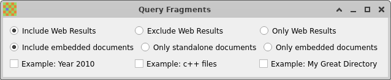

Copyright © 2005-2023 Jean-Francois Dockes
Разрешается копировать, распространять
и / или изменять этот документ в соответствии с условиями лицензии
GNU Free Documentation License, версии 1.3 или любой более поздней
версии, опубликованной Фондом свободного программного обеспечения
без каких-либо инвариантных разделов, без добавления текста в начале
или в конце. Копию этой лицензии можно найти на веб-сайте GNU.
Настоящий документ содержит описание полнотекстового поиска, описывает установку и использование приложения Recoll. Данная версия содержит описание Recoll 1.37.
Оглавление
ptransСписок таблиц
Данный документ содержит сведения о полнотекстовом поиске, а также описание установки и использования приложения Recoll. Описание включает необходимые обновления для версии Recoll 1.37.
Recoll долгое время
использовался исключительно в Unix-подобных системах и совсем
недавно (в 2015 г.) был переписан для MS-Windows.
Многие ссылки в этом руководстве, особенно относящиеся к расположению файлов,
имеют непосредственно отношение только к Unix и неприменимы к ОС Windows, где
ряд описываемых функций также недоступен. Руководство
постоянно обновляется. Однако до полного обновления документации
в большинство ссылок на общие файлы для ОС Windows необходимо подставлять
каталог установки Recoll (обычно C:/Program Files (x86)/Recoll). Особенно это касается
ссылки на каталог /usr/share в данном документе,
которому соответствует подкаталог Share
установочного каталога. Конфигурация пользователя по умолчанию хранится
в AppData/Local/Recoll в каталоге пользователя.
Там же хранится и сам индекс.
Не получая особенного удовольствия от чтения документации (как и большинство из нас), желающие попробовать Recoll для своих нужд не обнаружат ничего сложного в установке этого приложения. После запуска графического интерфейса recoll предложит разрешить индексирование домашнего каталога, тотчас же по завершении которого будет возможно выполнение поиска.
Однако не стоит это делать, если ваш домашний каталог содержит огромное количество документов, а вы не готовы ждать или объём дискового пространства на вашей системе невелик. В этом случае сначала может возникнуть необходимость настройки конфигурации для ограничения области индексации. Для этого в меню приложения recoll нужно перейти в: → , затем настроить раздел «Каталоги верхнего уровня», который определяет каталоги с которых начинается поиск по файловой системе.
На Unix-подобных системах, также может быть полезно установить ряд вспомогательных приложений для соответствующих типов документов (например, antiword для файлов Microsoft Word). Пакет Windows полностью автономен и включает наиболее полезные вспомогательные программы.
Recoll является программой полнотекстового поиска, которая ищет данные по содержимому, а не по внешним атрибутам (таким как имя файла). Поиск выполняется по заданным словам (элементам поиска), которые должны или не должны содержаться в искомом тексте. По итогам поиска выводится список совпавших документов, отсортированный так, чтобы наиболее точно совпадающие документы отображались первыми.
Нет необходимости запоминать в каком именно файле или сообщении электронной почты хранится заданный элемент информации. Достаточно сделать соответствующий запрос и программа выдаст список документов, где заданные ключевые слова встречаются наиболее часто, как это делают поисковые системы в Интернете.
Приложения полнотекстового поиска пытаются определить, какие документы больше всего подходят к задаваемым элементам поиска. Компьютерные алгоритмы для определения такого соответствия могут быть очень сложными, но в целом уступают возможности человеческого мозга быстро определять соответствие. Качество определения соответствия является наиболее важным аспектом при оценке поискового приложения. Для определения соответствия Recoll использует библиотеку вероятностного информационного поиска Xapian.
Во многих случаях поиск целесообразно выполнять по всем формам
слова, включая формы множественного числа, различные времена глагола
или однокоренные слова, происходящие от одной основы (например: floor, floors, floored,
flooring...). Запросы обычно автоматически
расширяются для поиска по всем таким формам (однокоренным словам).
Эту функцию можно отключить для поиска по конкретной форме.
Сам по себе морфологический поиск недостаточно хорошо
приспособлен к наличию орфографических ошибок или фонетических вариантов.
Поэтому, приложение полнотекстового поиска может содержать
и эту форму приближения.
Например, поиск по слову aliterattion
при возврате нулевого результата может предложить слова alliteration, alteration, alterations,
или altercation в качестве возможных вариантов замены.
Recoll основывает свои предложения
на текущем содержании индекса, в связи с чем могут быть предложены слова,
отсутствующие в стандартном словаре.
В качестве системы хранения и поиска информации Recoll использует библиотеку информационного поиска Xapian. Xapian является чрезвычайно развитым пакетом с использованием сложной вероятностной модели ранжирования.
Библиотека Xapian оперирует индексной базой данных, которая определяет местонахождение элементов поиска в файлах документов. Она эффективно обрабатывает сложные запросы, создаваемые сложным механизмом расширения запросов Recoll, и отвечает за сложнейшую задачу вычисления соответствия.
Recoll предоставляет лишь интерфейс и механизмы для обмена данными с индексом. Это включает извлечение текста из многих существующих форматов документов, работа с вариантами элементов поиска (с помощью систем морфологического поиска Xapian), а также возможных орфографических вариантов (с помощью программы проверки орфографии aspell), интерпретацию запросов пользователя и вывод результатов.
Если говорить кратко, Recoll делает всю грязную работу, а Xapian занимается интеллектуальной составляющей процесса.
Индекс Xapian может достигать больших размеров (примерно в объёме самих этих документов), но не является их архивом. Recoll может лишь отображать документы целиком, если они находятся там же, где были индексированы. Однако, последняя версия Recoll уже сохраняет данные из всех индексированных документов в виде обычного текста.
Recoll сохраняет все внутренние данные в формате UTF-8 и может индексировать множество различных типов файлов с разными наборами символов, кодировками и языками в один и тот же индекс. Он может обрабатывать документы, вложенные в другие документы (например, документ PDF, хранящийся в zip-архиве, отправленный в виде вложения в сообщении электронной почты…) с произвольной вложенностью.
По умолчанию Recoll обрабатывает тексты на восточно-азиатских языках путём формирования элементов поиска в виде произвольных последовательностей следующих друг за другом символов (n-грам). Однако способен интегрировать средства сегментации языка для китайского и корейского, что приводит к уменьшению размеров индекса и улучшению результатов поиска.
Стемминг — это процесс, посредством которого Recoll выделяет основу слова, чтобы поиск не зависел, например, от конкретного числа существительного (floor, floors) или времени глагола (flooring, floored). Поскольку механизмы стемминга зависят от конкретных грамматических правил каждого языка, в составе Xapian имеется специальный модуль стеммера для большинства языков, поддерживающих выделение основы.
Recoll хранит необработанную стеммером версию элементов поиска в главном индексе и использует вспомогательные базы данных для расширения элементов поиска (одну для каждого языка с выделением основы), благодаря чему можно переключать языки для стемминга между поисками или добавлять язык без необходимости полной переиндексации.
Документы на разных языках могут сохраняться в один индекс, что часто и происходит. В такой ситуации для индекса может быть указано несколько языков с выделяемой основой.
На данный момент Recoll не предпринимает попыток разработки автоматического распознавания языка, благодаря чему стеммер будет иногда применяться к элементам поиска из других языков с трудно предсказуемыми результатами. На практике такой подход при всех возможных недоразумениях оказался весьма полезным и значительно менее громоздким, чем сегрегация документов по языкам.
По умолчанию Recoll
удаляет большую часть диакритических знаков из элементов поиска,
и переводит текст в нижний регистр как перед сохранением в индексе,
так и перед использованием в поиске. В итоге сводятся на нет
какие-либо отличия в поиске с применением прописных букв
(US / us), либо диакритических
знаков (sake /
saké, mate / maté).
В то же время Recoll может хранить элементы поиска в исходном варианте без удаления диакритических знаков или преобразования регистра. В такой конфигурации поиск по умолчанию будет происходить как и прежде, но сохраняется возможность выполнения регистрозависимого поиска с учётом диакритических знаков. Более подробно это описывается в разделе о чувствительности к регистру и диакритическим знакам.
Recoll использует
множество параметров для точного определения предмета индексирования,
а также способа классификации и декодирования исходных документов.
Эти параметры хранятся в конфигурационных файлах.
В процессе установки конфигурация по умолчанию копируется в стандартное
местоположение (обычно что-то вроде /usr/share/recoll/examples). Значения
по умолчанию, заданные в файлах конфигурации в этом каталоге,
могут переопределяться значениями, заданными в личной
конфигурации пользователя. Конфигурация
Recoll по умолчанию предписывает
индексировать домашний каталог пользователя с использованием общесистемных
параметров. Наиболее часто используемые параметры можно настроить с помощью
меню настройки параметров в графическом интерфейсе
recoll.
Менее распространённые параметры могут быть заданы только с помощью
текстовых файлов.
Процедура индексации начинается автоматически (после получения разрешения) при первом запуске графического интерфейса программы recoll. Индексирование также может выполняться при запуске команды recollindex. По умолчанию при наличии соответствующих аппаратных ресурсов индексирование в Recoll осуществляется в многопоточном режиме и может выполнять несколько задач параллельно для извлечения текста, сегментации и обновления индекса.
Поиск обычно происходит внутри графического интерфейса recoll, который обладает большим количеством параметров, помогающих найти искомое. При этом существуют и другие способы выполнения запросов к индексу:
Служба поиска Gnome Shell.
Программный интерфейс Python
Модуль KIO slave для KDE.
Модуль Ubuntu Unity Scope.
Индексирование — это процесс, при котором
анализируется набор документов и данные записываются в базу данных.
Recoll обычно использует
инкрементальное индексирование, при котором документы анализируются
только если они изменялись после последнего индексирования.
При первом запуске анализу подвергаются все документы.
Принудительное выполнение полного индексирования может быть осуществлено
позднее при указании соответствующего параметра команды (recollindex -z или -Z).
При этом recollindex
пропускает файлы, которые на прошлом проходе вызвали ошибку.
Эта оптимизация производительности может быть отключена
с помощью параметра командной строки -k,
с которым программа будет повторно анализировать проблемные
файлы. Например, после обновления обработчика ввода.
Если файл был удалён, recollindex удаляет и соответствующие данные из индекса. Точный момент времени удаления зависит от режима индексирования. Предусмотрены меры для предотвращения удаления данных при использовании съёмных носителей.
В последующих разделах даётся обзор различных аспектов процесса индексирования и конфигурации со ссылками на описывающие их разделы.
В зависимости от типа данных при индексировании могут потребоваться
временные файлы, которые в некоторых случаях могут достигать довольно больших размеров.
Можно использовать переменные окружения RECOLL_TMPDIR
или TMPDIR для определения
места их создания (по умолчанию они создаются в
/tmp). Использование переменной TMPDIR полезно ещё и тем, что она также может
учитываться вспомогательными командами, запускаемыми
recollindex.
Индексация Recoll может выполняться в двух основных режимах:
Периодическое (или пакетное) индексирование . recollindex запускается через определённые промежутки времени. На Unix-подобных системах обычно используется для запуска в ночное время, которое прописывается в файле cron. В ОС Windows для запуска процедуры индексирования можно использовать Планировщик задач. В обох случаях, графический интерфейс Recoll включает простой интерфейс конфигурирования системного планировщика.
Индексирование в режиме реального времени . recollindex постоянно работает в качестве фоновой службы и использует механизм отслеживания изменений в файловой системе (например, inotify на Unix-подобных системах) для обнаружения изменений в файлах. Новые или обновлённые файлы мгновенно индексируются. Отслеживание дерева большой файловой системы может потреблять значительные ресурсы системы.
Выбор между двумя методами делается на основе личных предпочтений, а также может комбинироваться при организации нескольких индексов (например: можно использовать периодическое индексирование на большом каталоге с документацией, и индексирование в режиме реального времени на небольшом домашнем каталоге), либо настроить индекс таким образом, чтобы отслеживать только некое подмножество дерева.
Выбор метода и используемых параметров можно настроить в графическом интерфейсе recoll: → диалог .
Recoll поддерживает работу с несколькими индексами, каждый из которых определяется по своему конфигурационному каталогу. Конфигурационный каталог содержит несколько файлов с описанием объектов и способов индексирования.
При первом запуске recoll или recollindex создаётся
конфигурационный каталог по умолчанию.
Эта конфигурация используется для индексирования и
выполнения запросов до тех пор, пока не задана никакая конкретная конфигурация.
Она располагается в $HOME/.recoll/ на Unix-подобных системах и в %LOCALAPPDATA%/Recoll на ОС Windows (обычно C:/Users/[пользователь]/Appdata/Local/Recoll).
У всех параметров конфигурации есть значения по умолчанию, определённые в общесистемных файлах. Без дальнейшей настройки конфигурации по умолчанию все файлы домашнего каталога будут обрабатываться с применением наиболее целесообразного стандартного набора параметров. Настройка конфигурации позволяет задавать обработку произвольной области файловой системы, устанавливать способы выбора файлов, а также многое другое.
В некоторых случаях может быть полезно создавать дополнительные конфигурационные каталоги, например, для отделения общих индексов от личных, либо с целью использования преимуществ организации данных для улучшения точности поиска.
Для создания конфигурационного каталога необходимо создать пустой каталог в выбранном
месте, затем задать назначение каталога в
recoll или
recollindex
через настройки с помощью параметров командной строки
(-c /some/directory), либо в
переменной окружения (RECOLL_CONFDIR=/some/directory). После этого
любое изменение, выполняемое командами (например,
настройка конфигурации, поиск с помощью recoll или создание
индекса recollindex), будет
применяться к новому каталогу, а не к каталогу по умолчанию.
После создания нескольких индексов, каждый из них
можно использовать независимо, для чего желаемый индекс
указывается с параметром -c или в переменной окружения RECOLL_CONFDIR при запуске программы.
Также можно настроить одну конфигурацию в дополнение к своему индексу и отправлять запросы на один или несколько других индексов с помощью функции в графическом интерфейсе recoll или путём использования аналогичных средств командной строки и программных инструментов.
Одним из вариантов при выборе системным администратором тактики использовании функции множественного индекса может быть установка центрального индекса на общие данные (с возможностью исключения их из поиска) в дополнение к своим личным данным. Конечно, существуют и другие варианты. Например, нередко так случается, что поиск нужно выполнить в известном наборе файлов, в каковом случае сужение области поиска может привести к улучшению его результатов. Схожего эффекта можно достичь и при указании в поисковом запросе фильтра каталогов, но множественное индексирование позволяет работать с большей производительностью и в некоторых ситуациях стоит усилий, затраченных на её настройку.
В более сложном формате использования индексов выполняется улучшение производительности индексирования путём параллельного обновления нескольких индексов (при использовании нескольких ядер ЦП и дисков, а также при использовании нескольких компьютеров) с последующим слиянием индексов, либо с выдачей параллельных запросов.
См. более подробную информацию в разделе о настройке конфигурации нескольких индексов
Recoll умеет работать с несколькими различными типами документов. Параметры определения типов документов и их обработки определяются в файлах конфигурации.
Большинство типов файлов, такие как HTML или файлы текстовых редакторов, могут содержать только один документ. Однако некоторые типы файлов, такие как папки электронной почти или zip-архивы, содержат по нескольку документов с собственной индексацией, которые и сами могут быть составными. Такие иерархии могут иметь глубокое вложение. Например, Recoll может обрабатывать документ LibreOffice, прикреплённый к сообщению электронной почты в файле zip-архива папки электронной почты…
recollindex способен обрабатывать своими силами простой текст, HTML, OpenDocument (Open/LibreOffice), форматы электронной почты, а также некоторые другие типы документов.
Остальные типы файлов (например: postscript, pdf, ms-word, rtf
…) требуют наличия внешних приложений для предварительной обработки.
Список таких приложений приведён в разделе установка.
После каждой операции индексирования Recoll обновляет список команд,
необходимых для индексирования существующих типов файлов.
Этот список можно увидеть в меню
→
графического интерфейса
recoll.
Он хранится в текстовом файле missing
внутри конфигурационного каталога.
После установки отсутствующего обработчика будет логично
запустить recollindex для повторной обработки
файлов с ошибками, добавив параметр -k в интерфейсе командной строки или в графическом интерфейсе
с помощью меню → . Сделать это необходимо,
потому что recollindex в режиме работы
по умолчанию не будет повторно обрабатывать файлы, предыдущая обработка
которых была выполнена с ошибкой. В некоторых случаях целесообразно
очистить данные для категории файлов перед индексированием.
См. страницу руководства recollindex.
Если индекс не слишком велик, то проще будет построить его заново.
По умолчанию Recoll будет пытаться индексировать любой тип файла, который так или иначе можно прочитать. Делать это не всегда желательно, поэтому с одной стороны существуют способы для исключения некоторых типов файлов, с другой стороны можно задать список типов файлов, предназначенных для индексирования. В последнем случае любой тип файла, отсутствующий в списке, будет игнорироваться.
Исключение файлов по имени выполняется путём добавления шаблонов имён с подстановочными знаками в список skippedNames, что можно сделать из графического интерфейса в меню «Настройка индекса». Исключение по типу может быть задано путём ввода списка excludedmimetypes в конфигурационный файл. Список можно переопределить для подкаталогов.
Также можно определить исчерпывающий перечень индексируемых MIME-типов (остальные типы не будут индексироваться), путём задания конфигурационной переменной indexedmimetypes. Пример:
indexedmimetypes = text/html application/pdf
Данный параметр можно переопределить для подкаталогов Пример:
[/path/to/my/dir]
indexedmimetypes = application/pdf
(При изменении подобных параметров, не забудьте, что они действуют до конца файла или другого маркера раздела).
Параметр excludedmimetypes или
indexedmimetypes может быть задан либо
путём внесения изменений в
конфигурационный файл (recoll.conf) индекса, либо с помощью графического
интерфейса средства настройки конфигурации индекса.
При редактировании списка indexedmimetypes или excludedmimetypes, необходимо
предпочитать значения MIME, перечисленные в файле mimemap или в списках результатов Recoll,
выводу команды file
-i: между ними имеется ряд различий.
Вывод file -i можно использовать
только для файлов без расширений или для тех файлов,
расширения которых отсутствуют в списке mimemap
Индексирование некоторых документов может вызывать ошибки по нескольким причинам: может отсутствовать вспомогательная программа, документ может быть повреждён, разархивирование файла может оказаться невозможным в связи с нехваткой дискового пространства, и т.д.
По умолчанию, индексатор Recoll
версии 1.21 и более поздних не проводит повторную индексацию
файлов с ошибками, потому что некоторые ошибки индексирования
могут оказаться очень дорогостоящими (например, ошибка
разархивирования большого файла по причине нехватки дискового
пространства). Повторная индексация проводится только в случае
непосредственного указания параметра (-k)
при запуске команды recollindex
в командной строке или когда такое указание даётся в сценарии, запускающемся при старте recollindex.
Сценарий определяется в переменной конфигурации (checkneedretryindexscript) и делает
неубедительную попытку выяснить факт установки вспомогательной
программы путём проверки внесения изменений в общие каталоги
bin.
В тех редких случаях, когда происходит повреждение индекса
(о котором можно судить по странным результатам поиска
или сбоям), необходимо удалить файлы индекса до запуска
прохода переиндексирования. Для этого достаточно просто удалить каталог
xapiandb (см.
следующий раздел). Также можно
запустить recollindex с параметром
-z, который выполняет сброс
базы данных перед индексацией. Различие между двумя методами
заключается в том, что во втором случае текущий формат индекса
не изменяется, что может быть нежелательно, если текущая версия
Xapian уже поддерживает новый формат.
Данные индекса по умолчанию хранятся в подкаталоге
xapiandb конфигурационного
каталога Recoll, обычно это
$HOME/.recoll/xapiandb/ на Unix-подобных системах или C:/Users/[me]/Appdata/Local/Recoll/xapiandb
на Windows. Местоположение можно изменить
двумя различными способами (для различных целей):
Для данного конфигурационного каталога можно указать
нестандартное место расположения индекса с помощью
параметра dbdir в конфигурационном
файле (см.
раздел описания конфигурации). Этот способ подходит, главным образом,
в том случае, когда расположение конфигурационного каталога хотелось бы
оставить по умолчанию, но индекс требуется расположить в другом месте. Обычно это делают в связи
с нехваткой дискового пространства или низкой производительностью.
Другой конфигурационный каталог можно указать в
переменной окружения RECOLL_CONFDIR
или в параметре -c
команды Recoll.
Этот метод обычно используется для индексирования
различных областей файловой системы в различных
индексах. Например, при запуске указанной ниже команды:
recoll -c ~/.indexes-email
Recoll будет
использовать конфигурационный файл, находящийся в ~/.indexes-email/ и (если не
не указано иное в recoll.conf) будет искать индекс в
~/.indexes-email/xapiandb/.
Использование нескольких конфигурационных каталогов и конфигурационных параметров позволяет настраивать несколько конфигураций и индексов для обработки любого подмножества доступных данных, использующихся для выполнения поиска.
Имеется ещё довольно большое количество параметров, которые можно задать в самом конфигурационном файле для настройки хранения данных Recoll. Они описаны в разделе главы по конфигурации.
Размер индекса определяется по размеру совокупности документов, но эта зависимость может сильно варьироваться. Для типичного смешанного набора документов, размер индекса часто будет близок к размеру набора данных. В особых случаях (например, набор сжатых mbox-файлов), индекс может значительно превышать документы по размеру. Также он может быть значительно меньше, если документы содержат большое количество изображений или других неиндексируемых данных (в качестве наиболее радикального примера можно представить набор mp3-файлов, где индексируются только теги).
Конечно же, изображения, звук и видео не увеличивают размер индекса, а это означает, что в подавляющем большинстве случаев используемое индексом пространство будет ничтожно мало по сравнению с общим количеством данных на компьютере.
Каталог данных индекса (xapiandb) содержит только такие данные, которые
могут быть полностью воссозданы повторным индексированием
(пока существуют исходные документы), и удаление их безопасно.
Версии Xapian обычно поддерживают несколько форматов для хранения индекса. Текущая старшая версия Xapian будет использовать текущий формат для создания новых индексов, а также будет поддерживать формат предыдущей старшей версии.
Xapian не будет
автоматически преобразовывать существующий индекс из старого
формата в новый. Для обновления текущего формата в новый формат,
а также когда формат индекса настолько устарел, что более
не поддерживается, необходимо полностью удалить
старый индекс (обычно ~/.recoll/xapiandb),
а затем запустить обычную команду индексирования. Команда
recollindex с параметром
-z в данном случае не сможет исправить
ситуацию.
Индекс Recoll не сохраняет полных копий индексируемых документов (фактически начал сохранять с версии 1.24). Но содержит достаточное количество данных для почти полного их воспроизведения. Поэтому, при иднексировании секретных данных доступ к каталогу базы данных должен быть запрещён.
Recoll создаёт конфигурационный каталог с правами доступа 0700 (доступ только для владельца). Поскольку каталог данных индекса по умолчанию является подкаталогом конфигурационного каталога, что позволяет обеспечить ему надёжную защиту.
Если ваша установочная конфигурация имеет отличия от этой схемы, то возникает
необходимость продумать способ защиты индекса, установить соответствующие
права доступа для каталога и файлов, а также, по возможности, подправить
параметры команды umask, применяемой при обновлении
индекса.
Интерес к данным рассуждениям может возникнуть только при превышении индексом размера 5 Гбайт. Размер более 10 Гбайт превращает вопрос в серьёзную проблему. Размер индекса у большинства пользователей будет несравнимо меньше. Для справки, размер 5 Гбайт идентичен содержимому примерно 2000 Библий, что составляет значительный объём текстовой информации. При наличии у вас значительного объёма текстовых данных (запомните: изображения не считаются, текстовая составляющая PDF-файлов обычно меньше 5% от размера файла) ознакомление с содержимым этого раздела крайне необходимо.
Количество операций записи, совершаемое Xapian при построении индекса, имеет нелинейную зависимость от размера индекса (близко к среднему значению между линейной и квадратичной). Для больших индексов это может привести к проблемам с производительностью и даже стать причиной износа SSD-дисков.
Остроту проблемы можно снизить путём соблюдения следующих базовых принципов:
Большой набор данных разбивается на несколько наборов сравнительно небольшого размера. Запросы к этим индексам в дальнейшем можно запараллелить (с помощью функции использования внешних индексов Recoll) или объединить с помощью xapian-compact.
Необходимо обеспечить наличие большого объёма ОЗУ и задать
максимально возможное значение параметра
idxflushmb конфигурации
Recoll без
подкачки на диск (необходимо поэкспериментировать).
Значение 200 составляет минимально необходимую величину параметра в этом контексте.
Следует использовать Xapian 1.4.10 или более свежую версию продукта, поскольку она содержит значительное улучшение по количеству операций записи.
Параметры конфигурационных файлов Recoll определяют индексируемые области файловой системы и способы обработки файлов. Значения могут задаваться путём изменения текстовых файлов. Большинство наиболее часто используемых параметров также можно задать в диалогах графического интерфейса recoll.
При первом запуске recoll выводится предложение
немедленно создать индекс. Если перед созданием индекса необходимо
настроить конфигурацию, то на данном этапе можно нажать кнопку
Отмена, после чего откроется интерфейс
настройки конфигурации.
При выходе из настройки на этом этапе recoll
создаст конфигурационный каталог по умолчанию с пустыми
конфигурационными файлами, после чего в эти файлы уже можно
вносить изменения.
В текущем документе подробная информация по настройке конфигурации содержится в главе с описанием установки или на странице руководства recoll.conf(5). Оба документа автоматически создаются из комментариев, содержащихся в конфигурационном файле.
Наиболее полезной переменной на момент установки будет, вероятно,
topdirs, в которой перечисляются
индексируемые поддеревья и файлы.
Приложения, необходимые для индексирования различных типов файлов помимо простого текста, HTML и файлов электронной почты (например: pdf, postscript, ms-word…), описаны в разделе по внешним пакетам.
В Recoll могут использоваться два несовместимых типа индекса, имеющих отличия по обработке регистра символов и диакритических знаков. Далее в соответствующем разделе эти два типа описываются более подробно. В большинстве случаев подходит тип по умолчанию.
Большая часть параметров конфигурации может быть установлена
в графическом интерфейсе recoll
(задайте переменную RECOLL_CONFDIR или примените
параметр -c для использования
нестандартного индекса).
В графическом интерфейсе диалог настройки конфигурации открывается с помощью меню → . Он разделён на четыре вкладки, «Общие параметры», «Локальные параметры», «История в веб» (подробно) и «Параметры поиска».
Вкладка «Общие параметры» позволяет настраивать общие переменные, такие как списки начальных каталогов/каталогов верхнего уровня, пропущенных путей и языков со словоформами.
Вкладка «Локальные параметры» позволяет настраивать переменные, которые можно переопределить для подкаталогов. Эта вторая вкладка содержит изначально пустой список настраиваемых каталогов, которые можно туда добавить. Затем задаются переменные каталога, выбранного в данный момент (или находящегося на верхнем уровне при выборе пустой строки).
Вкладка «Параметры поиска» определяет общие для индекса параметры поискового запроса, которые оказывают влияние на все инструменты поиска, не ограничиваясь графическим интерфейсом.
Значение большинства элементов интерфейса совершенно очевидно
и описано в содержимом всплывающей подсказки к текстовой надписи. Для
получения более подробной информации необходимо обратиться к разделу
конфигурации в данном руководстве.
Средство настройки конфигурации обычно учитывает комментарии и большую часть форматирования конфигурационных файлов. Поэтому оно вполне может быть использовано для внесения изменений в файлы, редактируемые вручную. Однако прежде всего рекомендуется создавать резервные копии этих файлов…
Несколько индексов Recoll могут быть созданы путём создания нескольких конфигурационных каталогов, которые обычно предназначаются для индексации различных областей файловой системы.
При этом конкретная конфигурация выбирается посредством установки
переменной окружения RECOLL_CONFDIR
или запуском recoll
и recollindex
с параметром -c.
Программа recollindex, использующаяся для создания или обновления индекса, всегда работает с одним индексом. Различные конфигурации полностью независимы (параметры никогда не используются совместно при индексировании на разных конфигурациях).
Все интерфейсы поиска (recoll, recollq, Python API, и т.д.) используют параметры и данные индекса основной конфигурации. При этом могут запрашиваться данные из нескольких дополнительных индексов. Но дополнительные индексы используются только в качестве источников данных. Конфигурационные параметры дополнительных индексов игнорируются. Это означает, что ряд параметров в совместно используемых конфигурациях индексов должен совпадать.
При осуществлении поиска, текущий основной индекс
(указанный в RECOLL_CONFDIR или -c) всегда активен. Если это нежелательно,
можно в основной конфигурации индексировать пустой каталог.
Параметры конфигурации индекса можно устанавливать либо
с помощью текстового редактора в файлах или, для большинства
параметров, с помощью графического
интерфейса конфигурации индекса recoll
. В последнем случае применяются параметры конфигурационного каталога,
который был указан в RECOLL_CONFDIR или в параметре -c, и в процессе работы
с графическим интерфейсом сменить конфигурационный каталог на другой уже не представляется возможным.
См. раздел настройки конфигурации для подробного описания параметров
Некоторые параметры конфигурации должны совпадать у ряда индексов, используемых для совместного поиска. Наиболее очевидно, что у всех одновременно запрашиваемых индексов должны совпадать параметры по регистрозависимости и использованию диакритических знаков, но существуют и другие ограничения. Большая часть соответствующих параметров влияет на формирование элементов поиска.
Использование нескольких индексов подразумевает выполнение некоторого объёма операций в командной строке или диспетчере файлов. Например, дополнительные конфигурационные каталоги создаются пользователем самостоятельно. В графическом интерфейсе выполнение таких операций не предусмотрено. Это сделано во избежание непреднамеренного создания дополнительных каталогов при ошибочном указании соответствующего параметра в командной строке. А также графический интерфейс или индексатор для работы с определённой конфигурацией необходимо загружать с указанием соответствующего параметра или переменной окружения.
Нижеследующее описание относится к Unix-подобным системам
Сначала создаётся конфигурация и индекс:
mkdir /путь/к/моей/новой/конфигурации
Конфигурирование нового индекса может осуществляться
в графическом интерфейсе recoll,
запущенном из командной строки с целью передачи параметра
-c (можно запускать с помощью
специально созданного файла на рабочем столе) с последующим использованием
графического инструмента конфигурации индекса для настройки индекса.
recoll -c /путь/к/моей/новой/конфигурации
В то же время можно просто открыть главный конфигурационный файл в текстовом редакторе:
мой_редактор/путь/к/моей/новой/конфигурации/recoll.conf
Создание и обновление индекса может выполняться из командной строки:
recollindex -c /путь/к/моей/новой/конфигурации
А также из меню «Файл» графического интерфейса, запущенного с тем же самым параметром (recoll, см. выше).
Графический интерфейс также позволяет настроить пакетное
индексирование для нового индекса. Индексирование в режиме реального
времени настраивается в графическом интерфейсе индекса
по умолчанию (при запуске графического интерфейса с указанием
другого индекса в параметре -c элемент меню будет неактивен).
Новый индекс можно использовать отдельно при указании соответствующего параметра:
recoll -c /путь/к/моей/новой/конфигурации
А также параллельно с индексом по умолчанию при запуске
recoll
без параметра -c, но с выполнением
настройки на вкладке Внешние
индексы в диалоге «Настройки», который можно
открыть либо через меню → → , либо
→ . Более подробная
информация доступна в разделе внешние индексы
в графическом интерфейсе.
При работе в Recoll на Windows самым простым способом использования внешних индексов будет применение нескольких значков рабочего стола для запуска графического интерфейса программы. Для организации такой работы требуется следующий порядок действий:
Создайте в любом удобном для вас месте папку для размещения новой конфигурации индекса.
Выделите значок Recoll на рабочем столе,
скопируйте и вставьте его. Если при установке программы
значок рабочего стола не был создан, можно перетащить
на рабочий стол программу
recoll.exe из C:\Program Files (X86)\Recoll
правой клавишей мыши и затем выбрать «Создать ярлык» для создания
значка.
Щёлкните правой клавишей мыши по новому значку и перейдите на вкладку «Свойства ярлыка»
Измените значение поля Объект с исходного
C:\Program Files
(x86)\Recoll\recoll.exe на примерно следующую запись:
"C:\Program Files (x86)\Recoll\recoll.exe" -c C:\путь\к\моему\новому\каталогу
Если путь каталога содержит пробелы, то его необходимо заключить в двойные кавычки.
Сохраните новый значок нажатием кнопки «OK» и дважды щёлкните по нему для запуска графического интерфейса Recoll в новой конфигурации. В результате должно открыться окно установки начальной конфигурации.
Любой другой метод запуска графического интерфейса или
программы recollindex
с параметром -c или соответствующим значением
переменной окружения RECOLL_CONFDIR также будет прекрасно работать.
Начиная с версии 1.18 в Recoll
возможно построение индекса с учётом
чувствительности к регистру и диакритическим знакам,
либо без таковой. Исходный поисковый запрос Résumé, в первом случае фактически будет
выглядеть как Résumé,
а во втором — как resume.
При этом поиск без чувствительности к регистру и диакритическим знакам может выполняться при любом типе индекса: в случае регистрозависимого индекса пользовательский запрос будет расширен до совпадения со всеми существующими в индексе вариантами регистра и диакритических знаков. При урезанном индексе перед выполнением поиска поисковый запрос приводится к стандартной форме.
Неурезанный тип индекса различает регистр и
диакритические знаки, позволяя, например, возвращать
различные результаты при поисковом запросе US и
us, а также resume и résumé. Для получения более подробной информации
ознакомьтесь с разделом
о поиске с учётом регистра и диакритических знаков.
Тип создаваемого индекса регулируется параметром
конфигурации indexStripChars,
который изменяется только путём внесения изменения в конфигурационный
файл. Любое такое изменение предполагает переиндексацию (автоматическая переиндексация
программой Recoll не предусмотрена), а также все
параллельно используемые в поиске индексы должны принадлежать к одному типу
(проверка средствами Recoll не производится).
По умолчанию, если не задан параметр indexStripChars, Recoll создаёт
урезанную версию индекса.
В качестве расплаты за дополнительные возможности неурезанный индекс будет занимать чуть больше места, чем урезанный (примерно на 10%). Поисковые запросы будут сложнее и выполнение их будет занимать чуть больше времени. Также необходимо учитывать, что данный функционал используется сравнительно редко, в связи с чем логично предположить возможность появления разного рода странностей в поведении программы.
Одним из наиболее серьёзных последствий при применении неурезанного индекса может быть невозможность использования некоторых фраз и поиска с учётом расположения слов: в связи с необходимостью расширения каждого элемента поиска при создании всех комбинаций поиска на каком-то этапе мультипликативное расширение может выйти из под контроля.
Примечание: вполне возможно, что чтение этого раздела конкретно для вас не представляет особой необходимости.
Автоматическая конфигурация по умолчанию в подавляющем большинстве случаев
прекрасно справляется. Более-менее общеполезной может быть только та часть, в которой
говорится об отключении многопоточного режима. Поэтому, спешим предоставить эту информацию
сразу. Отключение многопоточности обеспечивает следующее значение параметра в recoll.conf:
thrQSizes = -1 -1 -1
Служба индексирования Recoll называется recollindex и она может использовать многопоточность для увеличения скорости индексирования на многопроцессорных системах. На данный момент она работает на Mac OS и Unix-подобных системах, но не на Windows.
Работа, выполняемая с файлами индекса, делится на несколько этапов, некоторые из которых могут исполняться в нескольких потоках. Имеются в виду следующие этапы работы:
Переход по файловой системе: данная операция всегда выполняется в основном потоке.
Преобразование файлов и извлечение данных.
Обработка текста (разбивка, стемминг и т.д.).
Обновление индекса Xapian.
Более подробно ознакомиться с настройкой индексирования Recoll применительно к многопоточности можно и в более содержательном документе на эту тему.
Конфигурация потоков контролируется двумя параметрами конфигурационного файла.
thrQSizesДанная переменная определяет конфигурацию очереди входящих заданий. Всего может быть три очереди для этапов 2, 3 и 4, и этот параметр определяет глубину очереди для каждого этапа (три целочисленных значения). Если для какого-то конкретного этапа установлено значение -1, то для данного этапа очередь не используется и переходит к выполнению следующего этапа. Практика показала, что повышение глубины очереди не приводит к увеличению производительности. Значение 0 для первой очереди сообщает Recoll о необходимости выполнения автоконфигурации (в данном случае больше ничего не требуется, параметр thrTCounts не используется) — это конфигурация по умолчанию.
thrTCountsДанный параметр определяет число потоков, использующихся на каждом этапе. Если в качестве глубины очереди какого-либо этапа в предыдущем параметре указано значение -1, указанное здесь число потоков для данного этапа игнорируется. Для последнего этапа нет смысла использовать значение отличное от 1, поскольку обновление индекса Xapian обязательно выполняется в однопоточном режиме (и защищено мьютексом).
Если первое значение в thrQSizes равно 0, thrTCounts игнорируется.
В следующем примере используется три очереди (глубиной 2), а также 4 потока для преобразования исходных документов, 2 потока для обработки извлечённых из них текстов и один для обновления индекса. По результатам тестов эта конфигурация лучше всего обеспечивала работу тестируемой системы (четырёхпроцессорная с несколькими дисками).
thrQSizes = 2 2 2
thrTCounts = 4 2 1
Нижеследующий пример работает с использованием одной очереди и полная обработка каждого документа выполняется одним потоком (в большинстве случаев несколько документов так или иначе будут обрабатываться параллельно). Потоки будут использовать взаимное исключение при входе в режим обновления индекса. На практике производительность в целом будет близка к прецедентам, но в некоторых случаях результат будет заметно хуже (например, архив Zip будет обрабатываться исключительно последовательно), поэтому вышеприведённый подход представляется более предпочтительным. Впрочем, попробуйте сами, результаты вашей работы могут оказаться иными… Последние два значения thrTCounts просто игнорируются.
thrQSizes = 2 -1 -1
thrTCounts = 6 1 1
И уже знакомый нам заключительный пример отключает многопоточный режим работы. Индексирование будет выполняться в один поток.
thrQSizes = -1 -1 -1
Программа recollindex выполняет
обновление индекса. Запустить его можно либо из
командной строки, либо из меню в графическом интерфейсе recoll.
При запуске из графического интерфейса, индексирование
будет работать с той конфигурацией recoll, с которой приложение было
запущено. При запуске из командной строки нестандартный
конфигурационный каталог для recollindex можно указать
в переменной окружения RECOLL_CONFDIR
или в параметре -c confdir.
Если программа recoll при запуске не сможет найти индекс, то автоматически запустит процесс индексирования (если не будет выполнена отмена).
В графическом интерфейсе меню находятся элементы для запуска или остановки текущей операции индексирования. Если в данный момент индексирование не выполняется, то выбор ограничен элементами и . В первом случае будут обработаны только изменённые файлы, во втором случае индекс удаляется для обработки всех файлов.
Управлять операциями индексирования с помощью графического интерфейса можно, как на Linux, так и на Windows. Остановка индексатора при этом выполняется с помощью элемента меню графического интерфейса recoll → .
Кроме того, на Linux процесс индексирования recollindex можно прервать отправкой прерывания (Ctrl-C, SIGINT) или сигнала завершения процесса (SIGTERM).
При остановке индексирования может пройти некоторое время до фактического завершения работы recollindex, так как для корректного сброса и закрытия индекса требуется некоторое время.
После прерывания индексирования, строй индекса может оказаться не совсем последовательным, так как некоторые операции, обычно выполняемые в конце процесса индексирования, могли быть пропущены (например, базы данных стемминга и орфографических вариантов могут оказаться непоследовательно заполненными или устаревшими). Для восстановления последовательности построения всех данных достаточно всего лишь снова запустить индексирование. Оно будет перезапущено в точке прерывания (будет выполнен обход по всему дереву файлов, но файлы, которые уже были индексированы до прерывания и для которых содержание индекса не устарело, повторному индексированию не подлежат).
recollindex имеет большое количество параметров, описанных на странице руководства. Здесь будут описаны лишь некоторые из них.
Параметр -z сбрасывает
индекс при запуске. Это практически полностью соответствует
удалению файлов индекса (нюанс заключается в том, что
версия формата файла Xapian
в данном случае останется прежней).
Параметр -Z принудительно
обновляет индекс всех документов без предварительного
сброса. Здесь не будет «начала с чистого листа», характерного
для -z, но выгода заключается
в том, что индекс остаётся доступен для запросов в процессе
переиндексирования, что может считаться серьёзным
преимуществом при значительных размерах индекса
(в некоторых ситуациях переиндексация может потребовать
несколько дней).
Параметр -k обеспечивает
принудительную повторную индексацию файлов, которые
не получилось индексировать в прошлый раз,
например, по причине отсутствия вспомогательной программы.
Особый интерес также могут представлять параметры
-i и -f. -i позволяет индексировать список конкретных
файлов (может передаваться с параметром командной строки или считываться
из stdin). -f заставляет recollindex игнорировать
параметры выбора файлов из конфигурации.
В совокупности эти параметры позволяют выстроить собственный
процесс выбора файлов для некоторой области файловой системы,
путём добавления каталога верхнего уровня в список skippedPaths и применения соответствующего
метода выбора файлов с целью построения списка файлов для передачи
recollindex
-if. Простейший пример:
find . -name indexable.txt -print | recollindex -if
recollindex
-i вместо входа в
подкаталоги, указанные в качестве параметра, просто
добавляет их в качестве элементов индекса. Построение полного
списка файлов осуществляется здесь с помощью внешнего средства
выбора файлов.
Наиболее стандартным способом организации процесса индексирования
являются выполняемые в ночное время задания cron. Например,
следующая запись crontab обеспечит
проведение ежедневного индексирования в 3:30AM (при этом recollindex предполагает, что
путь к индексу находится в PATH):
30 3 * * * recollindex > /some/tmp/dir/recolltrace 2>&1
То же самое можно выполнять и с помощью anacron:
1 15 su mylogin -c "recollindex recollindex > /tmp/rcltraceme 2>&1"
Графический интерфейс Recoll
предусматривает возможность управления заданиями crontab
для recollindex. Для этого необходимо
зайти в соответствующий диалог с помощью меню → . Операция
выполняется с помощью обычной службы cron и не предполагает
доступа ко всем имеющимся возможностям планирования cron.
Создаваемые этим инструментом задания отмечаются маркером
RCLCRON_RCLINDEX=, который позволяет
отличать нужные инструменту записи. Соответственно, неизбежен побочный
эффект в виде установки для процесса переменной окружения,
фактически не использующейся, а проставляемой лишь в качестве маркера.
Для внесения изменений в crontab обычно применяется команда crontab -e (которая запускает редактор
vi
для редактирования файла). В каждой конкретной системе для этого могут использоваться и другие, более
совершенные инструменты.
Необходимо осознавать возможность существования различий между интерактивной средой окружения командной строки текущей системы и средой окружения командной строки, применяемой командами crontab. В особенности это может касаться переменной PATH. Рекомендуется ознакомиться с руководством crontab для получения информации о возможных проблемах.
Отслеживание или индексирование в режиме реального времени
выполняется путём запуска команды recollindex
-m. С этим параметром,
recollindex
будет постоянно отслеживать изменения файлов и обновлять
индекс.
На ОС Windows, процесс отслеживания запускается из графического интерфейса recoll в меню «Файл». На Unix-подобных системах, существуют иные возможности, которые будут раскрыты в последующих разделах.
При работе в режиме реального времени в меню графического интерфейса recoll доступны две операции: и .
Операция фактически перезапускает индексатор для выполнения полного обхода индексируемой области с обработкой изменённых файлов, а затем вновь переключается на режим отслеживания. Эта операция приносит лишь ограниченную пользу, и, большей частью, лишь в случаях, когда конфигурация индексатора настроена на отсрочку обновлений или для немедленной принудительной перестройки данных стемминга и фонетических вариантов, обрабатываемых индексатором в режиме реального времени лишь через определённые промежутки времени.
При всём удобстве индексирования данных в режиме реального времени часто повторяющаяся индексация может создавать значительную нагрузку на систему при изменении таких файлов, как папка электронной почты. Отслеживание больших файловых деревьев также заметно нагружает системные ресурсы. Поэтому вряд ли имеет смысл включать этот режим на маломощных системах. Периодического индексирования в большинстве случаев бывает вполне достаточно.
Версия Recoll 1.24 позволяет задавать конфигурационный параметр monitordirs для указания определённого набора индексируемых файлов, которые будут отслеживаться в режиме реального времени. В такой ситуации пошаговый проход по всему дереву может быть запущен либо путём перезапуска индексатора, либо просто запуском recollindex, который уведомит запущенный процесс. Меню графического интерфейса recoll также содержит элемент управления этим процессом.
Установка содержит два примера файлов (в каталоге
share/recoll/examples)
для запуска службы индексирования с помощью systemd.
recollindex.service
используется для запуска recollindex в качестве
службы пользователя. Индексатор будет запускаться при входе
пользователя в систему и работать до тех пор, пока сеанс активен.
recollindex@.service
является шаблоном службы, которая будет использоваться
для запуска индексатора в процессе загрузки и работать
от имени конкретного пользователя.
Это может быть полезно при запуске текстового поиска
в качестве общей службы (например, когда пользователи
получают доступ к ней по WEB UI).
Если конфигурация настроена именно так, то юнит-файлы
в системе должны находиться в пути systemd по умолчанию
(обычно /usr/lib/systemd/system/ и
/usr/lib/systemd/user/).
В противном случае, может возникнуть необходимость
скопировать туда файлы перед запуском службы.
При установке юнит-файлов в соответствующем месте расположения пользовательский юнит может быть запущен с помощью следующих команд:
systemctl --user daemon-reload systemctl --user enable --now recollindex.service
При запуске от имени суперпользователя системный юнит-файл может быть задан под определённого пользователя:
systemctl daemon-reload
systemctl enable --now recollindex@username.service
(Разумеется, вместо username в этом примере необходимо
подставить настоящее имя пользователя).
На KDE,
Gnome и некоторых других
средах рабочего стола, служба может быть автоматически
запущена при входе в систему во время создания файла рабочего
стола в каталоге ~/.config/autostart. Выполнить эту настройку
можно с помощью графического интерфейса Recoll. Перейдите в меню .
В более устаревшей конфигурации X11 запуск службы обычно выполнялся из сценария сеанса пользователя.
Сценарий rclmon.sh
можно использовать для простого запуска и остановки службы.
Он находится в каталоге examples
(обычно /usr/local/[share/]recoll/examples).
Например, хорошо известные сеансы на основе xdm могут иметь сценарий
.xsession со следующими
строками на конце:
recollconf=$HOME/.recoll-home recolldata=/usr/local/share/recoll RECOLL_CONFDIR=$recollconf $recolldata/examples/rclmon.sh start fvwm
Запускается служба индексирования, а затем и предполагаемый сеансом оконный менеджер.
По умолчанию служба индексирования будет отслеживать
состояние сеанса X11 и прекратит работу при его завершении, но
необходимости в полном отключении нет. (Отслеживание сервера
X11 можно отключить
с помощью параметра -x с командой recollindex).
Если службу планируется использовать вне всякой связи с сеансом
X11, необходимо добавить
параметр -x для отключения
отслеживания сеанса X11
(в противном случае служба не запустится).
Журналирование. По умолчанию сообщения от
службы индексирования отправляются в тот же файл, который
используется с интерактивными командами (logfilename). Может возникнуть необходимость
изменить это поведение путём настройки конфигурационных
параметров daemlogfilename и daemloglevel.
Также обрезка файла журнала будет выполняться только при запуске
службы. В случае постоянной работе службы файл журнала
может вырастать до значительных размеров в зависимости от
уровня журнала.
Unix-подобные
системы: увеличение ресурсов для inotify. На
системах Linux отслеживание большого дерева может потребовать
увеличения ресурсов, доступных для inotify, которые
обычно определяются в /etc/sysctl.conf.
### inotify # # cat /proc/sys/fs/inotify/max_queued_events - 16384 # cat /proc/sys/fs/inotify/max_user_instances - 128 # cat /proc/sys/fs/inotify/max_user_watches - 16384 # # -- Change to: # fs.inotify.max_queued_events=32768 fs.inotify.max_user_instances=256 fs.inotify.max_user_watches=32768
Усечение дерева или настройка значения параметра
max_user_watches
может быть особенно необходима, если индексирование
завершается при выводе сообщения с кодом ошибки ENOSPC (28) от inotify_add_watch.
Уменьшение частоты повторной индексации для часто
изменяющихся файлов. При работе в режиме реального
времени может возникнуть необходимость в индексации некоторых
файлов, но чрезмерно частое их изменение оказывает повышенную
нагрузку на систему. В конфигурации Recoll имеется параметр, позволяющий
указывать минимальное время, ранее которого файл, представленный
в виде шаблона с символами подстановки, не может быть повторно индексирован.
См. параметр mondelaypatterns
в разделе
конфигурации.
Формат PDF очень важен для научной и технической документации, а также для архивирования документов. Он наделён широкими возможностями по хранению метаданных в составе документа, и эти возможности получили реальное применение на практике.
Соответственно, обработчик входных файлов PDF rclpdf.py отличается от других обработчиков наличием более широких функциональных возможностей, а также более тонкой настройкой. В частности, rclpdf.py способен выполнять следующие функции:
Извлечение конкретных тегов метаданных из пакета XMP при соответствующей настройке.
Извлечение вложенных PDF-файлов.
Автоматическое распознавание символов в случае отсутствия текста в документе. Эта функция выполняется путём запуска внешней программы, которая на данный момент описана в отдельном разделе, так как OCR-система также может распознавать текст в файлах изображений отдельно от формата PDF.
Сценарий rclpdf.py
в Recoll, начиная с версии
1.23.2, умеет извлекать поля метаданных XMP
с помощью команды pdfinfo
(обычно находится в составе poppler-utils). Контролируется
переменной конфигурации pdfextrameta,
в которой указываются извлекаемые теги и, по-возможности,
присваиваемые им имена.
В переменной pdfextrametafix можно указать файл с кодом Python для изменения полей метаданных (доступно для Recoll 1.23.3 и более поздних версий; у версии 1.23.2 эквивалентный код встроен в сценарий обработчика). Пример:
import sys import re class MetaFixer(object): def __init__(self): pass def metafix(self, nm, txt): if nm == 'bibtex:pages': txt = re.sub(r'--', '-', txt) elif nm == 'someothername': # do something else pass elif nm == 'stillanother': # etc. pass return txt def wrapup(self, metaheaders): pass
Если определён метод «metafix()», то он вызывается для каждого поля метаданных. Для каждого документа PDF cоздаётся новый объект MetaFixer (поэтому объект может сохранять состояние для выполнения таких операций, как устранение дублирующихся значений). Если же определён метод «wrapup()», то он вызывается только после завершения обработки полей XMP со всеми метаданными в качестве параметра, представленными в виде массива пар «(nm, val)». При этом сохраняется возможность применения альтернативного подхода для изменения или добавления/удаления полей.
Более подробная информация по индексированию свойств XMP для файлов PDF доступна на этой странице.
При установке pdftk, а также конфигурационной переменной pdfattach, обработчик входных PDF-файлов будет пытаться извлекать PDF-вложения для индексирования в виде поддокументов PDF-файла. Эта фукнция отключена по умолчанию в связи с тем, что вызывает некоторое замедление индексирования PDF-файлов, даже если ни одно вложение не будет обнаружено (на моём опыте вложения PDF-файлов встречаются достаточно редко).
Если обрабатываемый файл не содержит текста, то обработчик входных PDF-файлов Recoll может вызвать внешнюю OCR-программу. Данные OCR сохраняются в кеше отдельных файлов для предотвращения внесения каких-либо изменений в оригиналы.
Следует учитывать, что при возможности внесения изменений в файлы (или их копии), лучше всего запустить модуль OCRmyPDF (либо аналогичный), который добавляет текстовый слой в сам исходный PDF-файл (например, это позволяет открывать из Recoll документ в просмотрщике PDF-файлов непосредственно в месте найденного поискового запроса с возможностью выполнения вторичного поиска встроенным инструментом).
Для того чтобы включить функцию распознавания символов (OCR)
в Recoll, необходимо установить
OCR-приложение (tesseract
или ABBYY), включить OCR в
обработчике PDF-файлов (для чего в конфигурационном файле индекса
переменная pdfocr устанавливается в значение
1), затем следует указать метод работы OCR
в Recoll путём установки
переменных
конфигурации. Все параметры можно локализовать в
подкаталогах с помощью обычного механизма основной конфигурации
(в разделах для указания путей).
Пример фрагмента конфигурационного файла recoll.conf:
pdfocr = 1 ocrprogs = tesseract pdfocrlang = eng
Основное обновление этой функции произошло в Recoll 1.26.5. В более ранних версиях содержался менее полный функционал без кеширования при запуске внешней программы OCR в обработчике PDF-файлов. Новая функция обладает следующими возможностями:
Вывод OCR кешируется и сохраняется в отдельных файлах. Кеширование полностью основано на хэш-значении исходного содержимого файла, чтобы исключить привязку к его имени. Основываясь на путях размещения, первый слой обеспечивает быстрое выполнение операций для неизменявшихся (неперемещённых) файлов, а хэш-данные (которые всё ещё обрабатываются на порядок быстрее, чем OCR) повторно вычисляются только в случае их перемещения. OCR выполняется только в том случае, если файл ещё не обрабатывался или был изменён.
Добавлена поддержка специальной программы в виде простого модуля Python, благодаря чему возможна работа с любым OCR-движком для выполнения операций из командной строки.
Изначально содержит модули tesseract (Linux и Windows), и ABBYY FineReader (на Linux тестировалось работа с версией 11). ABBYY FineReader является коммерческим продуктом с закрытым исходным кодом, но в ряде случаев работает лучше, чем tesseract.
OCR на данный момент вызывается только из обработчика PDF-файлов, но использование его для других типов изображений тоже не должно представлять никаких трудностей.
Если доступна программа OpenAI Whisper и в конфигурационных файлах установлены соответствующие параметры, то обработчик аудиофайлов Recoll может запустить распознавание речи для аудиофайлов и полученный текст будет проиндексирован. Более подробную информацию см. в соответствующем разделе «Вопросов и ответов».
Результаты распознавания речи будут сохраняться в кеше точно также, как и результаты распознавания символов (OCR) изображения.
Изначально в Recoll отсутствовала поддержка по индексированию съёмных устройств (переносных дисков, ключей USB, и т.д.). В последних версиях ситуация несколько улучшилась и поддержка индексирования съёмных устройств производится одним из двух способов:
Путём индексирования тома в основной, фиксированный индекс с гарантированным завершением индексирования до удаления тома из системы (начиная с Recoll 1.25.2).
Путём сохранения индекса тома на самом томе (начиная с Recoll 1.24).
Начиная с версии 1.25.2, Recoll использует простой способ, гарантирующий, что данные индекса отсутствующего тома не будут удалены. Это обеспечивается при соблюдении двух условий:
Точка монтирования тома должна входить в список
topdirs.
Каталог для монтирования тома должен быть пустым (когда том не смонтирован).
Если recollindex при запуске
обнаружит, что один из каталогов в составе topdirs
не содержит данных, все существующие для этого дерева данные при обходе
индексирования будут сохранены (данные для этой области не будут очищены).
Начиная с Recoll 1.24, появилась возможность построения автономных наборов данных, включая конфигурационный каталог Recoll и индекс вместе с индексируемыми документами, а также перемещение такого набора данных (например, копирование его на USB-диск) без необходимости настройки конфигурации для обращения к индексу.
Эта функция предназначена только для выполнения запроса. Обновление индекса может осуществляться только в его исходном местоположении. Если обновление необходимо выполнить из другого расположения, то индекс должен быть построен заново.
Принцип действия заключается в том, что в конфигурации сохраняется расположение исходного конфигурационного каталога, который должен находится на съёмном носителе. Если в дальнейшем том будет смонтирован в любом другом месте, Recoll настроит пути, сохранённые в индексе, по разнице между исходным и текущим расположениями конфигурационного каталога.
Ниже приведён сценарий, предназначение которого вкратце можно охарактеризовать как создание конфигурации и индекса Recoll в заданном каталоге (передаётся в одном параметре). Итоговый набор данных (файлы + каталог recoll) позднее можно переместить на CDROM или флешк-диск. Более подробное объяснение следует ниже сценария.
#!/bin/sh
fatal()
{
echo $*;exit 1
}
usage()
{
fatal "Usage: init-recoll-volume.sh <top-directory>"
}
test $# = 1 || usage
topdir=$1
test -d "$topdir" || fatal $topdir should be a directory
confdir="$topdir/recoll-config"
test ! -d "$confdir" || fatal $confdir should not exist
mkdir "$confdir"
cd "$topdir"
topdir=`pwd`
cd "$confdir"
confdir=`pwd`
(echo topdirs = '"'$topdir'"'; \
echo orgidxconfdir = $topdir/recoll-config) > "$confdir/recoll.conf"
recollindex -c "$confdir"
Приведённые ниже примеры предполагают наличие
набора данных в /home/me/mydata/, индекс конфигурации
и данные которого находятся в /home/me/mydata/recoll-confdir.
Для выполнения запросов после перемещения набора данных, необходимо выполнить следующие действия:
В главном конфигурационном файле переменная
orgidxconfdir
должна определять исходное расположение конфигурационного каталога
(соответственно, переменная orgidxconfdir=/home/me/mydata/recoll-confdir
должна быть определена в файле /home/me/mydata/recoll-confdir/recoll.conf
в примере выше).
В перемещаемом каталоге с документами должен находиться конфигурационный каталог.
Например, при перемещении каталога /home/me/mydata,
конфигурационный каталог должен располагаться где-то в подкаталоге, например
/home/me/mydata/recoll-confdir
или /home/me/mydata/sub/recoll-confdir.
Исходное расположение должно сохраняться для
элементов индекса, имеющих связь с конфигурационным каталогом по умолчанию
(преимущественно, dbdir). Абсолютными
должны быть только пути, ссылающиеся на сами документы
(например, значения переменной topdirs,
которые используются только при выполнении индексирования).
Непосредственного участия пользователя требует только первый пункт, настройка значений по умолчанию в Recoll совместима с третьим пунктом, а второй пункт не содержит ничего особенно нового.
Если после перемещения необходимо будет скопировать
конфигурационный каталог из набора данных (например,
по причине медленной работы флеш-диска), то может потребоваться установка
значения переменной curidxconfdir
в копируемой конфигурации для указания размещения после копирования.
Например, если /home/me/mydata смонтирован на
/media/me/somelabel, но
конфигурационный каталог и индекс были скопированы
в /tmp/tempconfig, то
переменной curidxconfdir в файле
/tmp/tempconfig/recoll.conf
необходимо присвоить значение /media/me/somelabel/recoll-confdir.
При этом orgidxconfdir сохранит
прежнее значение /home/me/mydata/recoll-confdir как в исходной
версии, так и в копии.
Если копирование конфигурации во внешний каталог осуществляется
на постоянной основе, то удобнее будет написать сценарий для
автоматизации этой процедуры. Однако обилие возможных
вариантов не позволяет выполнять такую настройку
непосредственно из Recoll. В качестве
примера можно привести вариант с копированием конфигурации, чтобы
сделать её доступной для записи, оставляя при этом данные индекса
на носителе вследствие слишком большого размера. Здесь в копируемой
конфигурации необходимо будет задать переменную
dbdir.
При выполнении тех же манипуляций (Recoll 1.24) возникает возможность выполнения запросов из конфигурационного каталога с правами только для чтения (разумеется, функционал будет слегка урезан, например, в части пополнения истории запросов).
С помощью расширения Firefox, Recoll может индексировать посещаемые пользователем веб-странички. Расширение имеет долгую историю: изначально оно было разработано для индексатора Beagle, потом было добавлено в Recoll, а затем и в Firefox XUL API. Настоящая версия расширения, размещённая в репозитории расширений Mozilla, использует WebExtensions API и работает с текущими версиями Firefox.
Расширение работает путём копирования посещаемых веб-страниц в каталог очереди индексирования, после чего Recoll их обрабатывает, сохраняя данные в локальный кеш с последующей индексацией, а затем удаляет файлы из очереди.
Как уже упоминалось выше, Recoll сохраняет копии
индексированных веб-страниц в локальный кеш (из которого данные берутся
для предварительного просмотра или при сбросе индекса).
При сбросе индекса кеш не изменяется, а используется
для индексирования. Минимальный размер кеша задаётся
в диалоговом окне «Настройки
индекса» / «История в веб»
(параметр webcachemaxmbs в
recoll.conf). При достижении
минимального размера старые страницы начинают удаляться,
чтобы очистить место для новых. Страницы, подлежащие хранению
на неопределённое время, необходимо архивировать отдельно в другом месте.
Во избежание удаления данных можно установить очень большой размер
кеша, но сначала рекомендуется изучить соответствующую страницу «Практического
руководства» для ознакомления с дополнительной информацией и возможными трудностями.
Функцию индексирования веб-поиска можно включить
из графического интерфейса Recoll
в диалоговом окне «Настройка индекса»
или путём редактирования конфигурационного файла (необходимо установить
переменую processwebqueue в значение 1).
Графический интрфейс Recoll имеет инструмент для вывода и редактирования содержимого веб-кеша. ( → )
Команда recollindex имеет два параметра для работы с веб-кешем:
--webcache-compact освобождает пространство
от удалённых элементов. Может потребовать в два раза больше места,
чем занимает веб-кеш.--webcache-burst destdir разбивает
все имеющиеся элементы на пары файлов метаданных и данных,
которые создаются внутри каталога destdirБолее подробная информация по веб-индексирванию, его использованию и настройке конфигурации доступна в соответствующем разделе «Практического руководства» Recoll.
Пользовательские расширенные атрибуты представляют собой элементы информации, которые могут присваиваться любому файлу в наиболее современных файловых системах.
Все расширенные атрибуты Recoll обрабатывает
как поля документов. При этом необходимо понимать, что большинство полей по умолчанию
не индексируются. Активировать их индексацию можно путём установки префикса в конфигурационном файле
fields.
В стандартах freedesktop определяется несколько специальных атрибутов, которые обрабатывает Recoll:
С помощью этого параметра переопределяется любое другое определение MIME-типа файла.
С помощью этого параметра определяется кодировка файла (главным образом, актуально для простых текстовых файлов).
Остальные атрибуты по умолчанию обрабатываются в виде полей Recoll с тем же именем.
В Linux префикс user
удаляется из имени.
Точнее настроить преобразование имени можно
с помощью соответствующих полей конфигурационного файла.
Некоторые документы имеют внутренний атрибут даты
(например, электронные письма), однако большинство
файлов получает дату из атрибута времени последнего
изменения файла. Присвоить документу дату,
отличную от заданной в атрибуте файла, можно путём установки
особого расширенного атрибута. По неким малопонятным
причинам имя этого атрибута программно задано как
modificationdate. Его
содержимое должно включать ASCII-символы десятичных
целочисленных значений в формате времени Unix
(секунд с начала эпохи). Пример командной строки
Linux для установки этого конкретного поля представлен ниже.
Команда date
здесь возвращает параметр даты в формате времени Unix
(секунд с начала эпохи).
setfattr -n user.modificationdate -v `date -d '2022-09-30 08:30:00' +%s` /некий/файлПодстановка даты затем происходит автоматически без необходимости настройки файла
fields.
В процессе индексирования можно импортировать метаданные для каждого файла с помощью соответствующих команд. Это позволяет, например, извлекать данные тегов из внешнего приложения и сохранять их в поле для индексирования.
Синтаксис конфигурации представлен в описании
поля metadatacmds
в основной главе по настройке конфигурации.
Например, если для чего-то нужно, чтобы Recoll использовал подконтрольные
tmsu теги
в поле с именем tags,
то необходимо добавить следующие строки:
[/некая/область/фс]
metadatacmds = ; tags = tmsu tags %f
В зависимости от версии tmsu может возникнуть необходимость/желание
добавить параметры, например: --database=/некая/бд.
Может потребоваться ограничить обработку
неким подмножеством дерева каталогов для ускорения
процесса индексирования ([некая/область/фс]).
Не забудьте поставить точку с запятой между значением параметра и знаком равенства.
В примере выше вывод tmsu используется для установки
значения поля с именем tags. Имя поля выбирается
произвольно и для него с одинаковым успехом можно использовать как tmsu, так и любое другое имя, например, myfield.
Однако tags является
псевдонимом стандартного поля keywords в Recoll, и вывод tmsu лишь увеличит
размер его содержимого. Это позволит избежать необходимости расширения
конфигурации полей.
Как только будет выполнено повторное индексирование (необходима
принудительная переиндексация файла — сам Recoll необходимость переиндексации определить не сможет),
можно будет выполнять поиск на языке запроса
с использованием любых его псевдонимов: tags:некие/альтернативные/значения
или tags:все,эти,значения.
Индексатор не сможет обнаружить изменения в тегах, если
сам файл не изменялся. Одним из вариантов
решения этой проблемы может быть обновление времени файла ctime при изменении тегов, соответствующих
по функционалу расширенным атрибутам.
Этого можно добиться с помощью пары команд chmod или команды touch
-a. Также можно просто привязать обновление тега
к recollindex -e -i
/путь/к/файлу.
Бесспорно, основной функцией Recoll является получение результатов на конкретные запросы поиска. Для этого предусмотрено несколько интерфейсов, которые хорошо понимают простые запросы, состоящие из одного или нескольких слов, и в большинстве случаев возвращают соответствующие результаты.
Однако для полноценного использования возможностей Recoll рекомендуется разобраться с процессом обработки запросов пользователя. Существует пять различных режимов поиска:
В режиме «Все слова»
Recoll ищет документы,
содержащие все слова в запросе.
В режиме «Язык запроса» при отсутствии специального ввода
поиск выполняется почти как в режиме «Все
слова», но на самом деле в нём скрыты большие возможности. Он позволяет
наиболее полно использовать способности Recoll.
Может применяться из всех возможных интерфейсов (графическая оболочка, командная строка, веб-интерфейс, …)
и подробно описан здесь.
В режиме «Любое слово»
Recoll выполняет поиск
документов, содержащих любое слово из состава имеющихся в поисковом
запросе, предпочитая те документы, в которых этих слов содержится больше всего.
В режиме «Имя файла»
Recoll будет искать
совпадения только с именами файлов, игнорируя их содержимое.
Поскольку в данном случае набор индекса будет небольшим, то возможно применение
таких средств, как левосторонние знаки подстановки,
не опасаясь проблем с производительностью, что иногда
может быть полезно.
Режим «Сложный
поиск» в графическом интерфейсе не имеет никаких практических
преимуществ перед использованием языка запросов,
но позволяет пользователю строить сложные запросы без необходимости
владения этим языком, а также избегать неоднозначностей
толкования, поскольку обработка ввода перенаправляется пользователю.
Все эти пять режимов ввода поддерживаются различными интерфейсами пользователя, которые описаны в следующих разделах.
Главный пользовательский интерфейс поиска программы recoll основан на библиотеке Qt.
Этот интерфейс имеет два варианта:
Простой поиск (по умолчанию, на основном экране) имеет одно поле для ввода нескольких слов или запроса на языке запросов.
Сложный поиск (соответствующее окно можно открыть либо в меню «Инструменты», либо щелчком по значку на одноимённой панели инструментов) снабжён несколькими полями ввода, которые позволяют выстраивать логические условия, с дополнительным фильтрованием по типу файлов, расположению их в файловой системе, дате изменения и размеру.
Инструмент «Сложный поиск» легче в использовании, но в действительности нисколько не мощнее варианта «Простой поиск», когда он используется в режиме языка запросов. Данное имя сложилось исторически, хотя суть выполняемых процессов, вероятно, лучше передавало бы имя «Автоматизированный поиск».
В большинстве текстовых полей, можно вводить запросы в их исходном виде, даже если они содержат знаки пунктуации или другие нетекстовые символы (например, Recoll способен обрабатывать такие специфические строки, как адреса электронной почты).
Расположение текста в порядке, отличном от привычного, может потребоваться, главным образом, для восточноазиатских языков (китайского, японского, корейского). Слова, состоящие из одного или нескольких символов, в этом случае необходимо разделять пробелом (обычно они пишутся без пробела).
В некоторых случаях запрос может оказаться таким сложным, что может возникать потребность его повторного использования с возможностью внесения некоторых изменений. Recoll способен сохранять и восстанавливать такие запросы. См. Сохранение и восстановление запросов.
Запустите программу recoll.
При необходимости выберите режим поиска: «Любое слово», «Все слова», «Имя файла» или «Язык запросов».
Введите слово или слова запроса в текстовом поле в верхней части окна.
Щёлкните по кнопке «Поиск» или нажмите клавишу Enter для запуска поиска.
В качестве режима поиска по умолчанию используется «Язык запросов». Без специальных указаний выполняется лишь поиск документов, содержащих все слова поискового запроса (чем больше слов, тем лучше будут результаты поиска), практически также, как в режиме «Все слова».
В режиме «Любое слово» выполняется поиск документов, содержащих хотя бы одно из имеющихся слов.
В режиме «Имя файла» выполняется поиск только по именам файлов, а не по их содержимому.
Во всех режимах поиска можно расширить элемент поиска с помощью
знаков подстановки (*,
?, []). См. более подробную информацию в
разделе о знаках подстановки.
Во всех режимах, за исключением «Имя
файла», можно выполнять поиск точных фраз (смежных
слов в заданном порядке) путём заключения ввода в двойные
кавычки. Например: "virtual
reality".
Функции Языка запросов описаны в отдельном разделе.
При использовании урезанного индекса (по умолчанию),
регистр символов не оказывает влияния на результаты поиска,
за тем исключением, что можно отключить поиск по однокоренным
словам для любого элемента поиска при вводе его текста с прописной буквы.
Например: при вводе слова floor
обычно поиск будет выполняться по словам flooring, floored, и т.д, но поиск по слову
Floor будет включать только слово
floor в любом регистре.
При необходимости поиск по словоформам можно также полностью отключить в настройках.
При использовании неурезанного индекса правила
будут ещё немного сложнее.
Recoll запоминает несколько последних запросов, выполнявшихся пользователем. Непосредственно обратиться к истории запросов можно нажатием на кнопку с изображением часов справа от поля ввода запроса при отсутствии в нём текста. В противном случае история запросов используется для вставки завершения запроса (см. далее). Запоминаются только тексты запросов, но не использовавшиеся с ними режимы («все слова»/«любое слово»/«имя файла»).
При вводе текста область поиска recoll будет отображать возможные варианты завершения строки, фильтруемые из истории и элементов поиска в индексе. Отключить автодополнение можно с помощью соответствующего параметра настройки.
Двойной щелчок по слову в списке результатов или в окне просмотра добавляет его в простое поле ввода.
В режиме поиска «Все слова» или «Любое
слово» в поле ввода можно вставить любой скопированный
текст со всеми знаками пунктуации, переносами строк и прочими символами,
за исключением символов подстановки (допускаются лишь одиночные символы ?). Recoll будет обрабатывать эти слова и выполнять
осмысленный поиск. В этом заключается самое серьёзное отличие
указанных режимов от режима «Язык
запросов», где необходимо соблюдать правила синтаксиса.
Режим поиска «Имя файла» будет осуществлять поиск только по именам файлов. Смысл в наличии отдельного режима для поиска по именам файлов заключается в более эффективном использовании символов подстановки с индексом небольшого размера (использование символов подстановки с левой стороны элемента поиска будет не так затратно). При этом необходимо запомнить следующие особенности:
Пробел при вводе должен соответствовать пробелу в имени файла, так как специальной обработке подвергаться не будет.
Поиск не учитывает регистр символов и диакритические знаки независимо от типа индекса.
Ввод без символов подстановки и без символов в верхнем регистре
будет предваряться и завершаться символом «*»
(e.g.: etc ->
*etc*,
but Etc
-> etc).
Если индекс имеет значительные размеры (много файлов), чрезмерное обобщение фрагментов может привести к низкой эффективности поиска.
После запуска поиска в главном окне постоянно отображается список результатов поиска.
По умолчанию список документов представлен в порядке степени соответствия (насколько хорошо приложение оценивает соответствие документа запросу). Результаты можно отсортировать в порядке убывания или возрастания даты с помощью вертикальных стрелочек на панели управления.
Каждый результат отображается в виде абзаца структурированного текста. Стандартный формат обычно вполне удовлетворяет необходимым требованиям, но способен учитывать и пожелания более взыскательной публики, обладая широкими возможностями настройки.
Большая часть результатов будет содержать интерактивные ссылки
«Просмотр» и «Открыть».
Щелчок по ссылке «Просмотр»
открывает внутреннее окно просмотра документа.
Дальнейшие переходы по ссылкам «Просмотр»
из того же списка результатов поиска открываются в виде вкладок на уже открытом
окне просмотра. Принудительно открыть ссылку в новом окне
просмотра можно при нажатии клавиши Shift
+щелчок мыши, что может быть полезно при параллельном просмотре документов.
(Также можно последовательно открывать результаты поиска в одном окне просмотра
при нажатии клавиш
Shift+стрелка вверх/вниз).
Щелчок по ссылке «Открыть» запускает внешний
просмотрщик документа. По умолчанию при выборе соответствующего приложения
для просмотра большинства типов документов Recoll
использует настройки рабочего стола. См. далее о настройке
приложений.
Ссылки «Просмотр» и
«Открыть» на некоторых
фрагментах могут отсутствовать. Они доступны только для документов с MIME-типами,
из которых Recoll умеет извлекать текст,
а также для документов, которым в конфигурации задан соответствующий просмотрщик.
Однако при настройке конфигурации в это поведение можно внести некоторые изменения. Более подробно:
Ссылка «Просмотр»
появляется для документов, MIME-тип которых присутствует
в разделе [index]
файла mimeconf, и только в случае
установки переменной конфигурации
textunknownasplain —
для всех типов, идентифицированных в качестве подтипа для text (text/*).
Ссылка «Открыть» появляется
для документов, MIME-тип которых присутствует в
разделе [view]
конфигурационного файла mimeview.
Если задана переменная textunknownasplain,
но не установлена специальная программа для просмотра
данного подтипа text,
будет использован просмотрщик для text/plain.
Для просмотра
фактического запроса Xapian, полученного
по итогам реализации поиска по словоформам и другой обработки,
можно щёлкнуть по ссылке «показать
запрос» в верхней части страницы результатов.
Двойной щелчок по любому слову внутри списка результатов или окна просмотра приведёт к его вставке в поле простого поиска.
Список результатов разбивается на страницы. Размер страницы можно поменять в настройках. Для навигации по списку результатов можно использовать кнопки со стрелками на панели управления или ссылки в нижней части страницы.
По умолчанию при выборе приложения для открытия данного документа Recoll использует настройки рабочего стола с некоторыми исключениями.
Более тонко настроить это поведение можно
в диалоговом окне меню →
→
→
или путём внесения изменений в конфигурационный
файл mimeview.
Если в верхней части диалогового окна установлен флажок «Использовать настройки окружения по умолчанию», то обычно используются настройки рабочего стола по умолчанию. Однако имеется небольшой стандартный список исключений для MIME-типов, для которых выбор Recoll должен переопределять выбор рабочего стола. Эти приложения хорошо интегрированы с Recoll. Например, в Linux для открытия файлов PDF и Postscript используется приложение evince, поскольку оно поддерживает открытие документа на определённой странице и передачу строки поиска в качестве параметра командной строки. В этом диалоговом окне можно добавлять и удалять типы документов в списке исключений.
Если предполагается полностью перестроить конфигурацию выбора приложений, то можно снять флажок «Использовать настройки окружения по умолчанию». В этом случае Recoll будет использовать предустановленные приложения, которые могут изменяться для каждого типа документа. В большинстве случаев этот подход может оказаться не самым удобным.
Так или иначе, в диалоговом окне выбора приложений-редакторов
можно выбрать несколько MIME-типов в верхней части окна
и определить для них обработчика в нижней части. В большинстве
случаев %f будет использоваться
в качестве заполнителя и заменяется именем файла в командной
строке при запуске приложения.
Приложения-редакторы можно также изменять путём
изменения конфигурационного файла mimeview, если этот вариант окажется более удобным.
В Unix-подобных системах на каждом элементе списка результатов поиска также можно открыть контекстное меню, в котором имеется элемент «Открыть с помощью». Это позволяет выбирать приложение из списка зарегистрированных в рабочем столе приложений для MIME-типа данного документа в индивидуальном порядке.
При отсутствии результатов поиска, если выполнена настройка словаря aspell, Recoll инициирует проверку слов поискового запроса на ошибки с предложением списков на замену. Щелчком по одному из предлагаемых слов можно заменить слово и перезапустить поиск. При этом необходимо удерживать любую из клавиш-модификаторов (Ctrl, Shift и т.д.), чтобы остаться в окне предложений слов на замену, если меняется сразу нескольких слов.
Помимо ссылок для просмотра и изменения файлов имеется выпадающее меню, которое можно открыть щелчком правой клавиши мыши по абзацу в списке результатов. Это меню включает следующие элементы:
Просмотр
Открыть
Открыть с помощью
Запустить выполнение сценария
Копировать имя файла
Копировать URL
Сохранить в файл
Найти похожие документы
Просмотр родительского документа
Открыть родительский документ
Открыть окно выдержек
Элементы «Просмотр» и «Открыть» выполняют те же действия, что и соответствующие ссылки.
«Открыть с помощью»
(Unix-подобные системы)
позволяет открыть документ с помощью одного из приложений
предположительно способных работать с файлами этого MIME-типа
(согласно информации файлов .desktop в /usr/share/applications).
«Запустить выполнение сценария» позволяет запустить произвольную команду для обработки файла, представленного в результатах поиска. Этот элемент меню появляется только для результатов, относящихся к файлам верхнего уровня. См. более подробное соответствующее описание ниже.
Элементы меню «Копировать имя файла» и «Копировать URL» выполняют копирование соответствующих данных в буфер обмена для последующей вставки.
Элемент меню «Сохранить в файл» позволяет сохранять содержимое документа из результатов поиска в выбранный файл. Этот элемент появляется только в случае отсутствия собственного файла для данного документа, когда он является поддокументом внутри другого файла (например: вложение электронной почты). Это особенно полезно, так как позволяет извлекать вложения, для которых не задано приложение-редактор.
Элемент меню «Открыть родительский документ»/«Просмотр родительского документа» позволяют работать с документом верхнего уровня (например: с письмом электронной почты, в которое вложен данный документ). Recoll не всегда абсолютно точен на предмет того, что он может или не может делать в этой области. Например, те же Родительские элементы меню появятся и для электронной почты, которая является частью файла папки mbox, но при этом нельзя открыть mbox для просмотра (попытка просмотра вызовет появление ошибки).
Если документ является файлом верхнего уровня, при выборе элемента меню «Открыть родительский документ» откроется менеджер файлов с каталогом файловой системы, в котором находится данный файл.
Элемент меню «Найти похожие документы» позволяет выбрать несколько соответствующих слов из текущего документа и вставить их в поле простого поиска. Это позволяет выполнить простой поиск, имея все шансы найти документы, имеющие отношение к текущему результату поиска. Не могу однако припомнить ни одного случая, где бы эта функция принесла мне реальную пользу…
Элемент меню «Открыть окно выдержек» появляется только для документов, которые поддерживают разрывы страниц (обычно PDF, Postscript, DVI). Окно выдержек содержит фрагменты документа, имеющие совпадение с поисковым запросом, вместе с соответствующими номерами страниц в виде ссылок, которые позволяют открыть приложение-просмотрщик на соответствующей странице. Если просмотрщик поддерживает эту функцию, то его система поиска также будет задействована для нахождения одного из элементов поиска.
Результаты поиска могут быть представлены не только в виде списка, но и в виде электронной таблицы. Переключиться на этот вид представления можно нажатием на значок с изображением таблицы на панели управления (значок работает как тумблер, и чтобы перейти обратно к представлению в виде списка необходимо щёлкнуть его же).
Щелчком по заголовку столбца можно отсортировать содержимое таблицы по значениям данного столбца. Повторное нажатие изменяет порядок сортировки на обратный, а в контекстном меню шапки таблицы можно сбросить сортировку по столбцу на сортировку по умолчанию (также можно использовать стрелочки «сортировать по дате»).
Как список, так и таблица, отображают результаты одного и того же поиска. Настройка сортировки таблицы остаётся активной при переключению обратно к списку поиска. Для сброса сортировки в этом случае необходимо дважды нажать на стрелочку сортировки по дате.
Контекстное меню заголовка таблицы позволяет добавлять или удалять столбцы. Размер столбцов можно менять, как и порядок их расположения (перетаскиванием). При завершении работы в recoll все эти изменения запоминаются.
При наведении курсора на строки таблицы происходит обновление области подробной информации в нижней части окна на соответствующие значения. Для фиксации значения можно щёлкнуть по строке. Отображение в нижней части окна соответствует абзацу списка результатов поиска со ссылками для просмотра или открытия документа в приложении-редакторе, а также с соответствующим контекстным меню. Нажатие на клавишу Esc снимает фиксацию этой области экрана.
При щелчке левой клавишей мыши совместно с клавишей Shift вместо дополнительной информации отображается извлечённый из документа текст (подобно окну просмотра). Однако функции щелчка, как и щелчка совместно с клавишей Shift, могут быть зарезервированы в настройках графического интерфейса.
По умолчанию графический интерфейс отображает панель фильтров слева от области отображения результатов. Эта панель появилась в версии 1.32. Ширина панели может настраиваться, либо полностью сжиматься, и запоминается до следующего сеанса.
В панели имеется две области для фильтрации результатов либо по датам, либо по расположению в файловой системе.
Панель активна только в режиме поиска «Язык запроса» и эффект её заключается
в добавлении выражений date: и
dir: к текущему поиску.
Фильтр по датам включается установкой соответствующего флажка. В нём имеется два виджета автоматизации ввода даты для минимальной и максимальной даты периода поиска.
Фильтр каталога отображает набор каталогов файловой системы,
ограничивающих индексируемую область согласно списку
topdirs и параметров исключения
имени. Можно включать и исключать каталоги путём установки
и снятия флажков. При этом выбор каталога включает поиск
по всему поддереву. Необходимости специально включать подкаталоги
нет, а некоторые из них даже и невозможно исключить из списка (используйте
выражения Языка запросов dir:, если это необходимо).
Помимо операций «Открыть» и «Открыть с помощью», которые позволяют запустить приложение для открытия документа из результатов поиска (или временной копии) на основе его MIME-типа, также возможно выполнение произвольных команд для работы с файлами верхнего уровня в списке результатов с помощью элемента контекстного меню «Запустить выполнение сценария».
Команды, которые появятся в подменю «Запустить выполнение сценария», определяются файлами
.desktop внутри подкаталога
scripts текущего конфигурационного каталога.
Ниже следует пример файла .desktop, который может быть назван, например, ~/.recoll/scripts/myscript.desktop (конкретное
имя файла внутри этого каталога не имеет определющего значения):
[Desktop Entry]
Type=Application
Name=MyFirstScript
Exec=/home/me/bin/tryscript %F
MimeType=*/*
Атрибут Name определяет
надпись, которая появится внутри меню
«Запустить выполнение сценария». Атрибут
Exec определяет запускаемую программу,
которая совсем необязательно должна быть сценарием. Атрибут MimeType не используется, но должен присутствовать.
Определяемые таким образом команды также могут быть использованы по ссылкам внутри абзаца результатов поиска.
Например, может иметь смысл написать сценарий, который будет перемещать документ в корзину и удалять его из индекса Recoll.
В формате отображения элементов списка результатов поиска по умолчанию, а также в области подробной информации при отображении таблицы результатов поиска каждый документ обозначается определённым значком. Это либо общий значок для соответствующего MIME-типа, либо миниатюра внешнего вида документа. Миниатюры отображаются только в том случае, когда соответствующие файлы расположены в стандартных каталогах для freedesktop, где они обычно создаются менеджером файлов.
Recoll не обладает функциональной возможностью создания миниатюр. Для этого используется относительно простой трюк в виде элемента контекстного меню «Открыть родительский документ/каталог» списка результатов поиска, при выборе которого должно открыться окно менеджера файлов с содержимым соответствующего каталога, в котором уже будут созданы миниатюры (в зависимости от настройки менеджера файлов). После чего при перезапуске поиска уже должны появиться миниатюры.
См. также несколько советов по созданию миниатюр в «Вопросах и ответах» программы Recoll.
Окно просмотра сначала открывается при щелчке по ссылке
Просмотр внутри списка результатов поиска.
Последующие переходы по этой ссылке в том же списке результатов поиска открываются в новых вкладках уже открытого окна (если при этом не была нажата клавиша Shift, в каковом случае будет открыто новое окно для параллельного просмотра).
После выполнения другого поиска и перехода по ссылке просмотра будет открыто новое окно просмотра. При этом старое окно остаётся открытым пока оно не будет закрыто пользователем.
Закрытие вкладки в окне просмотра выполняется с помощью комбинации клавиш Ctrl-W (Ctrl + W). При закрытии последней вкладки или нажатии соответствующей кнопки оконного менеджера в верхней части рамки окно также будет закрыто.
Можно отображать последующие или предыдущие документы из списка результатов поиска внутри вкладки просмотра нажатием клавиш Shift+Вниз или Shift+Вверх (Вниз и Вверх представляют собой клавиши со стрелками).
Контекстное меню в области текста позволяет переключаться между отображением основного текста и содержимым полей, связанных с документом (например: author, abtract, и т.д.). Это особенно полезно в случаях, когда совпадение элемента поиска произошло не по основному тексту, но по одному из полей. В случае с изображениями можно переключаться между тремя видами: само изображение, метаданные изображения, извлечённые с помощью exiftool, и поля в виде метаданных, сохранённых в индексе.
Содержимое текущего окна просмотра можно вывести на печать нажатием клавиш Ctrl-P (Ctrl + P) в окне просмотра текста.
Окно просмотра также имеет встроенную возможность поиска, управление которым осуществляется на панели в нижней части окна. Этот поиск работает в двух режимах: в виде классического последовательного поиска, реализуемого в большинстве редакторов, в которых имеется функция поиска текста, набираемого в области ввода, либо в виде перебора совпадений документа и поискового запроса, обнаруженных программой Recoll.
Вкладки просмотра снабжены функцией последовательного внутреннего поиcка. Ввод строки поиска выполняется либо после нажатия клавиши / (косая черта), либо CTL-F при нахождении внутри области текста, либо щелчком по полю с текстом «Искать:». При этом для поиска следующего/предыдущего совпадения можно использовать кнопки «Следующий» и «Предыдущий». Также для перехода к следующему совпадению внутри текстовой области можно нажимать клавишу F3.
После ввода строки поиска при использовании клавиш Ctrl-Вверх/Ctrl-Вниз выполняется поиск для каждого последующего документа списка результатов. В случае наличия результатов поиска курсор располагается на первом совпадении искомой строки.
Если область ввода поиска при нажатии клавиши «Следующий» или «Предыдущий» пуста, текст прокручивается для отображения следующего совпадения с любым элементом поиска (следующая выделенная область). При выборе группы поиска из выпадающего списка щелчок по кнопке «Следующий» или «Предыдущий» выполняет переход по списку совпадений для этой группы. Такой поиск выполняется иначе, чем поиск по тексту, с учётом неточных совпадений (при использовании словоформ и символов подстановки). Поиск вернётся в текстовый режим как только в поле поиска будет введён текст.
Окно «Фрагменты запроса» можно использовать для управления фильтрованием элементов языка запроса путём изменения текущего запроса одним нажатием кнопки. Эта функция позволяет уменьшить размер ввода и необходимость запоминания простых выражений общего назначения (например, для выбора только отдельных документов или вложений, для фильтрации результатов веб-поиска, для выбора поддерева файловой системы, типа файла и так далее).
При выборе элемента меню → откроется диалоговое окно.
Конфигурация содержимого окна полностью настраивается,
и определяется по содержимому текстового XML-файла с именем
fragment-buttons.xml, который
должен находиться в конфигурационном каталоге текущего индекса.
Образец файла, распространяемый с дистрибутивом
Recoll содержит несколько
примеров фильтров. Эти фильтры будут автоматически скопированы
в конфигурационный каталог при отсутствии в нём данного файла
(например, ~/.recoll/fragment-buttons.xml на
Linux и Mac OS, $HOME/AppData/Local/Recoll/fragment-buttons.xml
на Windows). Внесение изменений в этот файл позволит настроить
инструмент под потребности пользователя .
Файл fragment-buttons.xml до Recoll
версии 1.31.0 назывался fragbuts.xml .
Для носителей английского языка это имя звучало настолько
неприлично, что его в итоге пришлось сменить. Однако при отсутствии файла fragment-buttons.xml использование файла
fragbuts.xml допускается. Автоматическое переименование файла не предусмотрено.
Ниже следует иллюстрация внешнего вида диалогового окна:

А также соответствующий конфигурационный файл:
<?xml version="1.0" encoding="UTF-8"?>
<fragbuttons version="1.0">
<radiobuttons>
<!-- Toggle WEB queue results inclusion -->
<fragbutton>
<label>Include Web Results</label>
<frag></frag>
</fragbutton>
<fragbutton>
<label>Exclude Web Results</label>
<frag>-rclbes:BGL</frag>
</fragbutton>
<fragbutton>
<label>Only Web Results</label>
<frag>rclbes:BGL</frag>
</fragbutton>
</radiobuttons>
<radiobuttons>
<!-- Standalone vs embedded switch -->
<fragbutton>
<label>Include embedded documents</label>
<frag></frag>
</fragbutton>
<fragbutton>
<label>Only standalone documents</label>
<frag>issub:0</frag>
</fragbutton>
<fragbutton>
<label>Only embedded documents</label>
<frag>issub:1</frag>
</fragbutton>
</radiobuttons>
<buttons>
<fragbutton>
<label>Example: Year 2010</label>
<frag>date:2010-01-01/2010-12-31</frag>
</fragbutton>
<fragbutton>
<label>Example: c++ files</label>
<frag>ext:cpp OR ext:cxx</frag>
</fragbutton>
<fragbutton>
<label>Example: My Great Directory</label>
<frag>dir:/my/great/directory</frag>
</fragbutton>
</buttons>
</fragbuttons>
Присутствует два типа группирования переключатели и кнопки, каждое из которых определяет
ряд флажков или переключателей внутри окна. При этом можно
выбрать любое количество кнопок,
но из ряда переключателей
выбирается только один.
Кнопки определяются в разделе fragbutton, где указывается
надпись для кнопки и фрагмент Языка
запроса, добавляемого (в виде фильтра AND)
перед выполнением поиска, если кнопка активна.
<fragbutton>
<label>Пример: Мой замечательный каталог</label>
<frag>dir:/мой/замечательный/каталог</frag>
</fragbutton>
Также внутрь группы можно добавлять элементы message для описания поведения. Элементы message имеют label, но элемент frag у них отсутствует. Пример:
<buttons>
<message>
<label>Это — сообщение</label>
</message>
</buttons>
Содержимое элемента label
интерпретируется как HTML. Но при использовании в нём тегов символы открывающего тега
< должны быть представлены в виде кодов
<.
Всё что нужно знать об XML при внесении изменений
в этот файл — это то, что любой открывающий тег, такой как <label>, должен иметь
парный закрывающий тег после соответствующего значения: </label>.
Как правило, файл редактируется в обычном текстовом редакторе, например, vi или notepad. Причём двойной щелчок по файлу в менеджере файлов не обязательно приведёт к нужному результату, поскольку файл при этом обычно открывается в веб-браузере, который не позволяет изменять содержимое.
Диалоговое окно сложного поиска позволяет выполнять более сложные запросы без необходимости запоминания конструкций языка запросов. Оно открывается из меню «Инструменты» или щелчком по значку на панели инструментов.
Recoll сохраняет историю поиска. См. Историю сложного поиска.
В диалоговом окне доступны две вкладки:
Первая вкладка позволяет указать элемент поиска, а также определить несколько выражений, которые объединяются для построения запроса.
Вторая вкладка позволяет фильтровать результаты по размеру файла, дате изменения, MIME-типу или расположению.
Для начала поиска щёлкните по кнопке «Начать поиск» в диалоговом окне сложного поиска или нажмите кнопку Enter в любом текстовом поле. Кнопка в главном окне всегда запускает простой поиск.
Для просмотра охвата поиска щёлкните по ссылке «Показать сведения
о запросе» в верхней части страницы результатов поиска.
Эта часть диалогового окна позволяет конструировать запрос объединением нескольких выражений различных типов. Каждое поле можно настраивать на следующие режимы:
Все слова.
Любое слово.
Ни одного из слов.
Фраза (точные формы слов в заданном порядке в настраиваемом окне).
Близость (слова в любом порядке в настраиваемом окне).
Поиск имени файла.
Можно создавать дополнительные поля ввода щелчком по кнопке «Добавить выражение».
При поиске непустые выражения будут объединены либо с помощью логической операции И, либо ИЛИ, в зависимости от выбора элемента слева («Все условия» или «Любое условие»).
Элементы всех типов, за исключением «Фраза» и «Близость» принимают смесь отдельных слов и фраз, заключённых в двойные кавычки. Поиск с использованием словоформ и символов подстановки в этом случае выполняется также, как это происходит при простом поиске.
В обоих типах выражений поиск группы слов выполняется в
соответствии с указанием их относительного расположения.
Разница лишь в том, что порядок следования слов чётко определяется
лишь для выражений типа «Фраза»,
и не имеет жёсткой фиксации в выражениях типа «Близость».
Однако в обоих случаях между словами можно допустить наличие некоторого числа
(допуск) несовпадающих с поиском слов. Для элементов поиска типа «Фраза» число таких слов по умолчанию
равно нулю (точное совпадение). Для элементов поиска типа «Близость» это число равно десяти
(значит совпадение будет зафиксировано, если поисковые слова
будут найдены в окне из двенадцати слов).
Примеры: поиск по фразе «quick fox» с допуском 0 совпадёт
с фразой «quick fox», но не совпадёт
с фразой «quick brown fox». Поиск с
допуском 1 уже зафиксирует совпадение в предыдущей фразе,
но не с фразой «fox quick». Поиск по близости
найдёт совпадение с фразой «quick fox»
с допуском по умолчанию, а также с фразой «a fox is a cunning and
quick animal».
Допуск можно настраивать с помощью поля счётчика слева от поля ввода
Эта вкладка диалогового окна разделена на несколько частей, которые позволяют фильтровать результаты поиска в соответствии с несколькими критериями
Первая часть позволяет настроить фильтр результатов по дате последнего изменения. Можно указывать как минимальную, так и максимальную дату. Исходные значения заданы по самому старому и самому новому документу в индексе.
Вторая часть позволяет фильтровать результаты
по размеру файла. Имеется два поля для ввода минимального
и максимального значения. Введите десятичное число. Можно
использовать следующие суффиксы в качестве множителей: k/K, m/M, g/G, t/T для 10E3, 10E6, 10E9, 10E12, соответственно.
Третья часть позволяет фильтровать результаты поиска по их MIME-типам или MIME-категориям (например: медиа/текст/сообщение/и т.д.).
Типы можно перемещать между двумя полями для указания какие из них необходимо включить или исключить из поиска.
Состояние выбора типа файлов можно сохранить в качестве значения по умолчанию (фильтр типа файлов не будет активироваться при запуске программы, но списки будут доступны для восстановления состояния).
Нижняя часть позволяет ограничить результаты поиска поддеревом индексируемой области. Можно установить флажок «Обратить», чтобы поиск выполнялся по файлам не входящим в указанное поддерево. Если фильтр по каталогам часто используется для поиска по большим поддеревьям файловой системы, то имеет смысл настроить несколько индексов для обеспечения лучшей производительности.
Для фильтрации можно использовать относительные/частичные пути.
Например, при вводе dirA/dirB поиск будет выполнятся как для
/dir1/dirA/dirB/myfile1, так и для
/dir2/dirA/dirB/someother/myfile2.
При выполнении сложного поиска запоминаются последние 100 выполненных поисковых запросов. По сохранённым поисковым запросам можно переходить с помощью клавиш со стрелками вверх и вниз, когда курсор находится на диалоговом окне сложного поиска.
Историю сложного поиска можно удалить вместе с историей простого поиска выбором элемента меню → .
Recoll автоматически управляет дополнением слов поискового запроса их производными словоформами (например: формами множественного/единственного числа, формами спряжения глагола). Но существуют случаи, когда точный элемент поиска неизвестен . Например, пользователь может забыть орфографию слова или может помнить только начало имени.
Если в документах не будет обнаружено совпадений, поиск будет предлагать слова для замены с различными орфографическими вариантами. В некоторых случаях в индексе могут присутствовать варианты слов с правильной и неправильной орфографией, и поиск именно по этим вариантам может представлять отдельный интерес.
Инструмент обзора терминов (запускается щелчком по значку на панели инструментов или из элемента «Обозреватель терминов» меню «Инструменты») может использоваться для поиска по всему списку слов индекса или (более позднее добавление) отображать некоторые статистические данные, а также другую информацию по индексу. Он имеет несколько режимов работы:
В этом режиме работы можно вводить
строку поиска с символами подстановки, подобными
использующимся в консоли (*, ?, []).
Например: xapi* отобразит
все элементы поиска из индекса, которые начинаются с xapi. (С более подробной информацией
по символам подстановки можно ознакомиться здесь).
В этом режиме в качестве ввода принимаются регулярные
выражения. Пример: word[0-9]+. В выражении
задано начало строки.
Например: при указании слова press с поисковым запросом
совпадёт слово pression,
но не expression. Для
совпадения с этим вариантом можно использовать поисковый запрос .*press, но нужно понимать,
что это приведёт к полному сканированию слов индекса,
что может занять немало времени.
В этом режиме выполняется стандартный поиск по вариантам различных словоформ, реализуемый при обработке ввода пользователя, в связи с чем именно демонстрация данного процесса представляет наибольшую пользу.
В этом режиме слово вводится в предполагаемой пользователем орфографии, а затем Recoll пытается подобрать к нему наиболее подходящие слова в индексе. Здесь применяется приложение проверки орфографии Aspell, которое для работы этого механизма необходимо установить в системе (если документ содержит не ascii-символы, то для работы с поддержкой UTF-8 в Recoll потребуется версия aspell не ниже 0.60). Для построения словаря из слов индекса (операция выполняется на заключительном этапе прохода индексирования) используется язык, указанный в локали. Можно лишь догадываться какой букет невероятных приключений ожидает пользователя, если ему доведётся перепутать языки.
Отображает длинный список скучных числовых характеристик индекса
Выводит файлы, при индексировании которых произошла ошибка. Обычно ошибка происходит, когда recollindex не может преобразовать эти файлы в текстовый формат.
Важно понимать, что в тех случаях, когда в запросе Recoll не определено начало строки поиска
(например, в выражениях с символами подстановки в виде
*coll),
поиск по словоформам может занимать значительное
время, поскольку предполагает поиск по полному
списку словоформ. В настоящее время поиск по словоформам
ограничен 10000 результатами для поиска с применением символов подстановки
и регулярных выражений. Это огнаничение можно изменить
в конфигурационном файле.
Двойной щелчок по слову в списке результатов добавляет его в поле простого поиска. Также можно использовать функции копирования/вставки текста между списком результатов и любым из полей ввода (при этом выполняется соответствующая обработка переводов строк).
В соответствующем разделе выше можно ознакомиться с общими положениями, касающимися использования нескольких индексов. Здесь будут описаны только аспекты, касающиеся графического интерфейса recoll.
Экземпляр программы recoll всегда привязан к главному индексу, который обновляется при выполнении соответствующей команды в меню , но может использовать любое количество внешних индексов Recoll для поиска. Внешние индексы можно выбрать на вкладке «Внешние индексы» в диалоговом окне «Настройки», которое открывается либо через: → → , либо через → .
Выбор индекса осуществляется в два этапа. Сначала необходимо определить все используемые индексы, а затем набор индексов, используемых для поиска. Эти параметры сохраняются при всяком выполнении программы (хранятся отдельно для каждой конфигурации Recoll). Общий набор индексов обычно довольно стабилен, хотя список активных индексов может меняться относительно часто.
Основной индекс (определяемый в RECOLL_CONFDIR) активен всегда. Если это
нежелательно, можно построить основную конфигурацию на
базе пустого каталога и индексировать его.
Когда в набор добавляется новый индекс, можно выбрать либо конфигурационный каталог Recoll, либо каталог индекса Xapian. В первом случае, каталог индекса Xapian будет получен из выбранной конфигурации.
Если внешний индекс фактически расположен в томе, смонтированном с другого компьютера, и ссылается на удалённые файлы, то может возникнуть необходимость в настройке путей, чтобы они совпадали с локальными файлами (для открытия документов). Это можно сделать с помощью средства корректировки путей.
Поскольку построение набора всех индексов при работе в графическом
интерфейсе может оказаться весьма утомительно,
для построения исходного набора можно использовать переменную окружения
RECOLL_EXTRA_DBS. Обычно эта задача выполняется
системным администратором, чтобы её не нужно было выполнять каждому пользователю.
Эта переменная должна определять список каталогов индекса, разделённых двоеточиями,
например:
export RECOLL_EXTRA_DBS=/некий/путь/xapiandb:/некая/другая/бд
На ОС Windows, в качестве разделителей вместо двоеточий нужно использовать точку с запятой (;).
Имеется другая переменная окружения, RECOLL_ACTIVE_EXTRA_DBS, которая позволяет добавлять индексы
к списку активных индексов. Эта переменная была предложена и реализована
пользователем Recoll. Главным образом, полезна
при использовании сценариев монтирования внешних томов с индексами
Recoll. При использования
RECOLL_EXTRA_DBS и
RECOLL_ACTIVE_EXTRA_DBS можно
добавлять и активировать индексы для монтируемых томов
при запуске recoll. Недоступные
индексы при запуске будут автоматически деактивированы.
Фактически просматриваемые документы (с помощью встроенной функции просмотра или внешнего инструмента) вводятся в сохраняемую историю документов.
Отобразить список истории можно с помощью элемента меню «Инструменты»/«История документов».
Удалить документ из истории можно с помощью элемента меню «Стереть историю документов».
Документы в списке результатов обычно упорядочиваются по соответствию. Другой порядок сортировки можно указать либо с помощью вертикальных стрелок в панели графического интерфейса для сортировки по дате, либо при переключении на отображение в виде электронной таблицы щелчком по любому её заголовку. Выбранный внутри таблицы результатов порядок сортировки остаётся активным и при переключении обратно к списку результатов, но только до тех пор, пока не будет нажата одна из вертикальных стрелок, а также и по снятии этого нажатия (происходит возврат к сортировке по соответствию).
Параметры сортировки запоминаются между вызовами программы, но сортировка результата обычно всегда неактивна при её запуске. Существует возможность сохранения состояния активности сортировки между вызовами программы путём установки флажка «Запомнить порядок сортировки результатов» в параметрах.
Также можно скрыть дублирующиеся элементы внутри списка результатов (документы с содержимым идентичным отображаемому). Проверка идентичности проводится на основе MD5-хэша контейнера документа, а не только на основе содержимого текста (чтобы, например, текстовый документ с добавлением изображения не оказался дубликатом документа содержащего только текст). Запрет отображения дубликатов контролируется с помощью соответствующего элемента управления в диалоговом окне конфигурации графического интерфейса, и по умолчанию обычно отключен.
Когда документ в результатах поиска имеет скрытые дубликаты,
на этом элементе списка результатов будет отображаться ссылка
«Дубликаты». При щелчке по этой ссылке
будут отображены пути (URL-адреса + I-пути) к дублирующим элементам.
Ряд стандартных действий в графическом интерфейсе может осуществляться с помощью клавиш быстрого доступа. В Recoll 1.29, многие значения этих сочетаний можно настроить в диалоговом окне настройки интерфейса. Большая часть настроек относится к заданному контексту (например, действует в окне просмотра, в таблице результатов).
Большую часть клавиш быстрого доступа можно изменить на более предпочитаемые последовательности с помощью редактора сочетаний клавиш в диалоге настройки интерфейса: → → . Для изменения сочетания необходимо щёлкнуть по соответствующей ячейке в столбце «Сочетание», и ввести желаемую последовательность.
Таблица 3.1. Сочетания клавиш
| Описание | Значение по умолчанию | |
|---|---|---|
| Контекст: почти везде | ||
| Выход из программы | Ctrl+Q | |
| Контекст: сложный поиск | ||
| Загрузка следующего элемента из истории поиска | Стрелка вверх | |
| Загрузка предыдущего элемента из истории поиска | Стрелка вниз | |
| Контекст: главное окно | ||
| Очистить поиск. При этом курсор ввода перемещается в поле ввода простого поиска и удаляется текущий текст | Ctrl+S | |
| Переместить курсор ввода в область поля ввода поиска без удаления текущего текста | Ctrl+L | |
| Переместить курсор ввода в область поля поиска без удаления текущего текста | Ctrl+Shift+S | |
| Переключить вывод текущего результата поиска на отображение в виде таблицы или списка | Ctrl+T | |
| Контекст: основное окно при отображении результатов в виде таблицы | ||
| Переместить курсор ввода на выделенную строку в таблице, либо на первую строку, если ни одна из них не выделена | Ctrl+R | |
| Перейдите на строку 0-9 или a-z в таблице | Ctrl+[0-9] или Ctrl+Shift+[a-z] | |
| Отмена текущего выделения | Esc | |
| Контекст: окно просмотра | ||
| Закрыть окно просмотра | Esc | |
| Закрыть текущую вкладку | Ctrl+W | |
| Открыть диалоговое окно для печати содержимого текущей вкладки | Ctrl+P | |
| Загрузить следующий результат поиска из списка в текущую вкладку | Shift+Down | |
| Загрузить следующий результат поиска из списка в текущую вкладку | Shift+Up | |
| Контекст: таблица результатов | ||
| Копировать текст из выделенного документа в буфер обмена | Ctrl+G | |
| Копировать текст из выделенного документа в буфер обмена и выйти из Recoll | Ctrl+Alt+Shift+G | |
| Открыть текущий документ | Ctrl+O | |
| Открыть текущий документ и выйти из Recoll | Ctrl+Alst+Shift+O | |
| Открыть полный просмотр текущего документа | Ctrl+D | |
| Переключить отображение имён столбцов | Ctrl+H | |
| Показать список фрагментов (ключевых слов в контексте) для текущего документа | Ctrl+E | |
| Переключить отображение букв/номеров строки | Ctrl+V | |
| Контекст: окно фрагментов | ||
| Закрыть окно фрагментов | Esc | |
| Поиск в списке фрагментов (метод №1) | Ctrl+F | |
| Поиск в списке фрагментов (метод №2) | / | |
| Найти следующий экземпляр поискового запроса | F3 | |
| Найти предыдущий экземпляр поискового запроса | Shift+F3 | |
Завершение слова. При вводе в поле простого поиска появляется выпадающее меню с отображением возможных завершений для текущей строки. Значения, предваряемые значком с изображением часов, извлечены из истории, а строки с изображением увеличительного стекла взяты из состава слов индекса. Отображение этого меню можно отключить в настройках.
Копирование новых слов из результата поиска или текста в окне просмотра. Двойной щелчок по слову в списке результатов или в окне просмотра приводит к копированию его в поле ввода простого поиска.
Символы подстановки. Символы подстановки можно использовать со словами в поиске во всех его формах. Более подробная информация по символам подстановки.
Автоматическая подстановка суффиксов. Такие слова,
как odt или ods могут автоматически переводиться
в выражения на языке запроса ext:xxx.
Включить эту функцию можно в графическом интерфейсе на панели параметров поиска.
Отключение поиска по словоформам. Ввод
слова с прописной буквы в любом поле поиска отключает
поиск по словоформам (при вводе слова Garden вместо garden поиск по слову gardening выполняться не будет). Это единственный случай, при котором
регистр символа играет особую роль при выполнении поиска
с помощью Recoll. Поиск по
словоформам может быть также отключен в настройках, где
можно изменить и язык словоформ.
Поиск сопутствующих документов. При выборе элемента «Найти похожие документы» контекстного меню результатов поиска составляется набор «характерных» слов из текущего результата, которые затем копируются в поле ввода простого поиска. Заданный список можно подправить и запустить поиск документов, которые могут иметь отношение к текущему результату.
Имена файлов. Имена файлов в процессе индексирования добавляются в качестве элементов поиска. Поэтому можно указывать их в обычных полях поиска как обычные слова (изначально Recoll индексировал все каталоги в пути к файлу в качестве элементов поиска, но впоследствии эта практика была прекращена ввиду отсутствия ощутимой пользы). С другой стороны, можно организовать специализированный поиск файлов, который будет искать только имена файлов, в связи с чем будет работать быстрее обычного поиска, особенно при использовании символов подстановки.
Поиск по фразам. Поисковый запрос для
поиска по фразе может выглядеть как несколько слов,
заключённых в двойные кавычки.
Пример: Запрос "user manual"
будет выполнять поиск только слова «user», непосредственно за которым следует
слово «manual». С тем же
результатом можно использовать поле
«Фраза» в диалоговом окне сложного поиска. Фразы
можно вводить параллельно с обычными словами во все поля
ввода простого или сложного поиска, за исключением поля
«Фраза».
Поиск по близости. Поиск по близости отличается от поиска по фразам тем, что не обязывает строго придерживаться порядка следования слов. Поиск по близости можно задать путём указания типа «Близости» в сложном поиске или подстановкой буквы «p» в конец выражения. Пример: запрос "user manual"p совпадает также и с фразой "manual user". См. также раздел модификаторов из документации к языку запросов.
Автофраза. Этот параметр можно задать в
диалоговом окне настройки. При его включении происходит
автоматическое построение фраз и добавление их к простым запросам,
в случае выполнения поиска в режиме «Любые слова».
Это не приведёт к радикальным изменениям результатов поиска,
однако существенно поднимет планку соответствия для результатов,
в которых поисковый запрос составляет фразу. Например: поиск по
virtual reality
обнаружит соответствие во всех документах, содержащих либо virtual, либо reality, либо оба слова сразу, но при этом документы,
содержащие фразу «virtual
reality» окажутся выше по списку.
Поиск по фразе может работать медленнее,
если использовать распространённые слова.
Если параметр «Автофраза» активирован, очень
распространённые слова будут удаляться из автоматически
конструируемых фраз. Порог для удаления слов устанавливается
в настройках поиска.
Фразы и аббревиатуры. Сокращения с
точками, например I.B.M.,
также автоматически индексируются в виде слов без точек:
IBM. Поиск по слову
во фразе (например: "the IBM company") совпадёт
с аббревиатурой, содержащей точки, только при увеличении погрешности фразы
(в окне сложного поиска или с помощью модификатора
языка поиска o).
Полностью идентичные слова будут совпадать в обычном порядке.
Работа с полями. Можно использовать язык запросов и
спецификации полей для поиска только определённых
частей документов. Это представляет особенную пользу
в работе с электронными письмами, например, только для
поиска электронных писем только от конкретного адресата:
search tips from:helpfulgui
Настройка столбцов таблицы результатов поиска. При отображении результатов поиска в режиме таблицы щелчком правой клавиши мыши по заголовку таблицы можно вывести контекстное меню, с помощью которого настраивается отображение столбцов. Можно перетаскивать заголовки таблицы для настройки порядка их отображения. Можно щёлкать по ним для сортировки по отображаемому в столбце полю. А также можно сохранять полученные результаты в CSV-формат.
Изменение геометрии графического интерфейса. Конфигурацию отображения графического интерфейса можно менять в широких пределах путём перетаскивания панелей управления в одну из сторон (их расположение запоминается между сеансами), а также перемещением фильтров категорий к меню (можно настроить в окне → → ).
Описание запроса. Полное описание поискового запроса, включая поиск по словоформам и использование логических операторов, можно получить щелчком по заголовку результатов поиска.
История сложного поиска. Вывод любого из последних ста запросов сложного поиска можно получить при работе в окне сложного поиска нажатием на клавиши со стрелками вверх и вниз.
Принудительное открытие окна предпросмотра. Можно
использовать сочетание Shift+щелчок по ссылке
Просмотр списка результатов
для принудительного создания нового окна просмотра вместо
новой вкладки в существующем окне.
При выполнении поиска (как простого, так и сложного) сохраняется история запросов, но число этих записей ограничено: старые запросы в конце концов удаляются. Также иногда бывает трудно найти важные запросы среди всех остальных. Поэтому существует возможность сохранения запросов обоих типов в файлы непосредственно из меню графического интерфейса: →
По умолчанию для сохранения запросов используется подкаталог текущего конфигурацинного каталога, запросы сохраняются в виде обычных файлов и могут записываться или перемещаться куда угодно.
Некоторые параметры сохранённого запроса задаются в
настройках (например, «Автофраза»
или активные внешние индексы) и при загрузке запроса могут
отличаться от настроек, существовавших во время его сохранения.
В таком случае Recoll предупредит
о наличии расхождений, но не будет изменять пользовательские настройки.
Некоторые параметры интерфейса поиска можно настраивать через элемент в меню .
В диалоговом окне находится несколько вкладок, относящихся к самому интерфейсу, параметрам поиска и возвращению результатов, а также к применяемым в поиске индексам.
Параметры интерфейса пользователя:
Выделение слов поискового запроса:
Слова из поискового запроса выделяются
в выборках списка результатов и окна просмотра.
Здесь же можно выбрать и цвет. Любая строка обозначения
цвета в Qt должна работать (например, red, #ff0000). По умолчанию используется
blue.
Стили CSS: Имя
текстового css-файла стилей Qt,
который применяется ко всему приложению Recoll при загрузке.
Значение по умолчанию отсутствует, но в каталоге
/usr/share/recoll/examples
находится базовый файл стилей (recoll.qss).
При помоши файла стилей можно менять большинство
графических параметров recoll: цвета, шрифты, и т.д.
См. несколько простых примеров в образце файла.
Здесь важно понимать, что параметры (например: цвет фона), заданные в стилях графического интерфейса Recoll переопределяют глобальные настройки системы и нередко способствуют появлению странных побочных эффектов: например, если установить светлый цвет переднего плана и тёмный цвет фона в настройках рабочего стола, то в css-стилях Recoll устанавливается только цвет фона, и поскольку он тоже светлый, текст в графическом интерфейсе Recoll будет отображаться светлым шрифтом на светлом фоне.
Предельный размер текста, выбранного для просмотра Выделение элемента поиска в тексте перед вставкой в окно просмотра требует выполнения значительного объёма обработки, которая для ускорения работы может отключаться при превышении текстом определённого размера.
Предпочитать HTML простому тексту при просмотре. При включении данного параметра в окне просмотра Recoll будет отображаться HTML. Если при отображении HTML в Qt возникают проблемы, то данный параметр можно отключить для вывода простого текста.
Активировать ссылки в режиме просмотра. При установке параметра в Recoll ссылки HTTP, найденные внутри простого текста, преобразуются в настоящие HTML-ссылки, которые можно открыть в браузере по умолчанию щелчком по ссылке в окне просмотра.
Стиль отображения строк HTML в простом тексте: при отображении простого текста в окне просмотра выполняется попытка сохранить часть переносов строк и отступов, имеющихся в исходном тексте. Для этого могут использоваться либо HTML-теги PRE, которые хорошо сохраняют отступы, но приводят к горизонтальному прокручиванию длинных строк, либо теги BR на переносах строк в исходном тексте, которые позволяют редактору вставлять свои переносы строк по ширине окна, однако приводят к потере части исходных отступов. Третий параметр доступен со времени последних выпусков и будет, вероятно, лучшим из них: использовать теги PRE при переносе строк.
Выбор приложений-редакторов: открывает диалоговое окно, в котором можно выбрать приложение для использования с каждым MIME-типом. По умолчанию для этого используется утилита xdg-open, но в данном диалоговом окне можно переопределить это значение и устанавливать исключения для MIME-типов, которые будут открываться в соответствии с настройками Recoll. Это полезно для передачи таких параметров, как номер страницы или строка поиска в поддерживающие их приложения (например, evince). Однако с xdg-open так сделать не получится, поскольку данное приложение поддерживает передачу только одного из этих параметров.
Отключить автодополнение Qt в строке поиска: этот параметр отключает вывод всплывающего окна автодополнения. В этом случае автодополнение можно будет открыть либо вводом пробела в области поиска, после чего откроется полная история, либо нажатием кнопки с изображением часов справа от этого поля.
Стиль отображения фильтров: здесь можно выбрать отображение категорий документов в виде списка, ряда кнопок или меню.
Начать с режима простого поиска: здесь в качестве типа поиска при запуске
программы можно выбрать либо простой поиск, либо фиксированный тип поиска (например, «Язык
запросов», либо тот тип поиска, который использовался при последнем завершении программы).
Открывать диалог сложного поиска при запуске: При частом использовании этого диалогового окна имеет смысл установить флажок, после чего диалог будет открываться автоматически при запуске recoll.
Запомнить порядок сортировки результатов: При установке данного параметра Recoll запоминает заданный механизм сортировки между сеансами работы программы. Обычно при запуске сортировка отключена.
Число результатов на странице
Шрифт списка результатов: Список результатов обычно включает достаточно большое количество информации, в силу чего может возникнуть желание настроить шрифт и/или его размер. Остальные шрифты, используемые в Recoll, определяются общей конфигурацией Qt (воспользуйтесь командой qtconfig).
Изменить строку форматирования параграфа списка результатов поиска: позволяет изменить внешний вид каждого элемента списка результатов поиска. См. раздел настройки списка результатов.
Редактировать вставку html-заголовка страницы результатов: позволяет определить формат текста, вставляемого в заголовок HTML-страницы результатов. Более подробная информация доступна в разделе настройки списка результатов.
Формат даты: позволяет указать формат для отображения даты внутри списка результатов. Строка должна оформляться в виде строки вывода strftime() (man strftime).
Условный разделитель выдержек: здесь для синтетических описаний, выстраиваемых из данных индекса, которые обычно создаются из нескольких фрагментов различных частей документа, определяется разделитель фрагментов текста, в качестве которого по умолчанию используется многоточие.
Скрывать дубликаты: принимает решение о том являются ли элементы списка результатов одинаковыми документами, найденными в разных местах.
Язык словоформ: поиск по словоформам имеет сильную зависимость от языка документа. В этом списке можно выбирать базы данных словоформ, которые были построены в процессе индексирования (эта настройка выполняется в главном конфигурационном файле) или добавлены позднее с помощью команды recollindex -s (См. руководство по recollindex). Динамически добавленные языки словоформ будут удалены при следующем проходе индексирования, если они не были добавлены в конфигурационный файл.
Автоматически добавлять
фразу при простом поиске: фраза будет
автоматически построена и добавлена в простой поиск
при работе в режиме «Любые
слова». Это увеличит число соответствий в результатах
для элементов поиска, построенных в виде фразы (смежное расположение слов в определённом порядке).
Процент порогового значения частоты автофраз: очень часто встречающиеся слова не должны включаться в автофразы для поиска по соображениям производительности. Параметр определяет предельное значение процента (процент документов, содержащих слово).
Заменять описания из документов: определяет необходимость создания и отображения синтетического описания вместо настоящего описания найденного в самом документе.
Составлять описания на лету: контролирует необходимость построения описания документов (в виде набора фрагментов) при отображении списка результатов. Описания конструируются путём извлечения контекста из информации о документе, а также в непосредственной близости от элементов поиска.
Размер создаваемого описания: настроить по вкусу…
Число слов контекста в описании: сколько слов будет отображаться вокруг каждого совпадения элемента поиска.
Распознавание типа файлов
при помощи файла сигнатур (magic file): список слов,
которые автоматически превращаются в расширение имени файла ext:xxx при запуске запроса на языке запросов (например:
doc xls xlsx...). Это
позволит сэкономить время пользователям, часто использующим типы файлов
при поиске.
Внешние
индексы: Это окно позволяет выполнить обзор
дополнительных индексов, которые предполагается использовать
в поиске. Внешние индексы определяются по каталогам своих
баз данных (например:/home/someothergui/.recoll/xapiandb,
/usr/local/recollglobal/xapiandb).
После выбора индексы появляются в списке Внешних индексов, где в любой момент можно выбрать используемые индексы путём установки или снятия флажков.
Основная база данных (в которую индексируются данные текущей конфигурации) всегда неявно активна. Если это нежелательно, можно построить основную конфигурацию на базе пустого каталога и индексировать пустой каталог. Также может потребоваться альтернативный индексатор для организации способа очистки индекса от устаревших данных,
Recoll обычно использует полнофункциональный HTML-процессор для отображения списка результатов и окна фрагментов. В зависимости от версии, эта функция может быть основана либо на Qt WebKit, либо на Qt WebEngine. При этом возможна полная настройка отображения списка результатов с поддержкой CSS и Javascript.
Также имеется возможность собрать Recoll на базе более простого виджета отображения HTML Qt QTextBrowser, что может быть необходимо, если вышеупомянутые виджеты не портированы в систему, а также для уменьшения размера приложения и его зависимостей. В этом случае возможности по настройке параметров списка будут значительно более ограничены, однако сохраняется способность задавать как данные, отображаемые в каждом результате, так и способ их отображения.
Настроить представление списка результатов можно при помощи следующих двух элементов:
Формат абзаца
Код HTML внутри раздела заголовка. Применяется также и для окна фрагментов.
Формат параграфа и заголовка можно изменять на вкладке «Список результатов» диалога «Настройка интерфейса».
HTML-заголовок используется как для списка результатов,
так и для окна фрагментов. Список фрагментов представлен
в виде таблицы и имеет атрибут списка фрагментов.
Каждый абзац в списке результатов является таблицей
с классом respar,
что можно изменить путём смены формата абзацев.
Страница на веб-сайте Recoll, повествующая о настройке списка результатов содержит несколько примеров форматирования.
Это произвольная строка HTML, которая формируется для отображения результатов
путём подстановки параметров в стиле printf с применением спецификаторов %.
Для экранирования символов %
во вводе необходимо представить их в виде
%%. Например, <table style="width: 100%;">
необходимо ввести в виде <table style="width:
100%%;">.
При этом для подстановки применяются следующие спецификаторы:
Описание. При отсутствии %s
содержит либо атрибут
описания документа,
при его наличии, либо синтетическое описание
фрагментов. В случае наличия %s представляет собой либо
описание документа, либо пустое поле.
Дата.
Имя изображения значка. Обычно определяется
по MIME-типу. Ассоциации определяются в
конфигурационном файле mimeconf. При обнаружении
миниатюры файла, расположенной согласно
стандарту Freedesktop, эта миниатюра будет отображаться
вместо значка.
Ключевые слова.
Предварительный просмотр, изменение, а иногда и ссылки на фрагменты.
MIME-тип.
Номер результата на странице результатов.
Url-адрес родительского каталога. При использовании вложенного документа применяется родительский каталог файла-контейнера верхнего уровня.
Процент совпадения.
Информация о размере.
Синтетическое описание «фрагментов» (найденный в документе текст вокруг элементов поиска).
Заголовок (если задан), либо имя файла.
Заголовок или пустое поле.
Имя файла.
Url-адрес
В дополнение к показанным выше предустановленным значениям, все
строки вида %(fieldname) заменяются на значение
поля с именем fieldname для данного документа. Этот способ
позволяет получить доступ только к сохранённым полям, тогда как значение
индексированного, но не сохранённого поля на данном этапе
процессу поиска неизвестно (см. конфигурация поля).
В настоящее время не так много полей сохраняется по умолчанию
отдельно от указанных выше значений (только author и
filename). Поэтому использование
данной возможности потребует выполнения дополнительной настройки.
Отличным кандидатом для использования в этом качестве могло бы стать поле
recipient, создаваемое обработчиком ввода сообщения.
Ссылки «Просмотр», «Открыть», а также ссылки
на фрагменты имеют следующий формат <
href="P%N">, <
href="E%N"> и <
href="A%N">, где вместо docnum (%N) подставляется
номер документа на странице результатов).
Адрес ссылки, определяемый как «F%N», открывает документ, входящий
в состав родительского каталога %P,
в каковом случае в окне менеджера файлов обычно открывается
папка, содержащая файл контейнера. Например:
<a href="F%N">%P</a>
Адрес ссылки в виде R%N|
запускает соответствующий сценарий, который открывает файл результата
(у вложенного документа сценарий открывает
родителя верхнего уровня). См.
раздел по определению сценариев. Обратите внимание на то,
что значение поля scriptnamescriptname
должно соответствовать значению поля Name файла рабочего стола, а
не его имени.
Значение формата строки абзаца по умолчанию:
"<table class=\"respar\">\n"
"<tr>\n"
"<td><a href='%U'><img src='%I' width='64'></a></td>\n"
"<td>%L <i>%S</i> <b>%T</b><br>\n"
"<span style='white-space:nowrap'><i>%M</i> %D</span> <i>%U</i> %i<br>\n"
"%s %A %K</td>\n"
"</tr></table>\n"
Пример для иллюстрации использования более веб-ориентированного формата:
<u><b><a href="P%N">%T</a></b></u><br>
%A<font color=#008000>%U - %S</font> - %L
Обратите внимание на то, что в примере выше ссылка на P%N для просмотра создаётся либо с использованием заголовка, либо в более аккуратном исполнении:
<img src="%I" align="left">%L <font color="#900000">%R</font>
<b>%T&</b><br>%S
<font color="#808080"><i>%U</i></font>
<table bgcolor="#e0e0e0">
<tr><td><div>%A</div></td></tr>
</table>%K
Эти и несколько других подобных примеров размещены на веб-сайте с изображениями для иллюстрации их внешнего вида.
Также можно определить значение разделителя фрагментов, применяющегося при составлении раздела описания.
KIO slave для Recoll также может выполнять поиск с помощью Recoll путём ввода соответствующего URL-адреса в диалоговом окне открытия файла KDE или Dolphin. Результаты отображаются в виде элементов каталога.
Инструкции для сборки данного модуля находятся в дереве исходников. См.: kde/kio/recoll/00README.txt. Некоторые дистрибутивы Linux
включают в себя пакет модуля kio-recoll, поэтому есть смысл проверить это перед тем, как погружаться
в процесс сборки. Может быть пакет уже ждёт вас готовый к установке в один клик.
Существует несколько вариантов получения результатов поиска в виде потока текстовых данных без использования графического интерфейса:
С помощью параметра командной строки -t
программы recoll, либо
recollq (по ссылке).
С помощью самой программы recollq.
Путём создания программы на Python, с помощью Recoll Python API.
Первые два метода работают совершенно одинаково принимая/ работая
с одинаковыми аргументами (за исключением дополнительного параметра
-t, передаваемого recoll). Передаваемый запрос
указывается в составе аргументов команды.
recollq не
всегда собирается по умолчанию. Для его сборки можно использовать
файл Makefile в каталоге query. Это очень простая программа и при наличии
определённого навыка в c++, может оказаться весьма полезной для
подгонки формата вывода под свои нужды. Помимо несложной настройки
команда recollq действительно
полезна только при отсутствии в системе библиотек Qt. В противном случае
она лишь дублирует recoll -t.
У recollq имеется страница руководства. Эта страница приводится ниже:
recollq: usage:
-P: Show the date span for all the documents present in the index.
[-o|-a|-f] [-q] <query string>
Runs a recoll query and displays result lines.
Default: will interpret the argument(s) as a xesam query string.
Query elements:
* Implicit AND, exclusion, field spec: t1 -t2 title:t3
* OR has priority: t1 OR t2 t3 OR t4 means (t1 OR t2) AND (t3 OR t4)
* Phrase: "t1 t2" (needs additional quoting on cmd line)
-o Emulate the GUI simple search in ANY TERM mode.
-a Emulate the GUI simple search in ALL TERMS mode.
-f Emulate the GUI simple search in filename mode.
-q is just ignored (compatibility with the recoll GUI command line).
Common options:
-c <configdir> : specify config directory, overriding $RECOLL_CONFDIR.
-C : collapse duplicates
-d also dump file contents.
-n [first-]<cnt> define the result slice. The default value for [first]
is 0. Without the option, the default max count is 2000.
Use n=0 for no limit.
-b : basic. Just output urls, no mime types or titles.
-Q : no result lines, just the processed query and result count.
-m : dump the whole document meta[] array for each result.
-A : output the document abstracts.
-p <cnt> : show <cnt> snippets, with page numbers instead of the concatenated abstract.
-g <cnt> : show <cnt> snippets, with line numbers instead of the concatenated abstract.
-S fld : sort by field <fld>.
-D : sort descending.
-s stemlang : set stemming language to use (must exist in index...).
Use -s "" to turn off stem expansion.
-T <synonyms file>: use the parameter (Thesaurus) for word expansion.
-i <dbdir> : additional index, several can be given.
-e use url encoding (%xx) for urls.
-E use exact result count instead of lower bound estimate.
-F <field name list> : output exactly these fields for each result.
The field values are encoded in base64, output in one line and
separated by one space character. This is the recommended format
for use by other programs. Use a normal query with option -m to
see the field names. Use -F '' to output all fields, but you probably
also want option -N in this case.
-N : with -F, print the (plain text) field names before the field values.
--extract_to <filepath> : extract the first result to filepath, which must not exist.
Use a -n option with an offset to select the appropriate result.
Пример работы:
recollq 'ilur -nautique mime:text/html'
Recoll query: ((((ilur:(wqf=11) OR ilurs) AND_NOT (nautique:(wqf=11) OR nautiques OR nautiqu OR nautiquement)) FILTER Ttext/html))
4 results
text/html [file:///Users/dockes/projets/bateaux/ilur/comptes.html] [comptes.html] 18593 bytes
text/html [file:///Users/dockes/projets/nautique/webnautique/articles/ilur1/index.html] [Constructio...
text/html [file:///Users/dockes/projets/pagepers/index.html] [psxtcl/writemime/recoll]...
text/html [file:///Users/dockes/projets/bateaux/ilur/factEtCie/recu-chasse-maree....
Язык запросов Recoll изначально основан на уже несуществующей ныне спецификации языка поиска Xesam. Он позволяет выполнять логический поиск как по основному тексту, так и по специальным полям, а также имеет много дополнительных функций, которые в целом равноценны использованию графического интерфейса сложного поиска.
Обработчик языка запросов активируется при выборе
Языка запросов в качестве режима
поиска в поле ввода на вкладке простого поиска в графическом интерфейсе.
Подобным образом его можно использовать при выполнении
поиска в командой строке, а также при использовании KIO slave или
WEB UI.
Если применение языка запросов приводит к неожиданным результатам и
возникают вопросы к содержимому строки поиска, то в верхней части списка
результатов поиска можно нажать на ссылку «Показать запрос»
для просмотра точной формы запроса, составленной с помощью Xapian.
Ниже приведён пример запроса, который мы сейчас подробно разберём:
author:"john doe" Beatles OR Lennon Live OR Unplugged -potatoes
Здесь будет выполняться поиск всех документов, у которых
в поле автора указано имя John Doe
(более точно определяется в зависимости от типа документа, например, для
сообщения электронной почты это будет заголовок From:)
и содержащих слова beatles или lennon, а также
live или
unplugged, но
не potatoes
(в любой части документа).
Элемент запроса составляется из необязательного указания поля и его значения, разделённых двоеточием (разделитель поля является последним двоеточием в элементе). Примеры:
Eugenieauthor:balzacdc:title:grandetdc:title:"eugenie
grandet"Присутствие двоеточия означает «содержит». Язык Xesam определяет и другие отношения, которые на данный момент обычно не поддерживаются (за исключением специальных случаев, описанных ниже).
Все элементы в поле поиска обычно неявно объединяются
оператором AND. Однако можно указать и оператор OR, как в примере с Beatles OR Lennon. Оператор OR вводится как есть (в верхнем регистре)
и имеет приоритет над операциями с AND: word1 word2 OR word3 означает word1 AND (word2 OR word3), а не (word1 AND word2) OR word3.
Для группирования элементов можно использовать скобки (начиная с версии 1.21), что делает запрос более понятным, а также позволяет составлять комбинации, которые иными средствами выразить очень трудно.
Элемент, предваряемый -, указывает на слово, которого быть
не должно.
По умолчанию слова, заключённые в двойные кавычки,
указывают на поиск фразы
(с соблюдением порядка слов), поэтому запрос title:"prejudice pride"
будет отличаться от title:prejudice
title:pride, и крайне маловероятно приведёт к положительному результату.
Это можно изменить с помощью модификаторов.
Слова внутри фразы и слова с прописной буквы исключаются из поиска по словоформам. Внтури элемента поиска символы подстановки могут располагаться в любом месте. Однако вставка символа подстановки слева от слова может привести к замедлению поиска (или даже к выводу неверных результатов, когда набор словоформ обрезается ввиду превышения размера запроса). Также необходимо изучить раздел дополнительной информации по символам подстановки.
Для уменьшения ввода текста в Recoll версии 1.20 и выше значение поля в виде списка, разделённого запятыми, интерпретируется как список с операторами AND, а значение поля в виде списка, разделённого символами косой черты, как список с операторами OR. Наличие пробелов не допускается. Поэтому,
author:john,lennon
будет выполнять поиск документов содержащих в поле author слова john и lennon (в любом порядке), тогда как
author:john/ringo
будет выполнять поиск слов john или
ringo. Такое происходит
при наличии префикса поля «:» без которого, ввод элементов, разделённых
запятыми или косой чертой приведёт к поиску соответствующей фразы.
Однако можно использовать имя поля text
для поиска в поле основного текста в качестве альтернативы
использованию однозначного OR, например, text:napoleon/bonaparte выполнит поиск
слов napoleon или bonaparte в поле
основного текста.
Вместо двойных кавычек можно задать модификаторы,
например, для указания поиска по близости (неупорядоченного). См.
раздел по модификаторам. Закрывающие
кавычки не должны отделяться пробелом от модификатора,
например "two
one"po10
В настоящий момент Recoll по умолчанию работает следующими полями:
title, subject или caption являются синонимами, которые
определяют данные поиска в заголовке или теме документа.
author или
from при поиске
по составителям документа.
recipient или
to при поиске по
получателям документа.
keyword при
поиске по характерным ключевым словам документа
(встречаются далеко не в каждом документе).
filename при
поиске по имени файла документа. Можно использовать
более краткий псевдоним fn.
Это значение определяется не для всех документов:
внутренние документы, находящиеся внутри сложного
документа (например, раздел EPUB) больше не наследует
имя файла, оно было заменено на поле с более конкретным
значением (см. далее). Поддокументы всё ещё могут
содержать поле
filename, если оно
включено в формат документа, например, имя вложенного
файла в сообщении электронной почты.
containerfilename,
с псевдонимом cfn. Это
поле установлено для всех документов, как верхнего уровня,
так и вложенных поддокументов, и всегда содержит имя
файловой системы, в которой находятся файлы. Слова из этого поля
могут совпадать только при указании на конкретную
спецификацию поля (в отличие от слов из поля
filename, которые
индексируются подобно общему содержимому документа).
При этом в случае поиска по имени файла-контейнера
не будут получены совпадения для всех его поддокументов.
ext указывает расширение
файла (Ex: ext:html).
rclmd5 контрольная сумма MD5
документа. Используется для обнаружения дубликатов
в результатах поиска (при включении параметра, позволяющего
скрыть дублирующиеся результаты поиска).
В принципе, может быть использовано для поиска
любого имеющегося файла путём вычисления его контрольной
суммы MD5 и выполнения запроса со значением
rclmd5.
Именам полей можно присваивать псевдонимы для использования
предпочтительных названий для полей или уменьшения объёма печатаемого текста (например,
заданные по умолчанию псевдонимы fn и
cfn для полей
filename и containerfilename). См. раздел о файле
fields.
Обработчики ввода документов позволяют создавать другие поля с произвольными именами, а в конфигурации могут быть определены псевдонимы, чтобы обеспечить возможность поиска по конкретным полям для конкретного пользователя после выполнения соответствующей настройки.
Синтаксис, применимый к полям, также работает и с некоторыми похожими на поля специальными критериями, значения у которых интерпретируются иначе. Обычная обработка здесь неприменима (например, не работают списки с разделением косой чертой или запятой). Ниже приводится список таких полей.
dir
— служит для фильтрования результатов по расположению файла. Например, dir:/home/me/somedir ограничивает
поиск теми результатами, которые были найдены в пределах каталога
/home/me/somedir
(включая подкаталоги).
Подстановка тильды выполняется в обычном порядке. Символы подстановки раскрываются, но имеются серьёзные ограничения по использованию символов подстановки в фильтрах пути, с которыми необходимо предварительно ознакомиться.
Также можно использовать относительные пути. Например,
dir:share/doc может
совпадать либо с /usr/share/doc, либо с /usr/local/share/doc.
-dir выполняет
поиск результатов вне
заданного места расположения.
Можно задать сразу несколько выражений с dir,
как положительных, так и отрицательных. Например,
в виде следующей строки:
dir:recoll dir:src -dir:utils -dir:common
В данном случае будут выбраны результаты, в пути которых имеются каталоги
recoll и
src (в любом порядке следования),
а также отсутствуют каталоги utils и common.
С выражениями dir:
также можно использовать операторы OR.
Особенность работы с выражениями dir на Unix-подобных
системах заключается в том, что значения
в индексе не перекодируются в UTF-8, не
переводятся в нижний регистр и не очищаются от
диакритических знаков, но хранятся в двоичном виде.
Это означает, что при вводе значений необходимо соблюдать
регистр, а поиск по именам с диакритическими знаками
может иногда оказаться невозможным по причине проблем
с преобразованием кодировки.
Не-ASCII пути файлов в UNIX могут стать бесконечной
головной болью, и поэтому лучше всего их избегать.
Если значения путей содержат пробелы, необходимо заключать их в двойные кавычки.
Сокращённый синтаксис для определения списков OR или AND внутри полей с помощью запятых или символов косой черты не работает.
size — служит для фильтрации
результатов по размеру файла. Пример: size<10000. В качестве операторов
можно использовать
<, > или =. Диапазон указывается следующим
образом: size>100 size<1000. Обычные обозначения
k/K, m/M, g/G,
t/T можно использовать как (десятичные) множители.
Пример: size>1k — выполняет
поиск файлов больше 1000 байт.
date — служит для поиска или
фильтрации по датам. Синтаксис параметра основан на
стандарте ISO8601 в части указания интервалов даты и времени.
Данный параметр поддерживает только дату, время указывать не нужно.
Согласно базовому синтаксису обычно присутствует 2 элемента, которые разделены
символом /. Каждый
элемент может представлять собой дату или временной интервал. Интервалы
указываются в виде PnYnMnD. Число n здесь представляет
соответствующее количество лет, месяцев или дней.
Любой параметр из этого списка может быть пропущен.
Даты указываются в виде YYYY-MM-DD. Элементы для определения
дней и месяцев могут быть пропущены. Если символ
/ присутствует, но отсутствует
сам элемент, то отсутствующий элемент считается наименьшим
или наибольшим значением даты в индексе. Примеры:
2001-03-01/2002-05-01 основной
синтаксис для обозначения интервала дат.
2001-03-01/P1Y2M то же самое
с указанием периода.
2001/ с
начала 2001 до самой поздней даты в индексе.
2001 весь
2001 год
P2D/ два дня
назад до текущего момента, если отсутствуют документы
с датами в будущем.
/2003 все
документы с 2003 и старше.
Периоды также могут быть указаны строчными буквами (например: p2y).
mime или
format — служат для указания
MIME-типа. Эти выражения обрабатываются отдельно от
нормальной булевой логики поиска:
между несколькими значениями проставляются операторы OR
(вместо обычного AND). Исключаемые типы указывают
с помощью обычного средства -,
либо символами подстановки. Например: mime:text/*
-mime:text/plain. Вставка конкретного
логического оператора перед mime не поддерживается и приведёт
неожиданным результатам.
type или
rclcat — служат для указания
категории (как в text/media/presentation/etc.).
Классификация MIME-типов в категориях определяется
в конфигурации Recoll
(mimeconf) и может
быть модифицирована или расширена. Имена категорий
по умолчанию позволяют фильтровать результаты в
окне графического интерфейса. Между
несколькими категориями проставляются операторы OR,
как и у MIME-типов выше, а оператор НЕ можно также
использовать в виде -.
issub — служит для
указания, что результаты должны выводиться только из
отдельных (issub:0) или только из вложенных
(issub:1) документов.
Критерии mime, rclcat, size, issub и date всегда оказывают влияние на весь
запрос (они применяются в качестве завершающего фильтра),
даже если задаются совместно с другими элементами внутри скобок.
mime (или его аналог
rclcat) является
единственным полем,
где операция OR задана по умолчанию.
Например, если необходимо использовать оператор OR с
элементами ext.
Recoll 1.24 и более поздние версии поддерживают интервальные выражения для полей, которые были специально сконфигурированы для их использования. На данный момент ни одно из полей не поддерживает интервальные выражения по умолчанию, поэтому данный параграф может представлять интерес только при внесении изменений в конфигурацию полей наряду с использованием собственного обработчика ввода.
Интервальное выражение может выглядеть следующим образом:
моё_поле:малое_значение..большое_значениемоё_поле:малое_значение..моё_поле:..большое_значение
Характер выражения определяется оператором с двумя точками.. и заключается в
фильтрации результатов по значению поля моё_поле, которое должно находиться в указанном интервале,
с учётом возможности использования полуоткрытого интервала.
См. раздел о конфигурационном файле fields для получения более подробной информации
по конфигурированию поля интервального поиска (находятся
в разделе [values]).
Некоторые символы применяются в качестве модификаторов поиска,
располагаясь непосредственно после закрывающей двойной кавычки
фразы, в виде "строка поиска"модификаторы.
Конечно же в реальности «фраза» может содержать всего одно слово. Поддерживаемые модификаторы:
«l» используется для
отключения поиска по словоформам (главным образом, имеет смысл
с модификатором «p», поскольку поиск по словоформам
по умолчанию отключается для фраз, но будет также полезно обратить внимание и на модификатор
«x» ниже).
«o» используется
для указания «допуска» как в поиске по фразе, так и в поиске по близости, в виде числа
слов, находящихся между заданными словами.
Если после «o» указано целое число, то оно
является показателем допуска, в противном случае допуском по умолчанию
считается 10. Допуск по умолчанию (без модификатора «o»)
будет 0 для поиска по фразе и 10 для поиска
по близости.
«p» используется для
преобразования упорядоченного поиска по фразе
в неупорядоченный поиск по близости. Например:
"любой порядок в"p. Более подробное
описание поиска по фразе и близости доступно здесь.
«s» (1.22) может
использоваться для отключения поиска с учётом синонимов при наличии
файла синонимов в штатном месте расположения.
«x» (1.33.2) включает
поиск по словоформам для слов в составе фразы (по умолчанию
поиск по фразе выполняется буквально). См. также
stemexpandphrases в разделе конфигурации
для изменения поведения по умолчанию.
Вес может быть указан для элемента запроса
в виде десятичного значения перед модификаторами.
Пример: "Важно"2.5.
Дальнейшие указания имеют смысл только для индексов, чувствительных к регистру и диакритическим знакам (не по умолчанию):
«C» включает чувствительность к регистру.
«D» включает чувствительность к
диакритическим знакам (если поддерживается индексом).
«e» (explicit — «буквально»)
включает чувствительность к регистру и диакритическим знакам,
одновременно отключая поиск по словоформам.
Некоторые специальные символы в поисковых строках интерпретируются Recoll как указание для расширения поиска или привязка к конкретному местоположению. Символы подстановки расширяют поиск по корневому слову с учётом соответствующих правил. Символы позиционирования могут ограничить совпадение положением слова в начале или непосредственной близости от начала документа, либо в районе одного из его полей.
Перед выполнением поиска все слова, вводимые в поле поиска Recoll, при наличии символа подстановки обрабатываются на предмет расширения поиска.
В качестве символов подстановки используются следующие символы:
* — совпадает с 0
или несколькими символами.
? — совпадает с
любым одиночным символом.
[] — позволяет определить
набор символов для совпадения (например:
[abc] совпадает с одним символом «a», «b» или «c», [0-9] совпадает с любым числом.
При использовании символов подстановки необходимо учитывать следующее:
Применение символа подстановки в начале слова
может замедлить поиск, поскольку
Recoll должен
будет сканировать весь список слов индекса для поиска
совпадений. Однако в этой ситуации намного меньше проблем возникает
с поиском по полям. При этом запросы в виде author:*@domain.com
могут оказаться очень полезны.
Только в Recoll версии 18 при работе с неурезанным индексом (с сохранением регистра и диакритических знаков) буквальная часть выражения с символами подстановки будет совпадать точно по регистру и диакритическим знакам. В версиях 19 и выше этого уже не происходит.
Использование символа *
в конце слова может привести к большему количеству
совпадений, чем можно было бы ожидать, и вообще странным
результатам поиска. Для проверки завершений, существующих
для данного слова, можно использовать Обозреватель
терминов. А также можно просмотреть точную
форму выполнявшегося поискового запроса щелчком по ссылке
в верхней части списка результатов. В целом, для
слов естественного языка поиск по словоформам приводит
к лучшим результатам, чем размещение символа * в конце слова (поиск по словоформам отключается
при использовании в запросе какого-либо символа подстановки).
С учётом метода, используемого Recoll для обработки
символов подстановки внутри выражений фильтра пути
dir, они будут оказывать
мультипликативный эффект на размер запроса. Выражение,
содержащее символы подстановки в нескольких элементах пути,
как например, dir:/home/me/*/*/docdir,
почти наверняка приведёт к путанице, если путь дерева индекса
имеет хоть сколь-нибудь реалистичный размер.
В зависимости от конкретной ситуации в качестве обходного манёвра для решения вопроса
можно указать элементы путей более узко, с постоянным префиксом,
либо с помощью 2 отдельных выражений dir:
вместо нескольких символов подстановки, как в следующем примере: dir:/home/me dir:docdir. Последний запрос
не эквивалентен первому, потому что он не учитывает
ряд уровней каталогов, но в данном случае это всё, что мы можем сделать
(и иногда такой вариант решения вопроса действительно лучше работает).
Позиционировать совпадение в начале или в конце текста
можно с помощью двух символов.
Символ «^» в начале слова
или фразы указывает на то, что совпадение должно произойти в начале строки,
а символ «$» в конце слова указывает на то, что совпадение
должно произойти в конце.
Поскольку эта функция применяется для поиска фразы, возникает возможность указания максимального расстояния, на котором должно произойти совпадение. Это выполняется либо с помощью элементов управления в окне сложного поиска, либо с помощью языка запроса, например:
"^someterm"o10
в данном случае слово someterm должно находится на расстоянии
10 слов от начала текста. Это можно объединить с поиском по
полю, например, somefield:"^someterm"o10 или somefield:someterm$.
Данную функцию можно использовать и при настоящем
поиске фразы, но в таком случае расстояние применяется
к целой фразе и позиции, так что, например,
«bla bla my unexpected term»
в начале текста даст совпадение для
"^my term"o5.
Позиционные поиски могут быть очень полезны для поиска внутри документов с определённой структурой, таких как научные статьи. Особенно в случае, когда конкретные метаданные не были предоставлены. Например, при поиске совпадений внутри аннотации или списка авторов (которые находятся в начале документа).
Синонимы слов и текстовый поиск: в принципе, существует два разных способа использования синонимов элементов поиска для поиска текста:
При создании индекса синонимы можно использовать для изменения числа индексируемых слов как в сторону их увеличения, так и в сторону уменьшения, либо используя все синонимы элемента поиска в качестве его словоформ, либо только его канонические формы.
При поиске запроса они могут использоваться для совпадения с текстом, содержащим синонимы слов, указанных пользователем, либо расширяя запрос пользователя на все синонимы, либо уменьшая его до канонических форм (последнее работает только в том случае, когда соответствующая обработка была выполнена при создании индекса).
Recoll применяет синонимы
только во время запроса. Запрос пользователя, который является
частью группы синонимов может разворачиваться в цепочку, содержащую
все синонимы группы, связанные оператором OR.
Группы синонимов определяются в обычных текстовых файлах. Каждая строка в файле определяет группу.
Пример:
привет здравствуйте "доброе утро"
# не уверен насчёт "о`ревуар". Так говорят по русски?
пока "до свидания" "до встречи" \
"о`ревуар"
Как обычно, строки, начинающиеся с #, являются комментариями, пустые строки игнорируются,
после ввода обратной косой черты текущая строка завершается на следующей строке.
Синонимы, состоящие из нескольких слов, также поддерживаются, но с ними уже будет использоваться фразовый поиск, который может заметно ухудшить производительность с одновременным отключением поиска по словоформам для фразовых поисковых запросов.
Содержимое файлов синонимов должно иметь регистронезивисимое представление
(и это касается не только перевода символов в нижний регистр), потому что при обработке
запроса предполагается использование регистронезависимого формата.
Можно продемонстрировать несколько случаев, где это важно, например,
немецкая буква эсцет должна выражаться в виде ss, греческая конечная сигма — в виде строчной сигмы.
Поэтому Python3 имеет в своём арсенале специальную процедуру для перевода
текста в регистронезависимый формат (str.casefold()).
Файл синонимов можно указать на вкладке «Параметры поиска» элемента «Настройка интерфейса» меню «Настройки», либо в виде параметра при выполнении поиска в командной строке.
После определения файла использование синонимов можно включать или отключать напрямую из меню «Настройки».
Поиск синонимов по словам поискового запроса выполняется после подготовки списка словоформ, но содержимое файла синонимов в поиске по словоформам уже не участвует. Это означает, что совпадение не будет обнаружено, если форма, присутствующая в файле синонимов, отсутствует где бы то ни было в наборе документов (то же и с диакритическими знаками при использовании неурезанного индекса).
Поэтому функция поиска по синонимам вряд ли сможет помочь при поиске писем, адресованных Иванову или Сидорову. Лучше всего использовать её для поиска в какой-то конкретной области. Например, если пользователь изначально предполагает выполнять поиск по историческим документам, то файл синонимов может содержать прозвища и псевдонимы интересующих его лиц.
В некоторых случаях пути документов, хранящихся внутри индекса не совпадают с действительными путями, в связи с чем просматривать и открывать эти файлы не представляется возможным. Это может случиться по целому ряду причин:
При использовании нескольких индексов довольно часто
случается, что некоторые из них находятся на удалённом
томе, например, смонтированном по NFS. В таком случае
локальные пути доступа к документу совсем необязательно
совпадают с теми, которые использовались при индексации
на удалённом компьютере. Например, при индексации в составе
элементов topdirs мог быть
использован путь /home/me,
а каталог на локальном компьютере мог быть смонтирован
как /net/server/home/me.
То же самое могло случиться и со съёмными дисками. При соответствующей настройке конфигурации индекс мог находиться вместе с документами на съёмном диске, который в данный момент может быть смонтирован в другой точке. В связи с этим пути документов из этого индекса использовать нельзя. Хотя в некоторых случаях настройку путей можно автоматизировать.
Подобная ситуацация происходит и при перемещении большого каталога, когда выполнить запуск индексатора в данный момент неудобно.
Recoll обладает функцией перезаписи путей доступа при извлечении данных из индекса. Такую корректировку можно задать как для основного индекса, так и для любого дополнительного индекса запросов.
В примере выше с NFS Recoll можно проинструктировать на выполнение
корректировки любого URL-адреса из индекса с file:///home/me
на file:///net/server/home/me, что позволит
получить доступ для клиента.
Корректировки определяются в конфигурационном файле
ptrans, который можно отредактировать
вручную или в диалоговом окне настройки конфигурации
внешних индексов: → , после чего
нажимается кнопка «Корректировка путей»
внизу справа от списка индексов: корректировка при этом будет задана
либо для основного индекса, если внешние индексы на данный момент
не выбраны в списке, либо для индекса, который выбран в данный момент.
Пример записи из файла ptrans:
[/путь/к/внешней/xapiandb]
/некий/путь/индекса = /некий/локальный/путь
В данном случае для индекса, хранящегося в
/путь/к/внешней/xapiandb,
любое вхождение пути /некий/путь/индекса будет заменяться на
/некий/локальный/путь при
выводе результата.
На данный момент при корректировке пути в MS Windows используется регистрозависимое сравнение пути (когда-нибудь это будет исправлено). Поэтому путь нужно использовать в текущем регистре так, как он отображается в диспетчере файлов. Например:
[Z:/некий/монтированный/xapiandb] C: = Z:
Для Recoll 1.18 и более поздних версий, а также при работе с неурезанным индексом (не по умолчанию), поиск может быть чувствителен к регистру и диакритическим знакам. Это зависит от переменных конфигурации и данных, введённых в поиске.
Обычно по умолчанию поисковый запрос без символов в верхнем регистре
или диакритических знаков не чувствителен к регистру или диакритике.
Поэтому, ввод слова resume будет совпадать с любыми его вариантами Resume, RESUME, résumé, Résumé и т.д.
Две переменные конфигурации могут автоматически переключать чувствительность (они описывались ранее в документации, но фактически не работали до Recoll 1.22):
При установке этого параметра чувствительность поиска
к диакритическим знакам включается при появлении
в поисковом запросе диакритического знака. Когда переменная
получает значение true, поисковый запрос
resume инициирует запуск
поиска без чувствительности к регистру, но при запросе résumé будет осуществляться поиск точного совпадения.
Значение этого параметра по умолчанию — false.
При установке этого параметра чувствительность поиска
к регистру символов включается при появлении в поисковом
запросе символа в верхнем регистре, без учёта первого символа слова.
Когда переменная получает значение true, запрос us или Us приведёт к поиску
без чувствительности к регистру и диакритическим знакам,
но при запросе US будет выполняться
поиск точного совпадения. Значение этого параметра
по умолчанию — true
(в отличие от
autodiacsens).
Как и прежде, запись слова с прописной буквы отключает поиск по словоформам и никоим образом не влияет на чувствительность поиска к регистру.
Чувствительность к регистру и диакритике также
может быть включена с помощью модификаторов к языку запросов.
Так, модификатор C сделает поисковый запрос чувствительным
к регистру, а D — чувствительным
к диакритическим знакам. Примеры:
"us"C
выполнит точный поиск слова us
(Us с этим словом уже
не совпадёт).
"resume"D
выполнит точный поиск для слова resume (résumé с этим словом уже не совпадёт).
Включение чувствительности к регистру, а равно и чувствительности к диакритическим знакам, отключает поиск по словоформам. Установка обоих параметров вряд ли будет иметь смысл.
Независимость от рабочего стола имеет свои обратные стороны: Recoll имеет минимальную интеграцию с рабочим столом. Однако присутствует несколько полезных инструментов:
Пользователи текущих дистрибутивов на основе Ubuntu, а также любых других систем с рабочим столом Gnome (например, Fedora) могут установить Recoll GSSP (Gnome Shell Search Provider).
Описание KIO Slave для KDE находится в предыдущем разделе. Он способен вывести результаты поиска внутри Dolphin.
При использовании устаревшей версии Linux Ubuntu, может показаться полезным модуль Ubuntu Unity Lens.
Также можно обратить внимание на независимо разрабатываемый модуль Krunner.
Вот ещё несколько полезных функций.
Удивительно удобна возможность одним щелчком клавиш выводить или скрывать графический интерфейс Recoll. Такой функционал предоставляется включенным в состав Recoll небольшим сценарием Python на основе библиотеки интерфейса менеджера окон libwnck. Более подробное описание содержится на этой wiki-странице.
Вполне возможно, что сейчас это уже преданье старины глубокой. Но всё же:
В исходном коде Recoll содержится исходный код для recoll_applet — небольшого приложения на основе find_applet. Его можно использовать для добавления миниатюрного средства запуска Recoll на панели KDE.
Данный апплет не собирается автоматически с основной программой
Recoll, и даже
не включается в основной дистрибутив исходного кода (потому что
шаблонный код сборки KDE значительно увеличивает его размер).
Исходный код можно скачать со страницы загрузки на recoll.org,
после чего для сборки и установки необходимо произнести всемогущее
заклинание configure;make;make
install.
Затем апплет добавляется на панель щелчком правой клавиши мыши по панели с выбором элемента «Добавить апплет».
Апплет recoll_applet снабжён небольшим текстовым полем, куда можно ввести запрос Recoll (в формате языка запросов), а также значок для ограничения поиска определёнными типами файлов. Он довольно примитивен и каждый раз загружает новый экземпляр окна интерфейса recoll (даже если старый уже выполняется). Тем не менее, в некотором роде он может оказаться полезен.
Recoll имеет свой программный интерфейс (API), который можно использовать как для индексирования, так и для поиска. Доступ к нему в текущей реализации можно получить с помощью языка Python.
Другой, менее радикальный путь расширения функционала при использовании приложения заключается в написании обработчиков ввода для новых типов документов.
Обработка атрибутов метаданных у документов
(полей) имеет очень гибкие возможности настройки.
Небольшие программы или фрагменты кода для обработки
различных типов документов в приложении Recoll
раньше вызывались с помощью
фильтров, что до сих пор ещё
отражается в имени каталога, который их содержит,
а также многих переменных конфигурации. Такое имя им присваивалось в связи с тем,
что в число основных функций этих модулей входила фильтрация
команд форматирования и сохранение текстового содержимого.
Однако они способны выполнять и другие функции, в связи с чем
в настоящее время старое название в документации активно
заменяется на термин обработчик ввода,
хотя слово фильтр местами до сих пор ещё используется.
Обработчики ввода Recoll объединяют усилия по извлечению содержимого из документов в окончательный формат индексирования ввода Recoll. Эти документы могут быть представлены большим количеством форматов — простыми, как opendocument и acrobat, или составными, как Zip и Email. В формате ввода индексирования используется простой текст (хотя во многих случаях промежуточным шагом конвейера обработки является преобразование в формат HTML, который предпочтителен для просмотра документов). Большинство обработчиков ввода реализованы в виде исполняемых программ или сценариев. Некоторые из них написаны на C++ и встроены в recollindex. Эти последние здесь не описываются.
Имеется два типа внешних исполняемых обработчиков ввода:
Простые обработчики типа exec
выполняются один раз, после чего завершают работу. Могут быть реализованы в виде настоящих программ,
как antiword, либо
сценариев, которые используют в работе другие программы. Они несложны для написания,
поскольку всего лишь выводят преобразованный документ
в стандартный вывод. Документ может выводиться в виде простого текста
или HTML. Вывод HTML считается более предпочтительным, так как
способен хранить большее число полей метаданных, что позволяет
сохранять часть форматирования для просмотра в графическом интерфейсе.
Однако эти обработчики имеют и свои ограничения:
Могут обрабатывать только один документ на один файл.
MIME-тип вывода должен быть известен и чётко зафиксирован.
Кодировка символов, если применимо, должна быть известна и соответствующим образом указана (либо просто может зависеть от расположения).
Несколько обработчиков execm
могут обрабатывать несколько файлов (для экономии времени
на запуск процесса, которое может быть очень значительным),
либо несколько документов на файл (например: при обработке архивов или
публикаций, содержащих несколько глав). Они общаются с
индексатором по простому протоколу, но
всё же на несколько более сложном уровне, чем
в старом варианте. Большинство новых обработчиков написаны на
Python (исключение:
rclimg,
который написан на Perl, так как для exiftool не существует достойного
аналога на Python). Обработчики на Python используют
общие модули во избежание вставки шаблонного кода, что при
благоприятном стечении обстоятельств позволяет значительно их упростить.
Выводимые этими обработчиками поддокументы могут индексироваться напрямую
(текст или HTML), либо представляют собой простые или
составные документы в других форматах, требующих обработки
с помощью другого обработчика.
В обоих случаях, обработчики имеют дело с обычными файлами файловой системы, и могут обрабатывать либо отдельный документ, либо линейный список документов в каждом файле. Recoll отвечает за проверку актуальности, обработку более сложных вложений и другие вопросы верхнего уровня.
Простой обработчик, возвращающий документ в формате text/plain, может не отправлять индексатору
никаких метаданных. Общие метаданные, такие как размер
документа или дата последнего изменения, фиксируются и сохраняются
индексатором.
Обработчики, выполняющие вывод формата text/html, могут возвращать произвольное
количество метаданных в meta-тегах HTML. Они обрабатываются в соответствии
инструкциями в конфигурационном файле fields.
Обработчики, которые способны обрабатывать несколько документов
в одном файле, возвращают единственный элемент, содержащий данные для идентификации
каждого документа в файле. Этот элемент под названием ipath отправляется обратно в Recoll для извлечения документа
во время запроса, а также просмотра или создания временного
файла, открываемого просмотрщиком. Эти обработчики также могут
возвращать метаданные по коммуникационному протоколу в виде meta-тегов HTML или именованных данных.
Следующий раздел содержит описание простого обработчика, а
следующий за ним предлагает несколько разъяснений по обработчикам типа
execm. Простой обработчик вполне возможно
написать исключительно на основе информации представленной в руководстве.
Однако с другими обработчиками так сделать уже не получится и придётся серьёзно вникать в код.
Простые обработчики Recoll обычно представляют собой сценарии командной оболочки, хоть это и необязательно. Самым трудным моментом является извлечение текста из исходного формата. Вывод в формате, который используется в Recoll, не представляет сложности. К счастью, для большинства форматов документов имеются трансляторы или инструменты, которые позволяют извлекать текст и могут быть вызваны из обработчика. В некоторых случаях вывод программы трансляции полностью готов к использованию и не требует какой-либо промежуточной обработки в сценарии командной оболочки.
Обработчики ввода вызываются с одним параметром, в качестве которого выступает имя исходного файла, а результат должен выводиться в стандартный вывод.
При написании обработчика необходимо выбрать формат вывода — простой текст или HTML. Простой текст получить проще, но в нём невозможно разместить метаданные или изменить кодировку символов (определяется в конфигурационном файле). К тому же это позволяет частично сохранить форматирование при просмотре HTML. На самом деле решающим фактором является наличие метаданных: Recoll способен извлекать метаданные из заголовка HTML и использовать их для поиска по полям..
Переменная окружения RECOLL_FILTER_FORPREVIEW (значения yes,
no) сообщает обработчику
назначение текущей операции — индексация или просмотр. Некоторые обработчики
используют этот параметр для выполнения вывода в другом формате, например,
для удаления непродуктивных повторяющихся ключевых слов (пример:
Тема: для электронной почты) при
индексации. Но это не принципиально.
Для начала необходимо рассмотреть один из самых простых обработчиков, например, rclps.
Перед тестированием не забудьте убедиться в том, что обработчик является исполняемым файлом!
Имея навыки программирования и желание написать
обработчик execm, не составит
труда разобраться в работе существующих обработчиков.
Существующие обработчики различаются по объёму используемого ими вспомогательного кода:
rclimg написан
на Perl и совершенно самостоятельно обрабатывает
протокол execm (иллюстрируя простоту создания обработчика).
Все обработчики на Python используют по крайней мере
один модуль rclexecm.py,
который берёт на себя обработку сообщений. Например,
rclzip.py может служить
примером обработчика, напрямую использующего
rclexecm.py.
Большинство обработчиков на Python, предназначенных для обработки
файлов, которые содержат один документ, применяют для работы другую команду,
и способны достичь ещё большего уровня обобщения при использовании модуля rclexec1.py. В качестве примера простого
обработчика см. rclrtf.py, либо
более сложный вариант rcldoc.py
(с возможностью запуска нескольких команд).
Обработчики для извлечения текста из документа XML
с помощью таблицы стилей XSLT теперь встроены
в recollindex
и применяют таблицы стилей из каталога filters/. Они могут использовать одну
таблицу стилей (например, abiword.xsl), либо две таблицы для
данных и метаданных (например, opendoc-body.xsl и opendoc-meta.xsl). Использование таблицы
определяется в конфигурационном файле
mimeconf,
на который не лишним будет взглянуть. До перехода на C++ обработчики на основе xsl
использовали общий модуль rclgenxslt.py, который до сих пор присутствует,
но сейчас не используется. Обработчик презентаций OpenXML
до сих пор реализован в Python-версии, поскольку
данный формат не вписывается в логику кода на C++,
и может служить неплохой основой для создания
другого подобного обработчика.
В комплекте имеется образец простого обработчика на основе
rclexecm.py, снабжённого большим количеством
комментариев, но практически не использующегося в Recoll. Он выполняет построчную индексацию
текстового файла в рамках одного документа. См. rcltxtlines.py в каталоге src/filters в составе общедоступного
репозитория Git Recoll
(на данный момент
образец не включается в распространяемые дистрибутивы).
Также можно посмотреть на несколько более сложный файл
rclzip.py,
который использует пути Zip в качестве идентификаторов (ipath).
Обработчикам execm иногда
приходится определять формат элементов ipath при общении с индексатором. Ниже приводится
несколько базовых принципов:
Используйте ASCII или UTF-8 (если идентификатор является целым числом, то вывод может быть организован, например, в стиле printf %d).
Данные при выводе в файл журнала для помощи в отладке должны иметь максимально осмысленное значение.
В качестве разделителя для внутреннего хранения
сложного пути (более глубокого вложения) Recoll
применяет двоеточие (:).
В составе вывода элементов ipath двоеточия экранируются обработчиком,
но не рекомендуется использовать их в качестве разделителя
для обработчика (главным образом, опять же
во избежание проблем с отладкой).
В любом случае основная цель заключается в удобстве
извлечения целевого документа обработчиком при наличии
имени файла и элемента ipath.
Обработчики execm также
могут создавать документ с нулевым элементом ipath. В зависимости от типа документа
он может иметь какие-то связанные данные (например,
тело сообщения электронной почты) или не иметь оных (характерно для
файла архива). Но даже при отсутствии данных документ без сомнения
будет полезен при выполнении некоторых операций в качестве
родителя документов действительно содержащих данные.
Имеется два элемента, связывающих файл с обрабатывающим его обработчиком: привязка файла к MIME-типу и привязка MIME-типа к обработчику.
Привязка файлов к MIME-типам основана большей частью
на расширениях имён файлов. Типы определяются в файле
mimemap file. Пример:
.doc = application/msword
Если привязка к расширению файла не найдена, Recoll последних версий будет использовать libmagic. Более древние или специально собранные версии могут пытаться выполнить системную команду (обычно file -i или xdg-mime).
В качестве второго варианта выступает привязка MIME-типов
к обработчикам в файле mimeconf. В данном случае пример
будет предпочтительнее долгих разъяснений:
[index]
application/msword = exec antiword -t -i 1 -m UTF-8;\
mimetype = text/plain ; charset=utf-8
application/ogg = exec rclogg
text/rtf = exec unrtf --nopict --html; charset=iso-8859-1; mimetype=text/html
application/x-chm = execm rclchm.py
Приведённый пример фрагмента файла указывает на следующее:
файлы application/msword
обрабатываются программой antiword,
которая выводит text/plain в кодировке utf-8.
файлы application/ogg
обрабатываются сценарием rclogg
с типом вывода по умолчанию (text/html, кодировка указывается
в заголовке или utf-8 по умолчанию).
файлы text/rtf
обрабатываются с помощью unrtf с типом вывода
text/html. Кодировка iso-8859-1
здесь указывается в силу отличия от заданной по умолчанию utf-8,
а также в связи с тем, что unrtf
не выводит её в заголовке HTML-файла.
файлы application/x-chm
обрабатываются с помощью модульного обработчика,
определяемого ключевым словом execm.
Как простые, так и модульные обработчики ввода могут возвращать в Recoll любой MIME-тип, а Recoll далее обрабатывает данные в соответствии с конфигурацией переданного MIME-типа.
Большинство фильтров ввода формируют данные либо типа text/plain, либо text/html. При этом не обходится без исключений,
например, фильтры, обрабатывающие файлы архива
(zip, tar, и т.д.), обычно возвращают
документы в исходном виде, без дальнейшей обработки.
Вывод типа text/plain
не обладает сколь-нибудь замечательными особенностями, разве что его кодировка
должна соответствовать кодировке, указанной в файле
mimeconf.
Вывод фильтров, генерирующих HTML, должен быть максимально минималистичен, как в примере ниже:
<html>
<head>
<meta http-equiv="Content-Type" content="text/html;charset=UTF-8"/>
</head>
<body>
Некоторое текстовое содержимое
</body>
</html>
Необходимо обеспечить экранирование некоторых символов
в тексте путём преобразования их в соответствующие мнемоники.
По крайней мере, «&»
должно быть преобразовано в «&», а «<» необходимо представить в виде
«<». Вспомогательные
внешние программы вывода HTML не всегда корректно выполняют
эту задачу, не говоря уже о программах вывода простого текста.
При вставке простого текста в тело HTML-документа
отображение на выводе может быть улучшено заключением
текста в теги <pre>.
Кодировку необходимо указать в заголовке. Это не обязательно должна быть UTF-8 (Recoll самостоятельно преобразует текст), но для правильного отображения она должна быть указана корректно.
meta-теги в заголовке документа
будут обработаны Recoll
в качестве возможных кандидатов на использование в качестве
полей документа. Поля документа могут обрабатываться
индексатором для поиска или для отображения в
результатах поиска по-разному, что подробно описано в следующем
разделе.
По умолчанию индексатор обрабатывает стандартные
поля заголовка при наличии таковых: title, meta/description, как и meta/keywords индексируются и
сохраняются для отображения при запросе.
Предустановленные нестандартные meta-теги также будут обрабатываться в
Recoll без дальнейшего
участия в конфигурации: если тег date
присутствует в корректном формате, он будет использован
в качестве даты для документа (при отображении и сортировке), а также в
параметрах даты изменения файла. Формат даты будет
отображаться следующим образом:
<meta name="date" content="YYYY-mm-dd HH:MM:SS">
или
<meta name="date" content="YYYY-mm-ddTHH:MM:SS">
Пример:
<meta name="date" content="2013-02-24 17:50:00">
Обработчики ввода также способны «изобретать» имена полей, которые будут выводиться в виде мета-тегов:
<meta name="somefield" content="Некие текстовые данные" />
Для улучшения отображения в списке результатов внутрь
содержимого пользовательских полей можно вкладывать HTML-разметку. Для
этого необходимо добавить (абсолютно нестандартный) атрибут markup для передачи Recoll информации о том, что данное значение
является HTML разметкой и не должно экранироваться для отображения.
<meta name="somefield" markup="html" content="Некие <i>текстовые</i> данные" />
Как уже написано выше, описание обработки полей находится в следующем разделе.
Модульные фильтры могут использовать другой, и вероятно,
более простой способ генерации метаданных путём вызова
вспомогательного метода setfield(). Это позволяет исключить необходимость
генерации HTML, и всех вопросов, связанных с его копированием.
См., например, rclaudio.py в Recoll 1.23 и более поздних версиях, как образец
обработчика, выводящего text/plain с использованием метода setfield() для генерации метаданных.
Индексатор интерпретирует символы ^L в выводе обработчика в качестве
индикатора разрывов страниц и запоминает их. Во время
выполнения поиска это позволяет запустить просмотрщик
на странице местонахождения совпадения или фрагмента.
Однако на данный момент разрывы страниц генерируют
только обработчики PDF, Postscript и DVI.
Поля (fields) являются именованными
единицами информации в/о документах, например, title, author, abstract.
Значения полей документов в ходе индексирования вводятся
несколькими различными способами: путём вывода полей
meta в заголовке HTML обработчиками
ввода, путём извлечения расширенных атрибутов из файла,
путём добавления в качестве атрибутов объекта Doc
при помощи API, путём внутреннего синтеза с помощью
Recoll.
Язык запросов Recoll позволяет выполнять поиск текста в конкретном поле.
Recoll определяет количество
полей по умолчанию. Вывод из дополнительных полей может выполнятся
обработчиками и описывается в конфигурационном файле fields.
Поля могут быть:
индексируемыми —
текст хранится отдельно в инвертированных списках
(с особым префиксом), благодаря чему возможен поиск
по отдельным полям.
сохранёнными — значение поля
хранится в записи данных индекса для документа и его
можно вернуть и отобразить в результатах поиска.
Поле может принадлежать либо только к какому-то одному типу, либо
сразу к обоим. Этот и другие аспекты обработки полей определяются
в конфигурационном файле fields.
Для некоторых полей также можно указать поддержку интервальных запросов, в том смысле, что результаты могут выбираться для некоторого диапазона возможных величин. См. более подробное описание в разделе конфигурации.
При обработке полей события происходят в следующей последовательности:
При индексировании recollindex сканирует
все поля meta в HTML-документе
(большинство типов документов на том или ином этапе преобразуются в HTML).
Сравнивает имя каждого элемента с конфигурацией для определения
перечня необходимых операций с полями (файл fields)
Если имя элемента meta совпадает с именем поля,
которое необходимо проиндексировать, то содержимое
обрабатывается и слова вводятся в индекс с префиксом,
определённым в файле fields.
Если имя для элемента meta совпадает с именем поля, которое
необходимо сохранить, то содержимое элемента сохраняется
в составе записи данных документа, из которой его можно
извлечь и отобразить при вводе запроса.
При выполнении запроса поиска по полям производится рассчёт префикса индекса и поиск совпадения осуществляется только по словам, содержащим в индексе соответствующий префикс.
При выполнении запроса поле может отображаться внутри списка результатов, если указать соответствую директиву в определении формата абзаца в списке результатов. Все поля отображаются при выводе полей в окно просмотра (данный режим отображения можно включить через контекстное меню). Причём здесь уже не важно, использовался ли поиск, сформировавший эти результаты, для данного поля или нет.
Дополнительную информацию можно найти в разделе о файле
fields или в
комментариях внутри файла.
Также можно изучить пример в разделе «Вопросы и ответы», иллюстрирующий добавление поля номеров страниц документов pdf для отображения в списках результатов.
Программный интерфейс Python может быть использован в Recoll как для поиска, так и для создания/обновления индекса в виде запуска программы интерпретатором Python3. Этот интерпретатор доступен на всех платформах (Unix-подобные системы, MS Windows, Mac OS).
Интерфейс поиска используется в нескольких активных проектах: Recoll Gnome Shell Search Provider, Recoll Web UI и upmpdcli UPnP Media Server, а также в большом количестве небольших сценариев.
Обновление индекса с помощью API может применяться для создания и обновления индексов Recoll. До версии Recoll 1.37 для этого необходимо было использовать отдельные конфигурации (но запросы можно было обрабатывать совместно с обычным индексом). Начиная с Recoll 1.37, внешний индекс с помощью расширения Python может обновлять основной индекс. Например, данный метод используется индексатором Recoll для работы с приложением ведения заметок Joplin.
Модель API поиска составлена согласно спецификации базы данных Python API версии 2.0 (более ранние версии использовали спецификацию версии 1.0).
Пакет recoll содержит два модуля:
Модуль recoll
содержит функции и классы для выполнения запроса или
обновления индекса.
Модуль rclextract
содержит функции и классы, использующиеся во время
запроса для получения доступа к данным документа.
Это можно использовать, например, при извлечении
документов, вложенных в отдельные файлы.
Есть все шансы, что репозитории вашей системы содержат пакеты для Recoll Python API, которые иногда могут помещаться в отдельном пакете (с названием похожим на python-recoll). В противном случае, см. главу Сборка из исходников.
В качестве вводного примера приведём небольшую программу, которая
отправляет запрос, а затем выводит заголовок и url-адрес для каждого
результата. Каталог исходного кода python/samples
содержит несколько примеров программ Python для
Recoll, использующих
данное расширение более полноценно, а в особенности её
возможности по извлечению данных.
#!/usr/bin/python3
from recoll import recoll
db = recoll.connect()
query = db.query()
nres = query.execute("some query")
results = query.fetchmany(20)
for doc in results:
print("%s %s" % (doc.url, doc.title))
Можно также взглянуть на исходники Recoll (в порядке увеличения сложности) Gnome Shell Search Provider, WebUI и локальный медиа-сервер upmpdcli .
Несколько элементов интерфейса имеют характерные особенности и нуждаются в дополнительных разъяснениях.
ipath определяет
местоположение документа, вложенного в другой документ
(определяется по URL-адресу). Значение, при необходимости,
хранится вместе с URL-адресом, но не индексируется. Доступ
к нему можно получить или задать в виде поля в объекте Doc.
Содержимое ipath непрозрачно
для нижних уровней индекса (создателей или
пользователей объектов Doc), и использование их контролируется
отдельными индексаторами. Например, индексатор файловой системы
Recoll использует
ipath для хранения части пути
к документу внутри (возможно перекрывающихся) документов-контейнеров.
ipath в данном случае будет
представлять собой своеобразный вектор для доступа к элементам (например,
первая часть может содержать путь к файлу внутри zip-файла, который в свою
очередь может оказаться файлом mbox, тогда второй элемент
будет содержать порядковый номер сообщения внутри mbox и т.д.).
Сам индекс не имеет никакого понятия об этой иерархической структуре.
На данный момент ipath, с учётом иерархии,
используются только индексатором файловой системы (ни индексатор Web, ни индексатор
Joplin пока этого не умеют). Некоторое представление о структуре этих элементов также
складывается на верхнем уровне ПО. Например, в графическом интерфейсе
Recoll имеется информация по использованию
элемента индексатора файловой системы ipath
для таких функций, как открытие непосредственного родителя данного
документа.
url и
ipath возвращаются в
каждом результате поиска и определяют доступ к
исходному документу. Для документов/файлов
верхнего уровня возвращается пустое значение ipath (например, для документа PDF, который
является отдельным файлом файловой системы).
udi (уникальный
идентификатор документа) используется для идентификации документа. Ввиду
ограничений в модуле индексатора, он имеет ограниченную
длину (до 200 байт). Структура и содержимое udi определяются приложением
и непрозрачны для модуля индексатора. Например,
внутренний индексатор файловой системы для создания идентификатора использует полный
путь к документу (путь к файлу + внутренний путь),
обрезанный до максимальной длины. При этом скрытая часть
заменяется значением хеша для сохранения необходимой
уникальности.
Иными словами:
индексатор файловой системы не может использовать
URL+ipath в качестве уникального идентификатора
документа, так как такой идентификатор может оказаться
слишком большим: вместо этого из URL+ipath извлекается более короткий
идентификатор udi. При этом другой индексатор
может использовать совершенно другой метод.
Например, индексатор Joplin использует идентификатор заметки.
Если данный атрибут используется при вводе документа в индекс,
то в нём задаётся его физический документ-контейнер,
хотя в многоуровневой иерархии он может и не быть его
непосредственным родителем. При применении индексатором
метода purge() использование
parent_udi будет
обязательно для поддокументов. В противном случае
данный атрибут применяется опционально, однако может упростить обслуживание индекса индексатором,
так как Recoll при уничтожении
документа с соответствующим udi будет автоматически
удалять всех потомков, имеющих обозначение parent_udi == udi. К примеру, если
Zip-архив содержит
элементы, которые сами являются контейнерами, например,
файлы mbox, то все
поддокументы внутри Zip-файла (mbox, сообщения, вложения
сообщений, и т.д.) будут иметь один и тот же parent_udi, совпадающий с
udi
Zip-файла, и все они
будут уничтожены при удалении Zip-файла (идентифицированного по его
udi) из индекса.
Файл fields в конфигурации
Recoll
определяет поля документа либо как
индексируемые
(доступные для поиска), либо как сохраняемые
(доступные для получения с результатами поиска), либо как и то и другое сразу.
В отличие от нескольких стандартных/внутренних полей, только
сохраняемые поля могут
быть доступны через интерфейс поиска Python.
Две отдельные переменные конфигурации: pyloglevel и pylogfilename позволяют переопределять
базовые значения для программ Python. Установка значения 2 у переменной pyloglevel приведёт к подавлению стандартных сообщений о
запуске (выводимых на уровне 3).
Функция connect()
осуществляет соединение с одним или несколькими индексами Recoll и возвращает объект
Db.
Этот вызов инициализирует модуль recoll, который всегда должен выполняться перед любым другим вызовом или созданием объекта.
confdir
обозначает основной каталог конфигурации индекса.
Отсутствующие значения заменяются на обычные
системозависимые параметры по умолчанию.
extra_dbs представляет собой
список дополнительных внешних индексов (каталоги
Xapian). Запросы к ним будут осуществляться, но установка
каких-либо значений конфигурации не предусматривается.
writable определяет
возможность индексирования новых данных по этому соединению.
Пример:
from recoll import recoll # Открывается БД по умолчанию db = recoll.connect() # Открывается БД по умолчанию и парочка дополнительных индексов db = recoll.connect(extra_dbs=["/home/me/.someconfdir/xapiandb", "/data/otherconf/xapiandb"])
Объект Db
создаётся с помощью вызова connect()
и поддерживает соединение с индексом Recoll.
Эти методы-синонимы возвращают пустой
объект Query для
данного индекса.
Извлекает документ по указанному уникальному
идентификатору, а также индексу при использовании внешних
индексов. Основным индексом всегда является индекс 0.
Значение udi могло быть
получено из более раннего запроса как
doc.rcludi, либо
уже известно, поскольку приложение является
индексатором и генерирует эти значения.
Разворачивает выражение согласно списку элементов
индекса. Выполняет базовые функции инструмента
обзора элементов поиска в графическом интерфейсе. match_type может
принимать значения wildcard,
regexp или
stem. field (если задано)
ограничивает сопоставление содержимым заданного
поля метаданных. Возвращает развёрнутый список элементов
поиска на основе выражения на входе.
Задаёт параметры для построения фрагментов
(наборов ключевых слов в текстовых фрагментах из контекста).
maxchars определяет
максимальный общий размер описания.
contextwords
определяет число слов, отображаемых вокруг ключевого слова.
Закрывает соединение. После этого с объектом
Db
делать ничего нельзя.
Объект Query
(аналогично курсору в Python DB API) создаётся
с помощью вызова Db.query().
Используется для выполнения поиска по индексу.
Задаёт порядок сортировки для будущих поисков
по полю fieldname в
восходящем или нисходящем порядке. Вызывается
перед выполнением поиска.
Выполняет поиск по строке query_string
на языке поиска Recoll.
Если тексты документов хранятся в индексе и fetchtext имеет значение True,
то в результате запроса объекты Doc
будут содержать извлечённый из документа текст в doc.text. В противном случае
поля doc.text
будут пусты. Если параметр collapseduplicates
имеет значение True, то лишь один из нескольких одинаковых
документов (определённых по хешу MD5)
появится в списке результатов.
Запускает поиск по запросу, заданному в
объекте SearchData.
См. выше описание других параметров.
Получает последующие объекты Doc из текущего списка результатов
и возвращает их в виде массива соответствующего размера,
по умолчанию задаваемого согласно значению элемента данных
arraysize.
Получает следующий объект Doc из текущего списка результатов.
При завершении списка результатов генерирует исключение StopIteration.
Соответственно, обеспечивается работа конструкции for
doc in query:. Пример:
from recoll import recoll
db = recoll.connect()
q = db.query()
nres = q.execute("некий запрос")
for doc in q:
print("%s" % doc.title)
Закрывает запрос. После данного вызова использование объекта невозможно.
Настраивает позицию в текущем наборе результатов. Параметр
mode может принимать значение
relative или
absolute.
Получает расширенные элементы запроса в виде списка пар. Имеет смысл только после применения executexx. В каждой паре первый элемент представляет собой список элементов запроса пользователя (размером в один элемент для простых запросов, либо больше в случае групповых выражений или фраз). Второй элемент представлен списком элементов запроса, полученных на основе запроса пользователя для применения в запросе Xapian.
Возвращает описание запроса Xapian в виде строки Юникод. Имеет смысл только после применения executexx.
Заключает области совпадения в тексте ввода в теги <span
"class=rclmatch"> и </span>
и возвращает изменённый текст. Можно задать параметр
ishtml для
указания, что текст ввода содержит HTML и
не нуждается в экранировании специальных символов HTML. Параметр methods (если задан)
должен содержать имя объекта с методами startMatch(i) и
endMatch(), которые
будут вызываться для каждого совпадения и возвращать
тег начала и завершения. Пример:
class MyHighlighter:
def startMatch(self, idx):
return "<span style='color:red;background:yellow;'>"
def endMatch(self):
return "</span>"
Создаёт фрагменты для описания doc (объект Doc) путём выборки текста
вокруг элемента поиска. При указании значения
параметра methods также выполняет выделение
подсветкой. См. метод highlight().
Возвращает список извлечений из документа
в результатах поиска путём выбора текста вокруг
совпадения с элементом поиска. Каждый элемент списка
результатов содержит три параметра: номер страницы,
элемент поиска, текст. По умолчанию более
подходящие по смыслу фрагменты появляются
в начале списка. Установите значение параметра
sortbypage,
чтобы сортировка происходила по номеру страницы.
При указании значения параметра
methods
фрагменты будут подсвечиваться (см. описание метода
highlight()). При указании
значения параметра maxoccs
регулируется максимальная длина списка результатов.
Параметр ctxwords обеспечивает
индивидуальную настройку размера фрагмента контекста.
(r/w). Число записей по умолчанию обрабатываемых
с помощью fetchmany().
Число записей, возвращённых в последнем поиске.
Следующий индекс, который будет получен из результатов.
Обычно плюсуется после каждого вызова fetchone(), но может быть
задан/сброшен перед вызовом, чтобы оказать влияние на поиск
(аналогично использованию scroll()). Отсчёт начинается с 0.
Объект Doc содержит
данные индекса для текущего документа. Данные извлекаются
из индекса в процессе поиска или задаются программой-индексатором
при обновлении. Объект Doc имеет много атрибутов, считываемых
или задаваемых пользователем. Чаще всего он совпадат с объектом С++
Rcl::Doc. Некоторые атрибуты установлены предварительно, но другие
могут быть заданы (особенно в процессе индексирования) с именами, которые
в конфигурации индекса будут обрабатываться как имена полей.
Ввод может быть задан в виде Юникода или обычных строк. Для вывода используются
объекты в Юникоде. Все даты указываются в формате меток времени
Unix и выводятся в виде строк.
См. полное описание предустановленных атрибутов в файле С++ rcldb/rcldoc.cpp. Здесь приводится лишь краткий их перечень.
url URL-адрес
документа, но см. также getbinurl()
ipath параметр
ipath для
вложенных документов.
fbytes, dbytes
размеры файла и текста документа.
fmtime, dmtime
параметры времени файла и документа.
xdocid идентификатор
данного документа в Xapian. Может использоваться для
доступа к документу напрямую через операцию Xapian.
mtype
MIME-тип документа.
text содержит
обрабатываемый текст документа, если параметры
конфигурации самого индекса обеспечивают его хранение (настройка по умолчанию),
а также если параметр fetchtext
в методе execute() при выполнении запроса
содержал значение True. См. также модуль rclextract для доступа к содержимому документа.
Другие сохраняемые по умолчанию поля: author, filename, keywords, recipient
В процессе выполнения запроса только те поля, которые
определены как сохраняемые,
либо по умолчанию, либо в конфигурационном файле
fields будут иметь смысл
в объекте Doc.
Получает именованный атрибут документа. Можно также
использовать getattr(doc,
key) или doc.key.
Задаёт именованный атрибут документа. Можно также
использовать setattr(doc,
key, value).
Получает URL-адрес в формате массива байтов (без
перекодирования) для использования в качестве параметра
системного вызова. Может использоваться для URL-адресов
file:// индексатора
файловой системы, которые хранятся незакодированными
в виде двоичных данных.
Задаёт URL-адрес в формате массива байтов (без перекодирования).
Возвращает словарь ключей/значений объекта doc
Список ключей объекта doc (имена атрибутов).
Объект SearchData
позволяет построить запрос путём объединения условий
и выполнить его с помощью Query.executesd(). Может использоваться в
качестве замены для языка запросов. Интерфейс ещё не принял окончательную форму,
поэтому на данный момент подробную документацию создавать
преждевременно…
До Recoll версии
1.25, запросы к индексу не могли получить содержимое
документа, потому что он не сохранялся. Но
начиная с Recoll 1.25 и
позднее, текст документа сохраняется и может быть частично
получен при обработке запроса (см. query.execute() выше — результат
всегда возвращается в виде простого текста).
Независимо от этого, модуль rclextract может предоставлять доступ как
к исходному документу, так и к его текстовому содержимому,
а возможно и в виде HTML-версии. Доступ к исходному документу
особенно важен в том случае, если это вложенный документ (например, вложение
эл. почты).
Модуль recoll необходимо импортировать прежде модуля rclextract.
Объект Extractor
собирается из объекта Doc при выводе результата запроса.
Извлекает документ, определённый с помощью ipath, и
возвращает объект Doc.
Поле doc.text содержит текст документа,
преобразованный в text/plain или text/html
в соответствии с doc.mimetype.
Обычно используется следующим образом:
from recoll import recoll, rclextract qdoc = query.fetchone() extractor = rclextract.Extractor(qdoc) doc = extractor.textextract(qdoc.ipath) # используйте doc.text, например, для просмотра
Сама по себе передача параметра qdoc.ipath в textextract() избыточна,
но отражает фактическую способность объекта Extractor получать доступ
к другим элементам составного документа.
Извлекает документ в файл вывода, который может быть задан в явном виде или создан как временный файл, удаляемый вызывающей стороной. Обычное применение:
from recoll import recoll, rclextract qdoc = query.fetchone() extractor = rclextract.Extractor(qdoc) filename = extractor.idoctofile(qdoc.ipath, qdoc.mimetype)
В любом случае вывод осуществляется путём создания копии, даже если заданный документ является обычным системным файлом, что иногда может быть расточительно. Избежать этого можно с помощью следующего способа проверки является ли файл обычным документом:
not doc.ipath and (not "rclbes" in doc.keys() or doc["rclbes"] == "FS")
В следующем примере выполняется запрос к индексу
в виде строки на языке пользователя. См. каталог python/samples в исходном коде
Recoll для ознакомления
с другими примерами. Подкаталог recollgui имеет зачаточный интерфейс,
демонстрирующий выделение в виде подсветки и функции извлечения данных.
#!/usr/bin/python3
from recoll import recoll
db = recoll.connect()
db.setAbstractParams(maxchars=80, contextwords=4)
query = db.query()
nres = query.execute("some user question")
print("Result count: %d" % nres)
if nres > 5:
nres = 5
for i in range(nres):
doc = query.fetchone()
print("Result #%d" % (query.rownumber))
for k in ("title", "size"):
print("%s : %s" % (k, getattr(doc, k)))
print("%s\n" % db.makeDocAbstract(doc, query))
Индексатор Recoll способен обрабатывать множество различных форматов документов. Однако некоторые формы хранения данных трудно использовать для стандартной обработки в связи со значительной их вариативностью. В качестве канонического примера можно привести хранение данных в базе данных SQL. Не смотря на то, что можно было бы создать настраиваемый фильтр для обработки данных из этой БД, большое количество вариантов в организации хранения данных и наличие различных диалектов SQL усложняет всё дело.
Вместо этого Recoll способен обеспечить поддержку внешних индексаторов, где вся ответственность за работу с форматами данных поручается внешнему сценарию. В качестве языка сценария в данный момент можно использовать только Python 3, потому что это единственный язык, для которого существует API-интерфейс.
Вплоть до Recoll 1.35, такой индексатор должен был работать на отдельном индексе Recoll, который добавлялся в качестве внешнего индекса для выполнения запросов из главного индекса, и для этого индекса необходимо было вести отдельное расписание индексирования. Причина для использования именно такой схемы заключалась в том, что в процессе очистки (очистка удалённых документов) основной индексатор документов удалял в том числе и данные всех документов, принадлежащих внешнему индексатору, поскольку не видел эти документы при обходе файловой системы (и наоборот, внешний индексатор в процессе очистки удалял все элементы обычных документов).
Но начиная с версии Recoll 1.36, ситуация была исправлена. Новый вызов API позволяет внешним индексаторам полностью интегрироваться и работать на основном индексе с обновлениями, получаемыми штатно из программы recollindex.
Внешний индексатор выполняет ту же работу, что и индексатор файловой системы Recoll: поиск модифицированных документов, извлечение текста, вызов API для их индексирования, а также очистка индекса от данных удалённых документов.
Описание метода API приводится ниже, но можно перейти немного вперёд для ознакомления с рядом примеров на псевдокоде, а также изучить несколько настоящих реализаций, одна из которых выполняет полезные действия.
Интерфейс индексирования состоит из двух частей:
Методы в модуле recoll позволяют внешнему
индексатору обновлять индекс.
Интерфейс, основанный на выполнении сценариев,
позволяет запускать индексатор (из
recollindex),
чтобы с помощью графического интерфейса или модуля rclextract обеспечить доступ к исходным данным
документа для просмотра или изменения.
Два образца сценариев включены в исходный код Recoll и подробно описаны чуть ниже.
Методы обновления входят в состав модуля recoll. Метод connect() используется
с параметром writable=true
для получения изменяемого объекта Db.
В этом случае обеспечивается доступ к следующим методам объекта
Db.
Добавляет или обновляет данные индекса для текущего
документа. Строка udi
должна определять уникальный идентификатор документа.
Это непрозрачный элемент интерфейса, который
не интерпретируется внутри Recoll. doc является объектом Doc, который
создаётся из индексируемых данных (основной
текст должен находится в doc.text). Параметр parent_udi
(если задан) является уникальным идентфикатором
контейнера верхнего уровня, документом, для которого
вызывается needUpdate()
(например, для индексатора файловой системы
таковым будет являться сам файл).
Поля doc,
url и, вероятно,
ipath
также должны быть заданы для обеспечения доступа к
самому документу после выполнения запроса. Другие поля
требуется указать для обеспечения последующего доступа
к данным, см. ниже описание полей:
rclbes,
sig, mimetype. Конечно же, к этому списку
можно добавить любое стандартное или настраиваемое
поле Recoll.
Очищает индекс от всех данных заданного
udi, а также от данных всех
документов, для которых udi задан в качестве parent_udi (при наличии таковых).
Проверяет необходимость обновления индекса
документа, идентификатором которого является udi. Использование этого вызова предполагает,
что поле doc.sig содержит
значение подписи при выполнении addOrUpdate().
В таком случае вызов needUpdate()
выполняет сравнение этого параметра с
сохранённым значением sig для данного
udi. Параметр sig содержит непрозрачное значение,
сравниваемое в виде строки.
Индексатор файловой системы применяет конкатенацию строк, содержащих десятичные числа размера файла и времени изменения, но может использовать и хеш содержимого.
В качестве побочного эффекта при возвращении значения
false (индекс в актуальном состоянии) вызов установит
флаг существования для документа (и любого поддокумента,
определяемого по его parent_udi), чтобы при последующем
вызове purge() они не были удалены.
Использовать needUpdate() и purge() необязательно, а
индексатор может использовать другой метод для проверки
необходимости повторного индексирования или удаления устаревших записей.
Отмечает все документы, которые *не* принадлежат к
указанному индексатору.
имя_индексатора представляет
собой значение, выбранное для поля rclbes, которое предназначается для идентификации индексаторов документов
(например, «MBOX», «JOPLIN»…). Этот вызов обязателен
перед началом обновления, если индекс используется совместно
с другими индексаторами, и после обновления планируется обращение к
purge(). В противном случае все документы для других индексаторов
будут удалены из индекса при выполнении операции очистки.
Удаляет все документы, которые не были затронуты
во время только что завершённого прохода индексирования
(со времени preparePurge()).
Это такие документы, для которых не осуществлялся вызов
needUpdate(),
что указывает на их отсутствие в системе хранения.
Создаёт словари словоформ для расширения запроса по словоформам. Обратите внимание на то, что при выполнении индексирования из программы recollindex необходимость в этой операции отсутствует, поскольку она выполняет это действие после вызова всех внешних индексаторов. Вызов осуществляется при завершении обновления индекса. Доступна только в Recoll 1.34.3 и более поздних версиях. В качестве альтернативы можно закрыть индекс и выполнить:
recollindex -c <confdir> -s <язык(и)>
Модуль Python на данный момент не имеет интерфейса
для функций приложения проверки орфографии Aspell, поэтому
тот же подход может быть использован для создания словаря
проверки орфографии (с параметром -S) (опять же, действие необязательно при выполнении
индексирования с помощью
recollindex).
Recoll обладает
внутренними методами доступа к данным документа для
своего внутреннего индексатора (файловой системы). Внешний
индексатор должен предоставлять свои методы доступа к данным
при необходимости интеграции с графическим интерфейсом
(например, с функцией просмотра) или для поддержки модуля rclextract.
Внешний индексатор должен предоставлять две команды: для получения данных (обычно для просмотра) и для вычисления сигнатуры документа (для проверки актуальности при открытии или просмотре). В примерах для MBOX и JOPLIN выполнение обеих операций осуществляется одним и тем же сценарием с различными параметрами, что является всего лишь одним из вариантов реализации. Третья команда необходима для правильного выполнения индексирования.
Сценарии «fetch» и «makesig» вызываются с
тремя дополнительными аргументами: udi, url, ipath. Это те самые параметры, которые задаются
индексатором и хранятся вместе с документом при вызове
addOrUpdate() в описании выше.
В каждом конкретном случае могут использоваться не все аргументы,
а сценарий будет использовать только те из них, которые необходимы
для выполнения поставленной задачи. Вызывающая сторона ожидает
вывода итоговых данных на stdout.
recollindex в процессе выполнения
сценариев устанавливает переменную окружения RECOLL_CONFDIR,
чтобы при необходимости можно было создать конфигурацию с помощью
rclconf = rclconfig.RclConfig()
а получение значения конфигурационного каталога осуществляется по примеру, представленному ниже
confdir = rclconf.getConfDir()
Данные индекса и метод доступа связываются посредством значения поля
rclbes (хранилище индексатора
recoll) объекта Doc. В качестве значения необходимо
задать для него короткую строку с указанием
индексатора (например, для индексатора файловой системы используется
либо FS, либо пустое значение,
для индексатора веб-поиска используется BGL, для индексатора приложения ведения заметок
Joplin используется JOPLIN).
Связь фактически устанавливается в конфигурационном
файле backends (находится
в конфигурационном каталоге). Здесь задаются команды,
выполняемые для получения данных от заданного индексатора.
Например, в исходном коде Recoll
можно найти образец значения для индексирования mbox
(задаётся параметром rclbes="MBOX"):
[MBOX] fetch = /path/to/recoll/src/python/samples/rclmbox.py fetch makesig = /path/to/recoll/src/python/samples/rclmbox.py makesig index = /path/to/recoll/src/python/samples/rclmbox.py index
Во время обновления индекса recollindex исполняет
значение параметра index при его наличии (может отсутствовать,
если относится к внешнему индексу).
Если внешнему индексатору необходимо хранить дополнительные
параметры конфигурации, например, путь к особому
экземпляру индексируемого приложения, и т.д., то я бы
предложил хранить их внутри recoll.conf с префиксом, соответствующим
конкретному индексатору (например, joplin_db, mbox_directory), и для
доступа к ним использовать методы из модуля rclconfig.
Сначала небольшое знакомство с основой частью индексатора в виде псевдокода Python3:
# Соединение с индексом recoll. Здесь используется переменная RECOLL_CONFDIR, устанавливаемая
# родительским процессом recollindex для использования соответствующего индекса.
rcldb = recoll.connect(writable=1)
# Важный момент: сообщаем БД Recoll, что будем обновлять документы для индексатора
# MYBACK. Все прочие документы будут отмечены как текущие, чтобы не удалить их
# во время предстоящего очищения.
rcldb.preparePurge("MYBACK")
# Проход по набору данных (без сомнения ваш код будет выглядеть иначе)
for mydoc in mydoclist:
# Вычисление уникального идентификатора doc и сигнатуры, соответствующей состоянию его обновления
# (например, mtime и размер для файла).
udi = mydoc.udi()
sig = mydoc.sig()
# Проверка необходимости обновления файла, выполняемая с помощью recoll. Имеет побочный эффект в
# виде отметки о существовании документа.
if not rcldb.needUpdate(udi, sig):
continue
# Данные документа отсутствуют в индексе или требуют обновления. Создаётся и добавляется объект Doc
# в Recoll
doc = recoll.Doc()
doc.mimetype = "some/type"
# Укажите индексатор, которому принадлежит данный документ
doc.rclbes = "MYBACK"
# Url-адрес будет передан обратно вместе с udi, если метод fetch
# вызван позднее (для просмотра), либо он может быть использован для открытия документа
# его собственным приложением из Recoll. Udi ограничен максимальным размером, поскольку используется в качестве
# элемента поиска Xapian. Url-адрес таких ограничений не имеет.
doc.url = "someurl"
doc.sig = sig
# Конечно, здесь можно добавить другие поля, такие как «text» (duh), «author» и т.д. См. примеры.
doc.text = mydoc.text()
# [...]
# Затем нужно добавить или обновить данные в индексе.
self.db.addOrUpdate(udi, doc)
# Наконец, вызывается purge для удаления данных отсутствующих документов.
db.purge()
В дереве исходного кода Recoll имеется два образца внешних индексаторов.
mbox.
Конечно, целесообразность такого сценария невелика, поскольку
Recoll умеет делать
это сам. Однако здесь применяется много функций
по интерфейсу обновления как с документами
верхнего уровня, так и с вложенными документами, что позволяет продемонстрировать
использование значений ipath.заметок
приложения Joplin.
Joplin задаёт
атрибут даты обновления каждой записи в таблице,
чтобы заметку из этой записи можно было обрабатывать в качестве
отдельного документа (в ipath здесь необходимости нет). Пример
содержит полную поддержку просмотра и открытия записи
(в последнем случае используется URL-адрес обратного вызова
Joplin,
который позволяет отобразить целевую заметку
в собственном приложении), что могло бы быть полезно для
унифицированного поиска как данных Joplin, так и обычных данных
Recoll. Начиная с
Recoll версии 1.37.0,
индексатор Joplin является частью установки по умолчанию
(см. раздел функций на веб-сайте для получения более подробной
информации).См. комментарии внутри сценария для получения более подробной информации.
При добавлении внешнего индексатора к обычному для
выполнения унифицированных запросов некоторые элементы
конфигурации внешнего индекса необходимо скопировать или
объединить с конфигурацией основного индекса. Как минимум,
необходимо скопировать или объединить файл
backends, а также, по-возможности,
данные из файлов mimeconf и mimeview. См. образец rcljoplin.py для примера.
Бинарные версии Recoll всегда распространяется в виде обычных пакетов для установки в системе. Их можно получить либо по обычной схеме распространения программного обеспечения для данной системы (например, Debian/Ubuntu apt, портированные версии для FreeBSD, и т.д.), либо с одного из репозиториев «backports», содержащих более новые версии ПО, а в некоторых случаях можно использовать и пакеты, расположенные на веб-сайте Recoll. Самая актуальная информация о пакетах Recoll обычно находится на странице загрузки веб-сайта Recoll
Версия Recoll для Windows поставляется в отдельном установочном файле, больше ничего устанавливать не нужно.
На Unix-подобных системах, инструменты управления пакетами автоматически установят необходимые зависимости в виде пакетов, полученных из соответствующих репозиториев. После загрузки установку пакетов необходимо будет выполнить вручную (например, когда dpkg сообщает об отсутствующих зависимостях).
Во всех случаях необходимо будет проверить или установить поддерживающие приложения для тех типов файлов, которые предполагается индексировать, за исключением стандартно обрабатываемых в Recoll (текст, HTML-файлы, файлы эл.почты и некоторые другие).
Также может потребоваться заглянуть в раздел конфигурации (но в этом может и не возникнуть необходимости после быстрой проверки с параметрами по умолчанию). Большая часть параметров может быть установлена более удобно через графический интерфейс.
Установка Recoll на Windows содержит все необходимые элементы. Пользователи Windows могут пропустить этот раздел.
Recoll использует внешние приложения для индексирования некоторых типов файлов. Установить эти приложения необходимо для тех типов файлов, которые предполагается индексировать (это необязательные зависимости, использующиеся на этапе выполнения программы, которые требуются не для сборки или работы Recoll, а только для индексирования файлов соответствующего типа).
После прохода индексирования список отсутствующих команд
можно вывести с помощью меню Файл приложения recoll. Список хранится в
текстовом файле missing внутри
конфигурационного каталога.
Практика показывает, что поддержка актуального списка программного обеспечения в этом руководстве мне не по силам. Зайдите на страницу https://www.recoll.org/pages/features.html для получения полного списка вместе со ссылками на домашние страницы или наиболее актуальные страницы с исходным текстом/патчами и различными подсказками. Ниже следует очень краткая выдержка, содержащая стабильный базовый минимум таких программ.
Для PDF-файлов потребуется pdftotext,
являющийся частью Poppler
(обычно поставляется в пакете poppler-utils). Не используйте
оригинальную версию от Xpdf.
Для документов MS Word необходимо установить antiword. Также нелишним будет установить wvWare в качестве резервного варианта для некоторых файлов, которые не поддерживает antiword.
Для файлов RTF потребуется unrtf, который в более старых версиях создавал немало проблем при работе с кодировками незападноевропейских языков. При этом многие дистрибутивы Linux до сих пор включают устаревшие версии unrtf. См. более подробную информацию на https://www.recoll.org/pages/features.html.
Изображения: для извлечения информации из тегов изображений Recoll использует пакет Exiftool от Perl. Поддерживает большую часть форматов файлов изображений.
Вплоть до Recoll версии 1.24 многие форматы на основе XML требовали наличия команды xsltproc, которая обычно поставляется в пакете libxslt. Эти форматы включают: abiword, fb2 ebooks, kword, openoffice, opendocument svg. Начиная с Recoll версии 1.25 и более поздних, обработка этих форматов выполняется самостоятельно (с помощью libxslt).
Следующие условия описаны в общих словах с применением наименований пакетов Debian. Зависимости должны быть доступны в виде пакетов наиболее распространённых Unix-подобных систем, в связи с чем необходимость сборки какого-нибудь из этих пакетов будет выглядеть в данном контексте крайне необычно. Определение правильного имени пакета для других систем оставляем догадливости проницательного читателя.
Если графический интерфейс не требуется, то все зависимости, связанные
с графическим интерфейсом, отключаются путём отмены его сборки. (См. раздел конфигурации
ниже: --disable-qtgui).
Далее следует список необходимых аксессуаров:
Если начать с кода git, то потребуется
команда git
(git), а также триада
autoconf,
automake и
libtool
(autoconf,
automake, libtool). Однако для сборки
из дистрибутивов tar они не потребуются.
Команда pkg-config и пакет gettext нужны
для настройки конфигурации сборки (pkg-config, gettext).
Команда make
(make, которая
фактически выполняет установку GNU
make на Linux). Если выводятся сообщения о странной ошибке
по отслеживанию зависимостей от
configure,
то скорее всего вы забыли установить make.
Компилятор C++, как минимум, должен быть совместим с C++14
(g++ или clang). Для версии 1.33.4 и более старых
достаточно c++11.
Команда bison обычно не нужна, но может и пригодиться, если время изменения какого-нибудь файла указано неверно.
При необходимости обработки файлов CHM потребуется
libchm (libchm-dev),
либо задаётся параметр --disable-python-chm для команды
configure.
Для сборки документации: команда xsltproc,
а также файлы Docbook XML и файлы стилей. Можно
исключить эту зависимость путём отключения сборки
документации установкой параметра --disable-userdoc для configure.
Файлы разработки ядра Xapian (libxapian-dev).
При сборке Xapian для более ранних ЦП
(до Pentium 4 или Athlon 64) необходимо применять
параметр --disable-sse
с командой configure.
В противном случае произойдёт сбой приложения Xapian
с ошибкой недопустимая
инструкция.
Файлы разработки libxslt (libxslt1-dev).
Файлы разработки zlib (zlib1g-dev).
Файлы разработки libaspell (libaspell-dev). Можно отключить
с помощью параметра --disable-aspell с командой
configure.
Для построения графического интерфейса: файлы разработки
Qt 5.
В противном случае задаётся параметр --disable-qtgui с командой
configure.
Могут потребоваться qtbase5-dev и qttools5-dev-tools, а также другие пакеты, которые
я никак не могу запомнить, но при установке Qt5 Webkit (или Qt5 Webengine, если
задан параметр --enable-webengine) они обычно
добавляются в состав зависимостей (libqt5webkit5-dev или qtwebengine5dev). Графический интерфейс Recoll для отображения результатов может использовать либо
Webkit, либо Webengines.
Файлы разработки Python3 (python3-all-dev, python3-setuptools). Можно использовать
параметр --disable-python-module для
отключения сборки расширения Python. На более
старых системах, всё ещё поддерживающих Python2,
также можно установить python2-dev и python-setuptools. Сборка проверит
наличие команд python2 и/или python3
и скорректирует свои действия.
Также может потребоваться libiconv. На Linux-системах интерфейс iconv является частью libc и никаких специальных действий выполнять не потребуется.
Проверьте страницу загрузки Recoll для получения информации по актуальной версии.
Recoll собирался на Linux, FreeBSD, MacOS и Solaris. На большинстве версий после 2005 г. всё должно работать нормально, и даже на некоторых более древних из них (на Solaris 8 обычно всё работало без замечаний). Текущие версии Recoll (1.34 и более поздние) требуют наличия компилятора c++14 и Qt5, в связи с чем не могут быть собраны на старых системах, но при необходимости можно попробовать найти более старую версию, которая будет соответствовать заданным параметрам. Если сборка выполняется на другой системе, и что-то приходится менять, то очень хотелось бы увидеть ваши патчи.
--without-aspell отключает
код фонетического совпадения элементов поиска.
--with-fam или
--with-inotify включает
код индексирования в режиме реального времени. На системах
Linux поддержка inotify включена по умолчанию.
--with-qzeitgeist включает
отправку событий Zeitgeist о просмотре результатов поиска
и требует наличия пакета qzeitgeist.
--disable-qtgui отключает
графический интерфейс Qt, который позволяет собрать индексатор
и программу поиска в командной строке в отсутствии среды Qt.
--disable-webkit реализует
вывод списка результатов с помощью QTextBrowser Qt, вместо виджета WebKit, если
вы не зависите или не можете от него зависеть.
--enable-webengine включает
использование Qt Webengine (имеет смысл только при включении
графического интерфейса Qt) вместо Qt Webkit.
--enable-guidebug собирает
графический интерфейс программы recoll с отладочными символами. Это
значительно увеличивает его размер (~50МБ), в связи с чем параметр отключён
по умолчанию.
--disable-idxthreads доступен
начиная с версии 1.19 для подавления многопоточности
в процессе индексирования. Ограничить recollindex использованием
одного потока можно и с помощью параметров рабочей конфигурации, но при компилировании этот параметр может
отключить ещё несколько неиспользующихся блокировок. Применимо только
к использованию многопоточности на уровне ядра для обработки индекса
(ввод данных). При работе в режиме монитора Recoll всегда использует не менее двух потоков.
--disable-python-module
отключает сборку модуля Python.
--disable-python-chm
отключает сборку интерфейса Python libchm, который используется при
индексировании файлов CHM.
--enable-camelcase включает функцию
разделения слов, написанных в верблюжьемРегистре. Эта
функция по умолчанию отключена в связи с неприятным побочным эффектом,
при котором поиск по фразе в некоторых случаях может привести к путанице:
т.е., "MySQL
manual" совпадает с "MySQL manual" и "my sql manual", но не совпадает с "mysql manual" (происходит только при поиске
по фразам).
--with-file-command
указывает применяемую версию команды «file» (например:
--with-file-command=/usr/local/bin/file). Может быть
полезно при использовании GNU-версии на системах, где собственная
версия работает некорректно.
--disable-x11mon отключает
контроль связи с X11
в recollindex. При использовании совместно с
--disable-qtgui позволяет построить recoll без
Qt и X11.
--disable-userdoc отключает
сборку руководства пользователя. При этом исключается
необходимость установки XML/XSL-файлов Docbook и набора
инструментов TeX, применяющихся для конвертирования
руководства в PDF.
--enable-recollq включает
сборку инструмента ввода запросов в командной строке recollq (recoll -t без необходимости использования Qt).
Это же действие выполняется по умолчанию при указании параметра --disable-qtgui, но при указании данного
параметра это происходит принудительно.
--disable-pic
(только версии Recoll
до 1.21) выполняет компилирование Recoll с позиционно-зависимым программным кодом.
Данный параметр несовместим со сборкой KIO, а также расширениями на Python
или PHP, но поможет собрать
чуть более быстрый код.
--without-systemd
отменяет автоматическую установку юнит-файлов systemd.
Обычно юнит-файлы устанавливаются, когда можно обнаружить пути установки.
--with-system-unit-dir=DIR указывает
путь установки шаблона системного юнит-файла systemd.
--with-user-unit-dir=DIR
указывает путь установки юнит-файла systemd для пользователя.
И конечно же здесь применимы стандартные параметры autoconf configure,
такие как --prefix.
cd recoll-xxx./configure[параметры]make(практикует вызовы, минимально подверженные возникновению проблем)
При сборке из исходного кода, клонированного с репозитория
git, необходимо установить autoconf, automake и libtool, а также выполнить сценарий
sh autogen.sh в каталоге верхнего
уровня исходного кода перед запуском configure.
Также потребуется запустить configure с параметром
--disable-userdoc, либо
установить XML/XSL-файлы Docbook, которые необходимы
для преобразования XML-руководства Docbook в формат HTML.
Запустите make
install в корневом каталоге дерева исходного кода.
При этом исполняемые файлы копируются в prefix/binprefix/share/recoll
Интерфейс для Python находится в дереве исходного кода
в каталоге python/recoll.
Обычная процедура сборки Recoll (см. выше) устанавливает пакет API как для Python2, так и для Python3. Хотя версия Python2, вероятно, канет в лету уже в ближайшем будущем.
Каталог python/recoll/
содержит стандартный файл setup.py. После настройки конфигурации и
сборки основного кода Recoll
можно использовать сценарий сборки и установки модуля
Python для нестандартной версии Python.
cd recoll-xxx/python/recoll
pythonX setup.py build
sudo pythonX setup.py install
Большая часть параметров, предназначенных для графического интерфейса recoll, настраивается
в меню Настройки
и стандартно для Qt хранится в ($HOME/.config/Recoll.org/recoll.conf).
Вряд ли кому-то понравится идея редактировать этот файл вручную.
Параметры индексирования Recoll задаются внутри текстовых конфигурационных файлов, размещённых в конфигурационном каталоге. Там может быть несколько каталогов, каждый из которых определяет параметры для одного индекса.
Конфигурационные файлы можно изменять вручную или в диалоговом окне Настройка индекса (в меню Настройки). Инструмент графического интерфейса, насколько это возможно, старается сохранить заданный стиль форматирования и комментарии, что позволяет использовать оба подхода на одной конфигурации.
Для каждого индекса имеется по крайней мере два набора
конфигурационных файлов. Общесистемные конфигурационные файлы,
хранящиеся в каталоге с названиеим /usr/share/recoll/examples, содержат
значения по умолчанию, использующиеся всеми индексами
(значения в этих файлах часто бывают закомментированы, и присутствуют
лишь для указания значений по умолчанию, заданных в коде программы).
Для каждого индекса существует параллельный набор файлов, определяющих
настраиваемые параметры.
На Unix-подобных системах,
настраиваемая конфигурация по умолчанию располагается в
каталоге .recoll, размещённом в домашнем каталоге.
На Windows этот каталог располагается в
C:/Users/[you]/AppData/Local/Recoll. Этот каталог
будет использоваться подавляющим большинством пользователей.
Стандартное расположение конфигурационного каталога можно
изменить, либо добавить другие конфигурационные каталоги для отдельных индексов
с помощью переменной окружения RECOLL_CONFDIR
или параметра -c
команды recoll и recollindex.
В дополнение (для Recoll версии 1.19.7), можно
указать два дополнительных конфигурационных каталога, которые
будут заданы до и после пользовательского конфигурационного каталога.
Они устанавливаются с помощью переменных окружения RECOLL_CONFTOP и RECOLL_CONFMID. Значения конфигурационных файлов
в каталоге верхнего уровня будут переопределять
значения пользовательских файлов, значения конфигурационных файлов в
каталоге среднего уровня будут переопределять общесистемные значения и
переопределяться пользовательскими. Обе эти переменные могут использоваться
в приложениях, дополняющих функционал Recoll, когда необходимо добавить данные
конфигурации без внесения изменений в пользовательские файлы.
Обратите внимание, в будущем эти два одиночных значения,
по всей вероятности, будут представлены списком значений,
разделённых двоеточиями — поэтому не стоит использовать символы двоеточий в
путях каталогов.
Если при запуске recoll
или recollindex конфигурационный каталог по умолчанию отсутствует,
он создаётся в виде набора пустых конфигурационных файлов.
Перед запуском индексирования recoll
предложит внести изменения в конфигурационный файл,
после чего сразу же запускается recollindex. Во избежание
путаницы, автоматическое создание каталогов выполняется только
для расположения по умолчанию без использования параметра
-c или RECOLL_CONFDIR (при использовании этих параметров
каталог будет необходимо создать самостоятельно).
Все файлы конфигурации имеют один формат. Например, короткая выдержка из главного конфигурационного файла может выглядеть следующим образом:
# Space-separated list of files and directories to index.
topdirs = ~/docs /usr/share/doc
[~/somedirectory-with-utf8-txt-files]
defaultcharset = utf-8
Существует три вида строк:
Комментарий (начинается с #) или пустая строка.
Присвоение значения параметру (имя = значение).
Определение раздела ([некое_имя_раздела]).
Длинные строки могут иметь разрывы в виде завершения каждой
неполной части строки обратной косой чертой (\).
В зависимости от типа конфигурационного файла определения разделов либо делят параметры на группы, либо позволяют переопределить параметры для поддерева каталога. Они действуют либо до определения следующего раздела, либо до завершения файла. Некоторые параметры, применяемые для индексирования, просматриваются иерархически с места расположения текущего каталога вверх. Не каждый параметр имеет смысл переопределять, и в следующем разделе эта возможность последовательно расписывается для каждого параметра.
Глобальные параметры не
должны определяться в подразделе каталога,
в противном случае Recoll не сможет их обнаружить, так как он
ищет их на верхнем уровне (например, skippedPaths).
Если в начале пути файла находится символ тильды (~), то он расширяется до имени домашнего каталога пользователя, так же как это происходит в командной оболочке.
Некоторые параметры представляют собой список строк с пробелом в качестве разделителя. Список элементов с вложенными пробелами может заключаться в двойные кавычки. Двойные кавычки внутри таких элементов можно экранировать с помощью символа обратной косой черты.
Значения внутри конфигурационного файла не могут содержать символ перевода строки. Длинные строки можно продлить путём экранирования физического перевода строки символом обратной косой черты даже внутри строк, заключённых в кавычки.
astringlist = "некая строка \
с пробелами"
thesame = "некая строка с пробелами"
Параметры, не являющиеся частью списка строк, не могут заключаться в кавычки, а ведущие и завершающие пробелы удаляются до использования значения переменной.
Кавычки обрабатываются ТОЛЬКО применительно к значениям параметров,
которые являются списками. Заключение в двойные кавычки единичных значений, например,
dbdir, приведёт к неверному значению
переменной. Вероятно, всему виной изначально некорректная реализация программы,
но исправлять эту ошибку сейчас уже слишком поздно.
Проблемы кодировки. Большая часть параметров конфигурации состоит из обычного ASCII-текста. Проблемы с кодировками могут вызвать лишь два конкретных набора значений:
Параметры пути файла могут содержать не-ascii символы и должны использовать точно такой же набор байтов, который используется в каталоге файловой системы. Обычно это означает, что файл конфигурации должен использовать кодировку системной локали по умолчанию.
Параметр unac_except_trans
должен иметь кодировку UTF-8. Если же локаль конкретной системы
не использует UTF-8, и при этом необходимо указывать не-ascii пути
файлов, то это создаёт определённые сложности, поскольку общепринятые
текстовые редакторы не поддерживают наличие нескольких кодировок
в одном файле. В таком сравнительно маловероятном случае конфигурационный
файл можно составить из двух отдельных текстовых файлов с соответствующими
кодировками для последующего объединения их в единый конфигурационный файл.
RECOLL_CONFDIRОпределяет главный конфигурационный каталог.
RECOLL_TMPDIR, TMPDIRМеста расположения временных файлов в порядке
приоритета. Если ни одна из этих переменных не задана,
каталог временных файлов по умолчанию будет располагаться
в /tmp. Большие временные
фалйы могут быть созданы в процессе индексирования, главным
образом, для распаковки архивов, а также для обработки,
например, вложенных файлов эл. почты.
RECOLL_CONFTOP,
RECOLL_CONFMIDРазршить добавление конфигурационных каталогов с приоритетом ниже и выше каталога пользователя (см. более подробную информацию выше в разделе «Обзор настройки конфигурации»).
RECOLL_EXTRA_DBS,
RECOLL_ACTIVE_EXTRA_DBSВспомогательные переменные для установки внешних индексов. См. подробные разъяснения в соответствующем параграфе.
RECOLL_DATADIRОпределяет альтернативное место расположения
файлов данных Recoll по умолчанию (обычно помещаются в
/usr/share/recoll).
RECOLL_FILTERSDIRОпределяет альтернативное место расположения фильтров
Recoll по умолчанию (обычно помещаются в
/usr/share/recoll/filters).
ASPELL_PROGПрограмма для создания орфографического словаря aspell. Результат
должен быть совместим с библиотекой libaspell, которая используется в Recoll.
topdirsСписок разделённых пробелами файлов или каталогов, подлежащих рекурсивному индексированию. Значение по умолчанию ~ (индексирование каталога $HOME). В списке можно использовать символические ссылки, переход по которым выполняется независимо от значения переменной followLinks.
monitordirsСписок разделённых пробелами файлов или каталогов, подлежащих отслеживанию для обновления. При запуске индексатора в режиме реального времени позволяет отслеживать только поднабор индексируемой области. Элементы необходимо включать в дерево, определённое каталогами, заданными в «topdirs».
skippedNamesФайлы и каталоги, которые будут проигнорированы. Разделённый пробелами список шаблонов с символами подстановки (простые шаблоны без путей, не должны содержать символов «/»), которые будут проверяться по именам файлов и каталогов.
Взгляните на конфигурацию по умолчанию для исходного значения, так как в данной ситуации некоторые элементы могут не подойти. Проще всего это проверяется на вкладке «Локальные параметры» диалога настройки индекса.
Согласно конфигурации по умолчанию данный список не включает скрытые каталоги (имена, начинающиеся на точку), в связи с чем возможна индексация значительного числа нежелательных элементов. С другой стороны, такие почтовые клиенты, как Thunderbird, обычно хранят сообщения в скрытых каталогах, которые в большинстве случаев нуждаются в индексации. Одним из возможных решений этой проблемы может быть включение «.*» в «skippedNames», а таких каталогов как «~/.thunderbird» и «~/.evolution» в «topdirs».
Имена файлов по шаблонам в списке не индексируются, см. переменную «noContentSuffixes» для изучения альтернативного подхода по индексированию имён файлов. Можно переопределить для любого поддерева.
skippedNames-Список завершений имён для удаления из списка skippedNames по умолчанию.
skippedNames+Список завершений имён для добавления в список skippedNames по умолчанию.
onlyNamesОбычные шаблоны фильтра по именам файлов. Если заданы, то индексируются только имена файлов, которые отсутствуют в skippedNames и совпадают с одним из шаблонов. Можно переопределить для поддерева. Не применяется к каталогам.
noContentSuffixesСписок завершений файлов (необязательно в виде отделяемых точками расширений), для которых не проводится идентификация MIME-типа, а также не сжимается и не индексируется содержимое. Индексируются только имена. Это дополняет теперь уже устаревший список recoll_noindex из файла mimemap, который в будущем релизе будет окончательно ликвидирован (перемещение из mimemap в recoll.conf позволяет редактировать список в графическом интерфейсе). Отличается от skippedNames тем, что здесь сопоставляются только завершения имени (не шаблоны символов подстановки), а само имя файла индексируется обычным способом. Можно переопределить для подкаталогов.
noContentSuffixes-Список завершений имён для удаления из списка noContentSuffixes по умолчанию.
noContentSuffixes+Список завершений имён для добавления в список noContentSuffixes по умолчанию.
skippedPathsАбсолютные пути, не подлежащие индексации. Разделённый пробелами список выражений с символами подстановки для абсолютных путей файловой системы (файлов и каталогов). Эта переменная должна быть определена на верхнем уровне конфигурационного файла, а не в подразделе.
Любое значение в списке должно быть точно согласовано со значениями в topdirs, разрешение символических ссылок не производится. На практике, если /home является ссылкой на /usr/home, что бывает нередко, значение по умолчанию в topdirs будет содержать единственную запись «~», которая преобразуется в «/home/ваш_логин». В таком случае любой элемент skippedPaths должен начинаться с «/home/ваш_логин», а *не* с «/usr/home/ваш_логин».
Каталоги индекса и конфигурации добавляются к списку автоматически.
Выражения сравниваются с помощью «fnmatch(3)» с заданным по умолчанию флагом FNM_PATHNAME, предполагающим точное совпадение символов «/». При установке значения 0 для «skippedPathsFnmPathname» использование FNM_PATHNAME отключается («/*/dir3» при этом будет совпадать с «/dir1/dir2/dir3»).
Значение по умолчанию содержит стандартную точку монтирования съёмных носителей, как напоминание пользователю о том, что в большинстве случаев работа с ними в Recoll не предвещает ничего хорошего. Переопределить это поведение можно непосредственной вставкой «/media/xxx» в переменную «topdirs».
skippedPathsFnmPathnameУстановить значение 0, чтобы не использовать флаг FNM_PATHNAME при проверке совпадения игнорируемых путей.
nowalkfnИмя файла, при наличии которого отключается индексация каталога. Любой каталог, содержащий файл с указанным именем будет пропущен, как если бы он являлся частью списка skippedPaths. Пример: .recoll-noindex
daemSkippedPathsАналог skippedPaths, предназначенный для индексирования в режиме реального времени. Активирует части дерева, которые изначально индексировались, но не отслеживались. Если daemSkippedPaths не задан, то данная служба будет использовать skippedPaths.
zipUseSkippedNamesИспользование skippedNames внутри Zip-архивов. Используется непосредственно обработчиком rclzip.py. Игнорирует элементы в Zip-архивах по шаблонам, заданным в skippedNames. Можно переопределить для подкаталогов. См. https://www.recoll.org/faqsandhowtos/FilteringOutZipArchiveMembers.html
zipSkippedNamesРазделённый пробелами список выражений с символами подстановки для имён, которые не должны индексироваться внутри zip-архивов. Используется непосредственно обработчиком zip. Если zipUseSkippedNames не задан, то игнорируемые шаблоны внутри архивов определяются по zipSkippedNames. Если же zipUseSkippedNames определён, то два списка объединяются и используются вместе. Можно переопределить для подкаталогов. См. https://www.recoll.org/faqsandhowtos/FilteringOutZipArchiveMembers.html
followLinksПереход по символической ссылке в процессе индексирования. По умолчанию символические ссылки игнорируются во избежание многократного индексирования связанных файлов. При установке параметра в значение true не предпринимается никаких попыток избежать дублирования. Данный параметр можно установить индивидуально для каждого элемента «topdirs» при использовании разделов. Ниже уровня «topdirs» применение невозможно. Переход по ссылкам в самом списке «topdirs» выполняется всегда.
indexedmimetypesОграничительный список индексируемых mime-типов. Обычно не задан (в этом случае все поддерживаемые типы индексируются). Если же параметр задан, то индексируется содержание только тех mime-типов, которые включены в список. При установке параметра indexallfilenames (задан по умолчанию) имена файлов индексируются в любом случае. Имена MIME-типов необходимо брать из файла mimemap (значения в некоторых случаях могут отличаться от xdg-mime или вывода «file -i»). Можно переопределять для поддеревьев.
excludedmimetypesСписок исключаемых MIME-типов. Позволяет не включать некоторые типы в индекс. Имена MIME-типов необходимо брать из файла mimemap (значения в некоторых случаях могут отличаться от xdg-mime или вывода «file -i»). Можно переопределять для поддеревьев.
nomd5typesНе вычислять md5 для указанных типов. Контрольные суммы md5 используются только для результатов дедупликации, могут быть очень затратными для вычисления мультимедиа и других больших файлов. Данный список позволяет отключать вычисление md5 для указанных типов. Параметр глобальный (отсутствуют переопределения для поддеревьев). В настоящий момент оказывает влияние только на внешние обработчики (exec и execm). Типы файлов могут быть указаны либо в виде списка MIME-типов (например, audio/mpeg), либо в виде имён обработчиков (например, rclaudio.py).
compressedfilemaxkbsОграничение размера сжатых файлов. Эти файлы распаковываются во временный каталог для идентификации, что в некоторых случаях может быть затратно. Поэтому, данные затраты необходимо ограничить. Отрицательное значение означает отсутствие ограничений. 0 отключает обработку любых сжатых файлов. Значение по умолчанию 100 МБ.
textfilemaxmbsОграничение размера текстовых файлов. Главным образом, позволяет игнорировать огромные журналы. Значение по умолчанию 20 МБ. При значении -1 ограничение отключается.
textunknownasplainОбработка неизвестных фалов text/xxx как text/plain. Позволяет индексировать различные текстовые файлы, которые идентифицируются с помощью команды «file» или «xdg-mime» как text/??? без необходимости строгого указания параметров конфигурации для каждого из них. Это прекрасно работает при индексировании (хоть и может привести к обработке огромного количества мусора), но индексированные таким образом документы будут открываться с помощью просмотрщика рабочего стола, даже если для просмотра файлов типа text/plain задан особый редактор.
indexallfilenamesИндексирование имён необработанных файлов. Обеспечивает индексацию имён файлов, содержимое которых не индексируется, поскольку они принадлежат к неподдерживаемому или исключённому MIME-типу
usesystemfilecommandИспользование системного механизма в качестве крайнего средства для определния MIME-типа. В зависимости от платформы и версии, вопрос о том, будет ли программа запускать соответствующую команду или использовать libmagic, решается на этапе компиляции. Действие, как правило, не бесполезное, но часто приводит к индексированию массы бесполезных текстовых файлов без расширения. См. «systemfilecommand» для определения используемой команды.
systemfilecommandКоманда, применяемая для определения MIME-типа, когда внутренними методами определить его не удалось. Данный параметр игнорируется в Windows или Recoll 1.38+, если при компилировании использовался параметр --enable-libmagic (по умолчанию). В противном случае, в качестве команды будет использоваться аналог «file -i». Путь к определяемому файлу будет добавлен в качестве последнего параметра командной строки. «xdg-mime» работает лучше, чем традиционная команда «file», и в данный момент используется в конфигурации по умолчанию (параллельно с использующимся в коде резервным вариантом в виде команды «file»)
processwebqueueОпределяет необходимость обработки очереди веб-страниц. Очередь представляет собой каталог, в котором модули веб-браузера Recoll создают копии посещённых страниц.
textfilepagekbsРазмер страницы для текстовых файлов. При установке данного параметра файлы типа text/plain будут разделены на документы, примерно равные заданному размеру. Это позволит уменьшить использование памяти в процессе индексирования, а также поможет загрузить данные в окно просмотра при выполнении запроса. Особенно полезно с очень большими файлами, такими как приложения или системные журналы. См. также textfilemaxmbs и compressedfilemaxkbs.
membermaxkbsОграничение размера для элементов архива. Параметр передаётся в окружение для фильтров в виде параметра RECOLL_FILTER_MAXMEMBERKB.
indexStripCharsОпределяет необходимость учёта в индексе регистра и диакритических знаков. При необходимости учёта поиск может быть выполнен с учётом регистра и диакритики, но в этом случае индекс получает большие размеры и возникает склонность к появлению некоторых странностей в результатах поиска. По умолчанию используется урезанный индекс. При использовании для поиска нескольких индексов данный параметр применяется одинаково ко всем. Изменение значения подразумевает сброс индекса.
indexStoreDocTextОпределяет необходимость сохранения содержимого текста в индексе. Хранение текста позволяет извлекать из него фрагменты во время запроса вместо построения их на основе позиционирования данных в индексе.
Применение списка позиционирования в новых форматах индекса Xapian в ряде случаев выполняется непростительно медленно. Chert является последним форматом индекса Xapian, который показывает неплохую производительность при использовании этого устаревшего метода. Он применяется по умолчанию в версии 1.2, продолжает, хоть и не по умолчанию, поддерживаться в версии 1.4 и прекращает поддерживаться в версии 1.6.
Сохраняемый текст документа преобразуется из исходного формата в простой текст UTF-8, но сохраняет верхний регистр, диакритику и знаки пунктуации. Хранение текста обычно увеличивает размер индекса на 10-20%, но фрагменты при этом становятся более красивыми. Поэтому включение данного параметра, даже при отсутствии проблем с производительностью, может иметь смысл только при наличии необходимого количества дискового пространства.
Переменная оказывает влияние только при создании индекса, и каталог xapiandb при этом ещё не должен существовать. Однако фактическое влияние переменной зависит от версии Xapian.
Так, использование Xapian 1.4 при значении переменной 0 ранее обычно означало применение формата Chert без сохранения текста. При значении 1 использовался формат Glass с сохранением текста. Сейчас всё происходит иначе: сохранение текста было признано более предпочтительным вариантом, но отключение этой возможности упрощает код.
Поэтому в настоящее время формат для нового индекса всегда задаётся по умолчанию, однако переменная всё ещё контролирует необходимость сохранения текста, а также метод формирования краткого описания. С Xapian 1.4 и более поздними версиями, а также при присвоении переменной значения 0, формирование краткого описания может выполняться очень медленно, но такая конфигурация все ещё может быть полезна для сохранения дискового пространства, если вообще не использовать формирование краткого описания при соответствующей настройке графического интерфейса и/или без использования параметров Python API или recollq, которые обычно приводят к её запуску.
nonumbersОпределяет необходимость формирования элементов поиска для чисел. Например, «123», «1.5e6», 192.168.1.4, не будут индексироваться, если задан параметр nonumbers (однако индексирование будет выполняться для слов в виде «value123»). Числа часто могут представлять интерес для поиска и вряд ли есть смысл отключать их индексацию, за исключением особых ситуаций, например, научных документов с большим количеством чисел, в которых установка параметра nonumbers позволяет уменьшить размер индекса. Может быть задан только для целого индекса, но не для его поддерева.
notermpositionsПозволяет не сохранять позицию элемента поиска. Позиции элемента поиска позволяют выполнять поиск по фразам и близости, но значительно увеличивают размер индекса. В некоторых особых ситуациях может возникнуть необходимость обходиться без них.
dehyphenateОпределяет будет ли индексироваться вариант «coworker» при вводе «co-worker». Параметр появился в версии 1.22 и включен по умолчанию. Отключение переменной позволяет восстановить предыдущее поведение.
backslashasletterПозволяет обрабатывать обратную косую черту как обычный символ. Может иметь смысл для тех, кто хочет индексировать команды TeX в их обычном виде, но в целом имеет мало применений для практического использования.
underscoreasletterПозволяет обрабатывать символ подчёркивания как обычную букву. Это настройка используется так часто, что невольно возникает мысль включить её по умолчанию.
maxtermlengthМаксимальная длина элемента поиска в байтах. Слова длиннее этого размера будут отклонены. По умолчанию длина равна 40 и изначально жёстко задавалась в коде программы, но теперь её можно настраивать. При изменении значения может потребоваться сброс индекса.
nocjkОпределяет необходимость отключить отделение друг от друга особых восточноазиатских (китайских, корейских, японских) символов/слов. Это позволит лишь немного ослабить загруженность ЦП при отсутствии документов CJK. Если же такие тексты присутствуют в базе документов, но нет необходимости в организации по ним поиска, то включение параметра nocjk приведёт к заметной экономии времени и дискового пространства.
cjkngramlenЭтот параметр позволяет настроить размер n-грамм, используемых для индексирования текста CJK. Значение по умолчанию 2 в большинстве случаев будет вполне разумно. Значение 3 обеспечит большую точность и эффективность в случае длинных слов, но приведёт к увеличению индекса примерно в два раза.
hangultaggerВнешний токенизатор для корейского хангыля. Позволяет использовать специальный процессор для корейского языка при извлечении элементов поиска из корейского текста вместо обычного генератора слов на основе n-грамм. См. более подробное описание на https://www.recoll.org/pages/recoll-korean.html.
chinesetaggerВнешний токенизатор для китайского языка. Позволяет использовать специальный токенизатор Jieba для извлечении осмысленных элементов поиска из китайского текста вместо обычного генератора слов на основе n-грамм. См. более подробное описание на https://www.recoll.org/pages/recoll-chinese.html.
indexstemminglanguagesЯзыки, для которых создаются данные расширений по словоформам. Имена языков с расширениями по словоформам можно найти при запуске «recollindex -l», а также можно задать их в виде списка в графическом интерфейсе. В качестве значений используются полные наименования языков, например, english, french…
defaultcharsetКодировка по умолчанию. Используется для файлов, в которых не заданы сведения о кодировке (например: text/plain). При обнаружении таких указаний внутри файлов, например, тег «charset» в документах HTML, данный параметр будет переопределён. Если параметр не задан, то кодировка по умолчанию будет определяться окружением NLS ($LC_ALL, $LC_CTYPE, $LANG), а в самом крайнем случае получит значение iso-8859-1 (по факту cp-1252). Если по какой-то причине по умолчанию необходимо задать кодировку, которая не совпадает с текущим значением LANG и 8859-1, то можно смело использовать этот параметр. Может переопределяться для каждого подкаталога.
unac_except_transСписок символов в кодировке UTF-8, которые требуют специальной обработки при преобразовании текста в нижний регистр без диакритических знаков. Например, в шведском языке буква с диарезисом используется во всех случаях жизни и не должна превращаться в a. Каждый элемент в разделённом пробелами списке начинается со специального символа, за которым следует значение для его замены. Необходимо указать варианты для обработки обеих версий символа как в нижнем, так и в верхнем регистре, поскольку принадлежность к списку отключает стандартную обработку диакритики и регистра. Значение глобально и затрагивает как индексирование, так и выполнение запроса. Также устраняется путаница с несколькими символами Unicode (кавычки, дефис) путём преобразования в их ASCII-аналоги во избежание «неочевидных» сбоев поиска.
Примеры: шведский язык: unac_except_trans = ää Ää öö Öö üü Üü ßss œoe Œoe æae Æae ffff fifi flfl åå Åå ’' ❜' ʼ' ‐- . Немецкий язык: unac_except_trans = ää Ää öö Öö üü Üü ßss œoe Œoe æae Æae ffff fifi flfl ’' ❜' ʼ' ‐- . Французский язык: совершенно естественно возникает желание разложить oe и ae и очень маловероятно использование немецкой буквы ß unac_except_trans = ßss œoe Œoe æae Æae ffff fifi flfl ’' ❜' ʼ' ‐- . Далее следуют значения по умолчанию для всех языков пока не будут выявлены несоответствия. Указанные разложения не выполняются в unac, но шансы, что кто-то будет вводить сложные формы в поисковом запросе однозначно стремятся к нулю. unac_except_trans = ßss œoe Œoe æae Æae ffff fifi flfl ’' ❜' ʼ' ‐-
maildefcharsetПереопределение кодировки по умолчанию для сообщений эл.почты, в которых она не указана. Главным образом, используется для дампов readpst (libpst) с кодировкой utf-8, которая нигде не указана.
localfieldsУстановка полей для всех файлов (обычно в заданной области файловой системы). Используется стандартный синтаксис: имя = значение ; attr1 = val1 ; [...] означает пустое значение, поэтому в начале должна стоять точка с запятой. Может применяться, например, чтобы задать значение поля rclaptg для выбора приложения в mimeview.
testmodifusemtimeПозволяет использовать mtime вместо ctime при проверке факта внесения изменений в файл. Время используется в дополнение к стандартно используемому размеру. Включение этого параметра может снизить нагрузку от переиндексирования на системах, где используются расширенные атрибуты (каким-то другим приложением), но индексация их изменения может не выполняться, так как изменение расширенных атрибутов влияет только на ctime. Примечания: — В некоторых отдельных случаях это может привести к неспособности обнаружения изменений при переименовании файла (целевой файл при этом должен сохранить размер и mtime). — Также может потребоваться установить значение 1 для noxattrfields, если индексация xattr не входит в число предпочтений пользователя. Например, такая индексация может использоваться локальным шаблоном обновления файла (как обычно, существует риск обновления только расширенных атрибутов, при котором изменения файла могут остаться незамеченными). После изменения параметра необходимо выполнить полное обновление индекса.
noxattrfieldsОтключение преобразования расширенных атрибутов в поля метаданных. Этот параметр может потребоваться при установке параметра testmodifusemtime.
metadatacmdsОпределение команд для сборки внешних метаданных, например, тегов tmsu. Может включать несколько элементов, разделённых точками с запятой, каждый из которых определяет имя поля, в которое поступают данные, а также используемую команду. Не забудьте про начальный символ точки с запятой. Все имена полей должны отличаться. При необходимости в файле «field» можно использовать псевдонимы. Для удобства пользователей была сделана довольно-таки топорная доработка: любое имя поля, начинающееся с «rclmulti», указывает на то, что команда возвращает несколько значений полей внутри блока текста, отформатированного как конфигурационный файл recoll (со строками «имя_поля = значение_поля»). При этом само имя rclmultixx будет проигнорировано, а имена и значения полей будут извлекаться из его данных. Например: metadatacmds = ; tags = tmsu tags %f; rclmulti1 = cmdOutputsConf %f
cachedirКаталог верхнего уровня данных Recoll. Каталоги данных Recoll обычно размещаются относительно конфигурационного каталога (например, ~/.recoll/xapiandb, ~/.recoll/mboxcache). Если же установлен параметр «cachedir», то каталоги будут размещены ниже заданного значения (например, если «cachedir» имеет значение «~/.cache/recoll», то «dbdir» по умолчанию будет иметь значение «~/.cache/recoll/xapiandb»). Этот параметр оказывает влияние на dbdir, webcachedir, mboxcachedir, aspellDicDir, которые могут заданы индивидуально, чтобы не зависеть от cachedir. Важно отметить, что при наличии нескольких конфигураций каждая из них должна иметь свой параметр «cachedir», так как подпути «cachedir» автоматически не вычисляются.
maxfsoccuppcМаксимальный объём файловой системы, который может быть занят до прекращения индексирования. Значение выражено в процентах, относительно которого отображается вывод df в столбце «Объём». Значение по умолчанию 0, при котором проверка не производится.
dbdirРасположение каталога базы данных Xapian. Создаётся при первом индексировании. Если в значении указан не абсолютный путь, то при наличии значения у этого параметра предполагается путь относительно «cachedir», либо относительно конфигурационного каталога (параметр -c или $RECOLL_CONFDIR). Если значение не указано, то в качестве значения по умолчанию используется ~/.recoll/xapiandb/
idxstatusfileИмя временного файла, в котором процесс индексатора обновляет свой статус. По умолчанию: idxstatus.txt в конфигурационном каталоге.
mboxcachedirРасположение каталога для хранения файлов кеширования смещений у сообщений mbox. Обычно это «mboxcache» в каталоге «cachedir» при наличии значения у этого параметра, либо в конфигурационном каталоге. При этом удобнее использовать единый каталог для различных конфигураций.
mboxcacheminmbsМинимальный размер файла mbox выше которого начинается кеширование смещений. Очевидно, нет никакого смысла в кешировании маленьких файлов. Значение по умолчанию 5 МБ.
mboxmaxmsgmbsМаксимальный размер сообщения внутри mbox в мегабайтах. Размер, выше которого формат mbox будет считаться недопустимым или неверно интерпретированным. Обработка файла при этом прекращается.
webcachedirКаталог для хранения архивных веб-страниц. Используется только в коде индексатора истории веб-поиска. По умолчанию: cachedir/webcache, если задано значение парметра «cachedir», в противном случае — $RECOLL_CONFDIR/webcache
webcachemaxmbsМаксимальный размер веб-архива в МБ. Используется только в коде индексатора истории веб-поиска. По умолчанию: 40 МБ. Уменьшение размера не приведёт к физической обрезке файла.
webqueuedirПуть к очереди индексатора веб-поиска. Изначально задавался в коде старого модуля как ~/.recollweb/ToIndex, чем благополучно устранялась как необходимость, так и возможности его изменения. Однако теперь модуль WebExtensions загружает файлы в каталог пользователя «Загрузки», а затем сценарий перемещает их в webqueuedir. Сценарий считывает данное значение из конфигурации, в результате чего появилась возможность его изменения.
webdownloadsdirПуть к каталогу загрузки браузера. Здесь добавляемое расширение браузера должно создавать файлы. Затем с помощью сценария они перемещаются в webqueuedir.
webcachekeepintervalИнтервал сохранения страницы. По умолчанию в кеше хранится только один экземпляр страницы на URL-адрес. Это можно изменить путём установки значения для определения частоты сохранения нескольких экземпляров («день», «неделя», «месяц», «год»). Здесь важно понять, что при увеличении интервала существующие записи не удаляются.
aspellDicDirМесто расположения каталога для хранения словаря Aspell. Словарь aspell (aspdict.(lang).rws) обычно хранится в каталоге, указанном в «cachedir» (если значение этого параметра задано), либо в конфигурационном каталоге.
filtersdirМесто расположения каталога для исполняемых файлов обработчиков ввода. Если в окружении задана переменная RECOLL_FILTERSDIR, то она будет использоваться вместо данного параметра. Значение по умолчанию: $prefix/share/recoll/filters. Может переопределяться для подкаталогов.
iconsdirМесто расположения каталога для значков. Единственная причина для изменения значения этого параметра может заключаться в изменении значков, которые отображаются в списке результатов. Значение по умолчанию: $prefix/share/recoll/images
idxflushmbПорог (в мегабайтах новых данных), при котором данные из памяти сбрасываются в индекс диска. Установка этого параметра позволяет осуществлять некоторый контроль над использованием памяти процессом индексатора. При значении 0 память не очищается, что позволяет Xapian работать в штатном режиме, при котором сброс памяти происходит через такое число созданных, изменённых и удалённых документов, которое задано в переменной $XAPIAN_FLUSH_THRESHOLD: но поскольку использование памяти зависит не только от числа документов, но и от их среднего размера, то подход Xapian нельзя признать очень эффективным. Поэтому бразды управления памятью лучше передать Recoll. В коде программы задано значение 0. Конфигурация по умолчанию (в соответствующем файле конфигурации) теперь имеет значение 50 МБ, что должно подойти для большинства ситуаций. Можно снизить его до 10 для экономии памяти, но для достижения максимальной скорости придётся поэксперементировать со значениями от 20 до 200. Согласно моему опыту, значения за пределами указанных величин всегда контрпродуктивны. Если у вас другие данные, дайте мне знать.
filtermaxsecondsМаксимальное время работы внешнего фильтра в секундах. По умолчанию 1200 (20mn). Для снятия ограничений задайте значение 0. Большей частью служит для предотвращения бесконечных циклов в файлах postscript (loop.ps)
filtermaxmbytesМаксимальный объём виртуальной памяти для процессов фильтрации (setrlimit(RLIMIT_AS)) в мегабайтах. Важно понимать, что это включает любые разделяемые библиотеки (в Linux не существует надёжного способа установки ограничения только на объём данных), в связи с чем здесь приходится проявлять несколько большую щедрость. На 32-разрядных машинах будет игнорироваться всё, что превышает 2000. Большое значение по умолчанию необходимо при использовании обработчиков на базе java (pdftk), которые требуют значительного объёма виртуальной памяти (в основном, текст), а в особенности pdftk при запуске из сценария Python rclpdf.py. Если не использовать Java, то значение может быть намного ниже.
thrQSizesГлубина очереди задач на каждом этапе и управление конфигурацией потоковой модели. Существует три внутренних очереди на этапах конвейера индексирования (извлечение данных из файлов, формирование элементов поиска, обновление индекса). Этот параметр определяет глубину очереди для каждого этапа (три целочисленных значения). На практике глубокие очереди не показали увеличения производительности. Первое значение также использовалось для управления автоматической конфигурацией потоковой модели или для отключения многопоточности. Если в качестве глубины первой очереди задать 0, то Recoll задаст глубину очередей и число потоков согласно обнаруженному числу ЦП. Произвольно выбранные значения указаны ниже (глубина, число потоков). 1 ЦП -> без многопоточности. Менее 4 ЦП: (2, 2) (2, 2) (2, 1). Менее 6: (2, 4), (2, 2), (2, 1). Либо (2, 5), (2, 3), (2, 1). Если в качестве глубины первой очереди указать -1, многопоточность полностью отключается. Второе и третье значения игнорируются в обоих указанных случаях.
thrTCountsЧисло потоков, использующееся на каждом этапе индексирования. Если первый элемент значения thrQSizes не равен 0 или -1, то эти три величины определяют число потоков, использующихся на каждлом этапе (извлечение данных файлов, формирование элементов поиска, обновление индекса). Для последнего этапа нет смысла использовать значение, отличное от 1, потому что обновление индекса Xapian должно быть однопоточным (и защищается с помощью mutex).
thrTmpDbCntЧисло временных индексов, использующихся при инкрементальном или полном индексировании. Если значение не равно нулю, то оно определяет сколько временных индексов мы используем в процессе индексирования. Эти временные индексы объединяются в основной индекс в конце выполнения операции. Использование нескольких индексов и заключительное объединение может значительно улучшить производительность индексирования, когда обновление однопоточного индекса Xapian становится узким местом. Эффективность зависит от типа ввода и ЦП. См. более подробную информацию в руководстве.
loglevelУровень детализации файла журнала 1-6. Значение 2 — выводятся только ошибки и предупреждения, 3 — выводится информация, например, по обновлению документов, 4 — высокий уровень детализации и 6 — очень высокий уровень детализации.
logfilenameМестонахождение файла журнала. Введите «stderr» (default) для вывода в консоль.
idxloglevelПереопределение уровня журнала для индексатора.
idxlogfilenameПереопределение имени файла журнала для индексатора.
helperlogfilenameФайл для стандартного вывода ошибок от внешних вспомогательных программ. Вывод ошибок внешних программ по умолчанию не контролируется, например, выводится в консоль при выполнении программы recoll[index] из командной строки. Для полного отключения вывода можно использовать /dev/null или файл в несуществующем каталоге.
daemloglevelПереопределение уровня журнала для индексатора в режиме реального времени. По умолчанию используются значения idx…, если заданы, в противном случае — значения log….
daemlogfilenameПереопределение имени файла журнала для индексатора в режиме реального времени. По умолчанию используются значения idx…, если заданы, в противном случае — значения log….
pyloglevelПереопределение уровня журнала для модуля python.
pylogfilenameПереопределение имени файла журнала для модуля python.
idxnoautopurgeПозволяет не удалять данные для удалённых или недоступных файлов. Может переопределяться параметрами командой строки recollindex и очень помогает в случае временной, но предсказуемой недоступности части общего набора документов, чтобы очистку можно было запускать только при наличии всех необходимых документов.
orgidxconfdirИсходное расположение конфигурационного каталога. Используется только для перемещаемых наборов данных. Размещение конфигурационного каталога внутри дерева каталогов позволяет автоматически преобразовывать пути при выполнении запроса как только набор данных будет перемещён (например, по причине монтирования в другом месте).
curidxconfdirТекущее расположение конфигурационного каталога. Дополняет orgidxconfdir для перемещаемых наборов данных. Используется при копировании конфигурационного каталога из набора данных в другое место расположения либо в связи с тем, что набор данных доступен только для чтения, когда нужен доступ с правами чтения/записи, либо по причинам проблем с производительностью. Здесь задаётся место расположения перемещённого оригинала перед копированием для выполнения операций по преобразованию пути. Например, если набор данных изначально проиндексированный на «/home/me/mydata/config» был смонтирован на «/media/me/mydata», и графический интерфейс работает из скопированной конфигурации, то orgidxconfdir будет иметь значение «/home/me/mydata/config», а curidxconfdir (как задано в скопированной конфигурации) — «/media/me/mydata/config».
idxrundirТекущий каталог процесса индексирования. Обработчики ввода иногда оставляют временные файлы в текущем каталоге, поэтому имеет смысл выполнить recollindex chdir для перехода в какой-нибудь временный каталог. Пустое значение приводит к сохранению текущего каталога. Если указано значение tmp (буквально), то будет использоваться временный каталог в соответствии с установками окружения (RECOLL_TMPDIR, TMPDIR или /tmp). Если же указан абсолютный путь к каталогу, то будет использоваться этой абсолютный путь.
checkneedretryindexscriptСценарий для эвристической проверки необходимости переиндексации файлов, предыдущая индексация которых завершилась с ошибкой. Сценарий по умолчанию проверяет даты изменения каталогов /usr/bin и /usr/local/bin. Сначала просматривает относительный путь в каталогах фильтров, а затем и в пути основного каталога. Избежать этой процедуры можно при указании абсолютного пути.
recollhelperpathДополнительные пути для поиска исполняемых файлов вспомогательных программ. Может применяться, например, на Windows в коде Python, и на Mac OS с помощью упакованного recoll.app (потому что у меня так и не получилось найти надёжный метод передачи в launchd значения для установки PATH). Пример внизу предназначен для Windows. Для Mac и Ux-подобных систем в качестве разделителя элементов используется «:», для Windows необходимо использовать только «;».
idxabsmlenДлина описаний, сохраняемых в процессе индексирования. Recoll хранит описание для каждого индексируемого файла. Текст описания может быть взят либо из настоящего раздела «abstract» в документе, либо просто из начала документа. Он хранится в индексе для возможности отображения описания в составе списка результатов без декодирования исходного файла. Параметр idxabsmlen определяет размер этого описания. Значение по умолчанию составляет 250 байт. Интерфейс поиска позволяет отображать либо этот сохраняемый текст описания, либо синтетическое описание, построенное путём извлечения текста вокруг элемента поиска. Если предполагается использовать синтетическое описание, то значение можно уменьшить для экономии дискового пространства.
idxmetastoredlenОбрезка длины сохраняемых полей метаданных. Параметр влияет не на индексирование (в любом случае обрабатывается всё поле), а лишь на размер данных, хранящихся в индексе для отображения полей внутри списка результатов или при просмотре. Значение по умолчанию (150 байт) может оказаться слишком низким при наличии пользовательских полей.
idxtexttruncatelenОбрезка длины текстов всех документов. Индексируется только начало документа. Не рекомендуется, кроме случаев полной уверенности в том, что интересующие ключевые слова находятся в начале документа, а также при серьёзной нехватке дискового пространства.
idxsynonymsИмя файла синонимов, используемого при индексировании. Используется при индексировании синонимов, состоящих из нескольких слов, составляющих единый элемент поиска. Может быть полезен только при выполнении поиска по близости с указанными элементами.
idxniceprio«Правильный» приоритет для процессов индексирования. По умолчанию: 19 (наименьшее) Появилось начиная с версии 1.26.5. В предыдущих версиях значение 19 было фиксированным.
noaspellОтключение aspell. Формирование словаря aspell занимает время, причём некоторые комбинации версии aspell, языка и используемых элементов поиска приводят к сбою aspell. Поэтому иногда имеет смысл просто отключить эту функцию.
aspellLanguageОпределение языка, используемого при создании словаря aspell. Значение должно совпадать с набором файлов определения языка aspell. Для просмотра списка можно ввести «aspell dicts». Если значение не задано, то по умолчанию для определения значения используется окружение NLS. Значения задаются в виде двухбуквенных кодов языка (например, «en», «fr»…)
aspellAddCreateParamДополнительный аргумент и параметр для команды создания словаря aspell. Для некоторых пакетов aspell может потребоваться дополнительный параметр (например, на Debian Jessie: --local-data-dir=/usr/lib/aspell). См. баг Debian 772415.
aspellKeepStderrУстанавливается для просмотра ошибок при создании словаря aspell. Их всегда много и данный параметр используется для отладки.
monauxintervalИнтервал обновления вспомогательной базы данных. Индексатор режима реального времени только периодически обновляет вспомогательные базы данных (stemdb, aspell), потому что было бы слишком дорого делать это при каждом изменении документа. Период по умолчанию составляет один час.
monixintervalМинимальный интервал (в секундах) при обработке файлов в очереди индексирования. В режиме реального времени индексатор не обрабатывает каждый процесс по мере его поступления, но накапливает очередь с уменьшением верх и группирует вместе несколько событий, воздействующих на один файл. По умолчанию 30 с.
mondelaypatternsВременные параметры для индексирования в режиме реального времени. Можно использовать определения для файлов с более длительной задержкой до получения возможности повторного индексирования. Данный параметр предназначен для быстро меняющихся файлов, переиндексирование которых выполняется лишь время от времени. Состоит из списка пар шаблон_с_символами_замещения:секунды. Совпадение шаблонов проверяется с помощью fnmatch(шаблон, путь, 0). Элементы с пробелами можно заключать в двойные кавычки (в кавычки заключается весь элемент целиком, а не только шаблон). По умолчанию имеет пустое значение. Пример: mondelaypatterns = *.log:20 "*с пробелами.*:30"
monioniceclassКласс ionice для процесса индексирования. Не смотря на обманчивое имя, на поддерживающих платформах данный класс влияет на все процессы индексирования, а не только на те, которые происходят в режиме реального времени/мониторинга. По умолчанию имеет значение 3 (использовать самый низкий приоритет «Idle»).
monioniceclassdataУровень класса ionice, если он поддерживается классом. По умолчанию имеет пустое значение, поскольку класс по умолчанию «Idle» не имеет уровня.
autodiacsensАвтоматическое включение чувствительности к диакритическим знакам (только в случае неурезанного индекса). Если индекс не урезан, то активировать чувствительность к диакритическим знакам можно автоматически при наличии таких знаков в составе поискового запроса (не в unac_except_trans). В противном случае для указания чувствительности к диакритике необходимо использовать язык запросов с модификатором «D». Значение по умолчанию: no.
autocasesensАвтоматическое включение чувствительности к регистру (только в случае неурезанного индекса). Если индекс не урезан (см. indexStripChars), то активировать чувствительность к регистру можно автоматически при наличии символов в верхнем регистре в составе поискового запроса в любой позиции в слове, кроме первой. В противном случае для включения чувствительности к регистру необходимо использовать язык запросов с модификатором «C». Значение по умолчанию: yes.
maxTermExpandПредел расширения запросов для одного элемента поиска (например: при использовании символов подстановки). Влияет только на запросы, а не на индексирование. Ранее такой предел не устанавливался (за исключением предела на имена файлов, где ограничение имело слишком малый размер: 1000), но с большим индексом использовать такое значение нецелесообразно. Значение по умолчанию 10000.
maxXapianClausesМаксимальное число выражений в одном запросе Xapian. Влияет только на запросы, а не на индексирование. Во многих случаях результат расширения элементов поиска может иметь мультипликативный эффект, при котором необходимо избежать поглощения всего объёма памяти. Значение по умолчанию 50000.
snippetMaxPosWalkМаксимальное число позиций для обхода в процессе составления фрагмента для списка результатов. Значение по умолчанию в размере 1,000,000 может оказаться недостаточным для очень больших документов, что может привести к получению фрагментов, не содержащих слова, которые могут изменить смысл отрывка.
thumbnailercmdКоманда для создания миниатюр. При использовании параметра значение должно представлять собой путь к команде или сценарию, за которым следуют её постоянные аргументы. Четыре аргумента присоединяются перед выполнением: URL-адрес документа, MIME-тип, размер (SIZE) целевого значка (например, 128), и путь (PATH) файла вывода. Команда должна формировать миниатюру из этих значений. Например, если MIME-тип представляет собой видео, то сценарий может использовать параметр: ffmpegthumbnailer -iURL -oPATH -sSIZE.
stemexpandphrasesЗначение по умолчанию для применения расширения по словоформам к элементам поиска в составе фразы. Recoll обычно не применяет расширение по словоформам к словам в составе фразы. Установка этого параметра изменит поведение по умолчанию, после чего расширение по словоформам будет применяться и для слов в составе фразы. Если параметр включен, то отключить его можно с помощью модификатора «l», чтобы поиск по словоформам в составе фразы не применялся для конкретного экземпляра поиска.
autoSpellRarityThresholdИнверсия отношения частотности элемента поиска к общему количеству элементов поиска в базе данных, по которым выполняется поиск орфографически близких слов для автоматического расширения запроса. Когда элемент поиска встречается очень редко, можно (на выбор пользователя) просмотреть более распространённые варианты орфографии и, возможно, добавить их в запрос.
autoSpellSelectionThresholdПороговое значение отношения частотности орфографически близких слов к частотности элемента поиска во вводе пользователя, при превышении которого орфографический вариант добавляется в запрос. При выборе элементов для расширения по словоформам учитывается редкость его использования, в связи с чем включаются только такие орфографически близкие слова, которые являются более общеупотребительными согласно указанному соотношению.
kioshowsubdocsОтображение результата поиска вложенных документов в KDE dolphin/kio и krunner. Вложенные документы могут привести к беспорядочному отображению результатов поиска и не всегда легко применяются из окружения kio или krunner. Установка этой переменной приведёт к отображению результатов только для отдельных (не-вложенных) документов.
pdfocrПопытка выполнить распознание текста (OCR) для файлов PDF, не имеющих текстового содержимого. Можно определить для подкаталогов. По умолчанию отключено по причине медленной работы OCR.
pdfattachАктивация извлечения вложения PDF с помощью pdftk (при его наличии). Обычно этот параметр отключен в связи с тем, что приводит к некоторому замедлению процесса индексирования PDF даже при отсутсвии каких-либо вложений.
pdfextrametaИзвлечение текста из выбранных тегов метаданных XMP. Это разделённый пробелами список классифицированных имён тегов XMP. Каждый элемент списка может содержать второе имя, отделённое символом «|», для преобразования имени тега в имя поля Recoll. В случае отсутствия второго элемента, в качестве имени поля Recoll будет использоваться имя тега. При этом также придётся добавить спецификации полей в файл «fields» для непосредственной обработки извлеченных данных.
pdfextrametafixИмя сценария обработки полей XMP. В данном параметре указывается имя загружаемого сценария для изменения значений поля XMP. Сценарий должен включать определение класса «MetaFixer» и использовать метод metafix(), который вызывается с указанием классифицированного имени тега и его значения для каждого выбранного поля с целью его изменения или удаления. Для каждого документа создаётся новый экземпляр, чтобы объект мог сохранять его состояние, например, для устранения дублирующих значений.
ocrprogsИспользуемые модули OCR. Сценарий OCR верхнего уровня будет пытаться загружать модули по порядку и применит первый, позволяющий выполнять распознавание текста в индексируемом файле. Модули для tesseract (tesseract) и ABBYY FineReader (abbyy) имеются в наличии в стандартном дистрибутиве. Для совместимости с предыдущей версией при отсутствии значения у данного параметра по умолчанию используется значение «tesseract». При необходимости можно использовать преднамеренно пустое значение, а при указании «abbyy tesseract» программа будет пытаться загружать модули из списка.
ocrcachedirМесто расположения данных кеширования OCR. Если указано пустое или неопределённое значение, то по умолчанию данные кеша OCR будут размещаться в $RECOLL_CONFDIR/ocrcache.
tesseractlangЯзык для распознавания текста в tesseract. Увеличивает точность распознавания. Может быть также задан через содержимое файла в обрабатываемом каталоге. См. сценарий rclocrtesseract.py. Примеры значений: eng, fra… См. документацию к tesseract.
tesseractcmdПуть для команды tesseract. Без кавычек. Главным образом, используется в Windows, либо для указания нестандартной команды tesseract. Пример использования в ОС Windows: tesseractcmd = C:/ProgramFiles(x86)/Tesseract-OCR/tesseract.exe
abbyylangЯзык для распознавания текста в abbyy. Увеличивает точность распознавания. Может быть также задан через содержимое файла в обрабатываемом каталоге. См. сценарий rclocrabbyy.py. Примеры значений: English, French… См. документацию к ABBYY.
abbyyocrcmdПуть для команды abbyy. Каталог ABBY обычно не включается в стандартный путь, и поэтому нуждается в указании.
Данный файл содержит информацию о динамической обработке
полей в Recoll. Значения отдельных
самых основных полей заданы в коде программы,
и в целом изменение исходного содержимого в файле
fields не приветствуется. Но при этом
можно создавать пользовательские поля, размещать в них свои данные
и обрабатывать их точно также, как исходные.
Файл fields имеет
несколько разделов, каждый из которых определяет какой-то
один аспект обработки полей. Для настройки соответствующих аспектов в работе программы
довольно часто приходится изменять несколько разделов файла.
Здесь даётся лишь краткое описание. Для получения более подробной информации см. комментарии в файле по умолчанию.
Имена файлов должны содержать только буквенные ASCII-символы в нижнем регистре.
Поле становится индексируемым (доступным для поиска) при определении префиксов в данном разделе. Существует более полное объяснение по префиксам, которые используются в стандартной установке recoll. Здесь укажем кратко: расширенные префиксы должны быть в верхнем регистре, начинаться с XY и иметь небольшой размер. Например, XYMFLD.
Поля, перечисленные в этом разделе, будут храниться
как значения
Xapian
в составе индекса. Это позволяет использовать их в интервальных запросах
для фильтрации результатов по значению их поля.
В настоящий момент эта функция поддерживает строки и целочисленные
значения. См. более подробную информацию в комментариях к файлу
Поле становится сохраняемым (отображается в составе списка результатов) после добавления его имени в этот раздел (обычно с пустым значением).
В этом разделе определяются списки псевдонимов для
канонических имён, используемых в разделах [prefixes] и [stored]
Данный раздел также содержит определения для псевдонимов канонических имён полей, с той разницей, что подстановка будет выполняться только в процессе запроса во избежание любой возможности получения в качестве значения случайных метаданных из документов.
Некоторым обработчикам ввода могут быть необходимы
особые параметры конфигурации для обработки полей.
В настоящий момент такой специальный раздел имеет только обработчик
сообщений эл. почты (с именем [mail]).
Это позволяет индексировать произвольные заголовки
эл.почты в дополнение к индексируемым по умолчанию.
В будущем могут появиться и другие подобные разделы.
Далее следует небольшой пример пользовательского файла
fields. Здесь будет
извлекаться заданный заголовок эл.почты в качестве поля
для поиска, а данные будут отображаться в списках результатов.
(Замечание: поскольку обработчик эл.почты не декодирует
значения, то индексироваться могут только простые заголовки
в ascii-тексте, а для повторяющихся заголовков
будет использоваться только первый экземпляр).
[prefixes]
# Индексировать содержимое поля mailmytag (с заданным префиксом)
mailmytag = XMTAG
[stored]
# Сохранять поле mailmytag в записи данных для документа (для возможности
# отображения в виде %(mailmytag) в списке результатов).
mailmytag =
[queryaliases]
filename = fn
containerfilename = cfn
[mail]
# Извлекать заголовок почты X-My-Tag и использовать его для внутренних целей
# совместно с полем mailmytag
x-my-tag = mailmytag
По умолчанию Recoll обрабатывает пользовательские расширенные атрибуты файлов как поля документов.
В Linux атрибуты обрабатываются как поля с точно таким же именем
после удаления префикса user.
В разделе [xattrtofields]
файла fields
можно задать преобразование имён расширенных
атрибутов в имена полей Recoll.
Преобразования имён задаются в виде строки имя_расш_атрибута = имя_поля. Имена чувствительны к регистру.
Например, ниже показан пример преобразования
расширенного атрибута «tags» в поле «keywords»:
tags = keywords.
Ввод пустого сопоставления сделает использование атрибута невозможным.
Значения из расширенных атрибутов не изменяют данные из аналогичных полей внутри документа. Вместо этого происходит объединение значений.
Особый случай: расширенный атрибут с именем
modificationdate задаёт
поле dmtime (дата
документа) только в том случае, когда оно не задано
во внутреннем поле документа (например, поле Date: эл.почты).
Файл mimemap указывает
расширение имени файла для сопоставления MIME-типов.
Для имён файлов без расширения или с неизвестным
расширением современные версии Recoll будут использовать libmagic.
Более старые версии воспользуются
системной командой (file
-i или xdg-mime)
определения MIME-типа (функцию можно отключить или
изменить команду в основном конфигурационном файле).
Все значения расширений в mimemap должны вводиться в нижнем регистре.
Расширения имён файлов переводятся в нижний регистр для сравнения
в процессе индексирования исходя из того, что в верхнем регистре
совпадение с элементом mimemap невозможно.
Сопоставления могут быть представлены в виде поддерева,
что иногда может быть полезно. Пример: заметки в программе
okular имеют расширение .xml, но требуют специальной обработки,
которую несложно реализовать, так как все они обычно находятся
в одном месте. Например:
[~/.kde/share/apps/okular/docdata]
.xml = application/x-okular-notes
Переменная recoll_noindex
была перемещена из mimemap
в recoll.conf и
переименована там в noContentSuffixes, однако сохраняла свою
функцию до версии Recoll 1.21. Для более старых версий
Recoll, см.
документацию по noContentSuffixes, но в mimemap необходимо использовать recoll_noindex.
Основная задача файла mimeconf
состоит в выдаче указаний по обработке различных MIME-типов
для индексирования. Это делается в разделе
[index], который не должен
подвергаться случайному изменению. См. комментарии в файле.
Данный файл содержит и другие определения, оказывающие определённое влияние на язык запроса и графический интерфейс, которые, судя по всему, надо было изначально разместить в каком-то другом месте.
Раздел [icons] позволяет
изменять значки, отображаемые графическим интерфейсом
recoll
в списке результатов (значения параметров представлены в виде базовых имён
изображений png в каталоге
iconsdir, который задан
в файле recoll.conf).
Раздел [categories]
определяет группирование MIME-типов в категории, используемые при добавлении
выражения rclcat к запросу
на языке запроса.
Выражения rclcat также по умолчанию
используются при нажатии кнопок guifilters
в графическом интерфейсе (см. далее).
Элементы управления фильтрами находятся в верхней части окна графического интерфейса recoll в виде флажков непосредственно над списком результатов или в виде выпадающего списка в области инструментов.
По умолчанию они обозначаются следующими надписями: медиа, сообщение, прочее, презентация, таблица, текст, и каждая из них сопоставлена
с категорией документов. Эти категории определяются в разделе [guifilters], где каждому элементу управления
назначается переменная, содержащая соответствующее выражение на языке запроса.
Уверен, что простой пример ниже расставит все точки над и.
[guifilters]
Big Books = dir:"~/My Books" size>10K
My Docs = dir:"~/My Documents"
Small Books = dir:"~/My Books" size<10K
System Docs = dir:/usr/share/doc
Представленное выше определение приведёт к созданию
четырёх флажков фильтра, с надписью Big
Books, My Docs
и т.д.
Текст после знака равно должен представлять собой допустимое выражение на языке запросов, и при нажатии кнопки будет объединяться с остальной частью запроса с помощью оператора AND.
Любой текст в составе имени перед символом двоеточия не отображается на экране, но применяется для сортировки. Можно использовать его для установки флажков в любом порядке. Например, представленное ниже определение практически полностью соответствует приведённому выше, но располагает флажки в обратном порядке.
[guifilters]
d:Big Books = dir:"~/My Books" size>10K
c:My Docs = dir:"~/My Documents"
b:Small Books = dir:"~/My Books" size<10K
a:System Docs = dir:/usr/share/doc
Как уже можно было предположить, раздел [guifilters] по умолчанию выглядит следующим образом:
[guifilters]
text = rclcat:text
spreadsheet = rclcat:spreadsheet
presentation = rclcat:presentation
media = rclcat:media
message = rclcat:message
other = rclcat:other
Файл mimeview содержит указания
по запуску соответствующих программ при нажатии
ссылки Открыть в списке результатов.
Например: HTML обычно открывается с помощью firefox, но его можно заменить на
Konqueror,
программа openoffice.org на конкретной машине может иметь имя
oofice вместо
openoffice
и т.д.
Изменения в этот файл могут быть внесены путём непосредственного редактирования или с помощью диалога настройки параметров графического интерфейса recoll.
Если в параметрах конфигурации графического интерфейса Recoll
установлен флажок Использовать настройки
окружения для выбора редактора документов,
все записи в mimeview будут
проигнорированы, за исключением одной единственной записи для элемента application/x-all (по умолчанию использует
xdg-open).
При этом переменная верхнего уровня xallexcepts определяет список исключений
MIME-типов, обрабатываемых в соответствии с
локальной настройкой, а не согласно окружению рабочего стола.
Это делается для того, чтобы специальные параметры Recoll, такие как номер страницы
или строка поиска, могли быть переданы приложениям, которые
их поддерживают, например, просмотрщику evince.
Что касается других конфигурационных файлов, то в конфигурационном
каталоге пользователя обычно тоже содержится файл mimeview,
включающий только те записи, которые не соответствуют конфигурации по умолчанию,
с целью переопределения параметров основного конфигурационного
файла.
Все строки определения просмотрщиков должны размещаться в разделе
[view].
Ключи в данном файле обычно представлены MIME-типами. Допускается
добавление тега приложения для указания выбранной
области файловой системы (в виде указания localfields в mimeconf).
Для записи ключа используется следующий синтаксис: mimetype|tag
Строка nouncompforviewmts
(размещается на верхнем уровне за пределами раздела
[view]) и содержит
список MIME-типов, которые не должны разархивироваться
до запуска просмотрщика (если окажутся в сжатом виде, например:
mydoc.doc.gz).
С правой стороны каждой строки содержится команда, выполняемая для открытия файла. При этом производятся следующие замены:
%D. Дата документа
%f. Имя файла. Может быть представлено именем временного файла, который требовалось создать (например: для извлечения поддокумента из контейнера).
%i. Внутренний путь для поддокументов контейнеров. Формат зависит от типа контейнера. Если параметр используется в командной строке, Recoll не будет создавать временный файл для извлечения поддокумента, предполагая, что вызываемое приложение (возможно, сценарий) само способно справиться с этой задачей.
%M. MIME-тип
%p. Индекс страницы. Имеет значение только для подгруппы типов документов и на данный момент включает только файлы PDF, Postscript и DVI. Если параметр задан, то из запроса выбирается важный элемент поиска и %p заменяется на номер первой страницы, содержащей данный элемент. Можно использовать для того, чтобы открыть редактор на нужной странице, содержащей совпадение или фрагмент.
%l. Номер строки. Имеет значение только для типов документов, имеющих разрывы строк. Главным образом, text/plain и их аналоги. При установке параметра в запросе выбирается важный элемент поиска и %l заменяется на номер первой строки, содержащей данный элемент.
%s. Элемент поиска. Значение устанавливается только для документов с индексацией номеров страниц или строк, а также при использовании параметров %p или %l. Значение будет содержать один из совпавших элементов поиска. Позволяет передавать значения элемента в строку «Поиск» для обеспечения его подсветки, как, например, в приложении Evince.
%u. Url-адрес.
В дополнение к описанным выше предустановленным значениям, все
строки вида %(fieldname)
заменяются значениями поля с именем fieldname
для данного документа, что в комбинации с настройками полей можно
использовать для обеспечения открытия документа.
Файл ptrans задаёт
варианты преобразования путей в процессе поиска. Имеет
множество различных применений.
Файл содержит раздел для любого индекса, которому необходимо преобразовать пути, как главного, так и дополнительного. Разделы названы в соответствии с именами каталогов индекса Xapian. В конце путей не должно быть символов косой черты (все сравнения исключительно текстовые). Представленный ниже пример наглядно демонстрирует указанные особенности.
[/home/me/.recoll/xapiandb]
/this/directory/moved = /to/this/place
[/path/to/additional/xapiandb]
/server/volume1/docdir = /net/server/volume1/docdir
/server/volume2/docdir = /net/server/volume2/docdir
Представьте, что у вас имеется некий файл, в котором отсутствует
индексируемое содержимое, но для него необходимо
создать рабочую ссылку Открыть в списке результатов (при
поиске по имени файла). Имена файлов заканчиваются на .blob и открываются
в приложении blobviewer.
Для решения этой задачи в конфигурационный файл необходимо ввести две строки:
В $RECOLL_CONFDIR/mimemap
(обычно ~/.recoll/mimemap) нужно добавить
следующую строку:
.blob = application/x-blobapp
Прошу заметить, что здесь используется абсолютно
вымышленный MIME-тип, который с таким же успехом можно было бы назвать
diesel/oil.
В раздел [view] файла
$RECOLL_CONFDIR/mimeview
нужно добавить:
application/x-blobapp = blobviewer %f
Здесь предполагается, что blobviewer будет
получать параметр с именем файла, в качестве которого
можно использовать %u,
если URL-адрес окажется более предпочтительным.
Если предполагается всего лишь сменить приложение, используемое в
Recoll для отображения
MIME-типа, который ему уже известен, то достаточно
внести изменения в файл mimeview.
Строки, вводимые в файле пользовательской конфигурации, переопределяют
настройку общесистемной конфигурации, менять которую нет никакой
необходимости. Изменения в mimeview
можно вносить и с помощью графического интерфейса.
Теперь давайте представим, что вышеупомянутые файлы .blob на самом деле
содержат индексируемый текст, который можно извлечь
с помощью программы в командной строке. Настроить Recoll для индексации файлов будет несложно.
Необходимо внести вышеуказанные изменения, а также добавить
в файл mimeconf (обычно ~/.recoll/mimeconf) следующие строки:
Добавьте следующую строку в раздел [index],
(более подробная информация о сценарии индексации rclblob
будет представлена позже):
application/x-blobapp = exec rclblob
Если же файлы имеют текстовый формат и не требуют специальной обработки для индексирования:
application/x-blobapp = internal text/plain
В разделе [icons]
необходимо выбрать значок для отображения
файлов внутри списков результатов. Обычно используются
значки размером 64x64 пиксела в виде файлов PNG,
которые находятся в /usr/share/recoll/images.
В разделе [categories] необходимо добавить
данный MIME-тип в необходимые категории (либо
создать собственную). Категории можно использовать
для фильтрации в сложном поиске.
Обработчик rclblob должен
быть исполняемой программой или сценарием, который находится
в каталоге /usr/share/recoll/filters. Имя файла будет
передано ему в качестве аргумента, после чего он должен выдать
содержимое файла в виде текста или html в стандартный вывод.
Раздел, посвещённый программированию фильтра, содержит более подробную информацию о создании обработчика ввода.